Last updated: 2023-09-26
Checks: 7 0
Knit directory: gsmash/
This reproducible R Markdown analysis was created with workflowr (version 1.7.0). The Checks tab describes the reproducibility checks that were applied when the results were created. The Past versions tab lists the development history.
Great! Since the R Markdown file has been committed to the Git repository, you know the exact version of the code that produced these results.
Great job! The global environment was empty. Objects defined in the global environment can affect the analysis in your R Markdown file in unknown ways. For reproduciblity it’s best to always run the code in an empty environment.
The command set.seed(20220606) was run prior to running
the code in the R Markdown file. Setting a seed ensures that any results
that rely on randomness, e.g. subsampling or permutations, are
reproducible.
Great job! Recording the operating system, R version, and package versions is critical for reproducibility.
Nice! There were no cached chunks for this analysis, so you can be confident that you successfully produced the results during this run.
Great job! Using relative paths to the files within your workflowr project makes it easier to run your code on other machines.
Great! You are using Git for version control. Tracking code development and connecting the code version to the results is critical for reproducibility.
The results in this page were generated with repository version 5fb3c56. See the Past versions tab to see a history of the changes made to the R Markdown and HTML files.
Note that you need to be careful to ensure that all relevant files for
the analysis have been committed to Git prior to generating the results
(you can use wflow_publish or
wflow_git_commit). workflowr only checks the R Markdown
file, but you know if there are other scripts or data files that it
depends on. Below is the status of the Git repository when the results
were generated:
Ignored files:
Ignored: .Rproj.user/
Ignored: data/SLA/
Ignored: data/sla_2000.rds
Ignored: data/sla_full.rds
Ignored: output/fit_ebpmf_K1.rds
Ignored: output/fit_ebpmf_K20.rds
Ignored: output/fit_tm_k20.rds
Ignored: output/sla_full_tm_fit_w5.rds
Ignored: output/sla_full_tm_fit_w5_k20.rds
Ignored: output/slafull_ebnmf_fit_w5_K20.rds
Ignored: output/slafull_ebnmf_fit_w5_init1.rds
Ignored: output/slafull_ebnmf_fit_w5_largeK.rds
Untracked files:
Untracked: analysis/02MS_minimal_ebpmf.Rmd
Note that any generated files, e.g. HTML, png, CSS, etc., are not included in this status report because it is ok for generated content to have uncommitted changes.
These are the previous versions of the repository in which changes were
made to the R Markdown (analysis/01MS_sla_exploration.Rmd)
and HTML (docs/01MS_sla_exploration.html) files. If you’ve
configured a remote Git repository (see ?wflow_git_remote),
click on the hyperlinks in the table below to view the files as they
were in that past version.
| File | Version | Author | Date | Message |
|---|---|---|---|---|
| Rmd | 5fb3c56 | Matthew Stephens | 2023-09-26 | workflowr::wflow_publish("analysis/01MS_sla_exploration.Rmd") |
library(readr)
library(tm)Loading required package: NLPlibrary(Matrix)
library(fastTopics)
library(ggplot2)
Attaching package: 'ggplot2'The following object is masked from 'package:NLP':
annotateI wanted to take a closer look at the text results that Dongyue produced using EBPMF.
I saved the results from his init1 in fit_ebpmf_sla_full_nonneg.Rmd
and also a longer run with Kmax=20 and maxiter = 10 to the
output directory. Here I read them in and take a closer
look at the results.
Read in the original data and the fits
sla <- read_csv("data/SLA/SCC2016/Data/paperList.txt")Rows: 3248 Columns: 5
── Column specification ────────────────────────────────────────────────────────
Delimiter: ","
chr (3): DOI, title, abstract
dbl (2): year, citCounts
ℹ Use `spec()` to retrieve the full column specification for this data.
ℹ Specify the column types or set `show_col_types = FALSE` to quiet this message.sla <- sla[!is.na(sla$abstract),]
sla$docnum = 1:nrow(sla)
datax = readRDS('data/sla_full.rds')
dim(datax$data)[1] 3207 10104sum(datax$data==0)/prod(dim(datax$data))[1] 0.9948157datax$data = Matrix(datax$data,sparse = TRUE)
doc_to_use = order(rowSums(datax$data),decreasing = T)[1:round(nrow(datax$data)*0.6)]
mat = datax$data[doc_to_use,]
samples = datax$samples
samples = lapply(samples, function(z){z[doc_to_use]})
word_to_use = which(colSums(mat>0)>=5)
mat = mat[,word_to_use]
sla = sla[doc_to_use,]
fit_ebpmf_k20 = readRDS("output/fit_ebpmf_k20.rds")
fit_tm_k20 = readRDS("output/fit_tm_k20.rds")$fit
de = readRDS("output/fit_tm_k20.rds")$deThis is Dongyue’s code (but I removed the colors because fasttopics now deals with this automatically)
structure_plot_general = function(Lhat,Fhat,grouping,title=NULL,
loadings_order = 'embed',
print_plot=FALSE,
seed=12345,
n_samples = NULL,
gap=40,
std_L_method = 'sum_to_1',
show_legend=TRUE,
K = NULL
){
set.seed(seed)
#s <- apply(Lhat,2,max)
#Lhat <- t(t(Lhat) / s)
if(is.null(n_samples)&all(loadings_order == "embed")){
n_samples = 2000
}
if(std_L_method=='sum_to_1'){
Lhat = Lhat/rowSums(Lhat)
}
if(std_L_method=='row_max_1'){
Lhat = Lhat/c(apply(Lhat,1,max))
}
if(std_L_method=='col_max_1'){
Lhat = apply(Lhat,2,function(z){z/max(z)})
}
if(std_L_method=='col_norm_1'){
Lhat = apply(Lhat,2,function(z){z/norm(z,'2')})
}
if(!is.null(K)){
Lhat = Lhat[,1:K]
Fhat = Fhat[,1:K]
}
Fhat = matrix(1,nrow=3,ncol=ncol(Lhat))
if(is.null(colnames(Lhat))){
colnames(Lhat) <- paste0("k",1:ncol(Lhat))
}
fit_list <- list(L = Lhat,F = Fhat)
class(fit_list) <- c("multinom_topic_model_fit", "list")
p <- structure_plot(fit_list,grouping = grouping,
loadings_order = loadings_order,
n = n_samples,gap = gap,verbose=F) +
labs(y = "loading",color = "dim",fill = "dim") + ggtitle(title)
if(!show_legend){
p <- p + theme(legend.position="none")
}
if(print_plot){
print(p)
}
return(p)
}Extract the L matrix, and normalize columns to have max 1. Then assign document to its maximum loading (if that exceeds 0.5). Note that many documents have no large loadings, which I guess means they are being modelled by the background rates.
L = fit_ebpmf_k20$fit_flash$L_pm[,-c(1,2)]
F_pm = fit_ebpmf_k20$fit_flash$F_pm[,-c(1,2)]
rownames(L)<-1:nrow(L)
Lnorm = t(t(L)/apply(L,2,max))
Fnorm = t(t(F_pm)*apply(L,2,max))
khat = apply(Lnorm,1,which.max)
Lmax = apply(Lnorm,1,max)
plot(Lmax)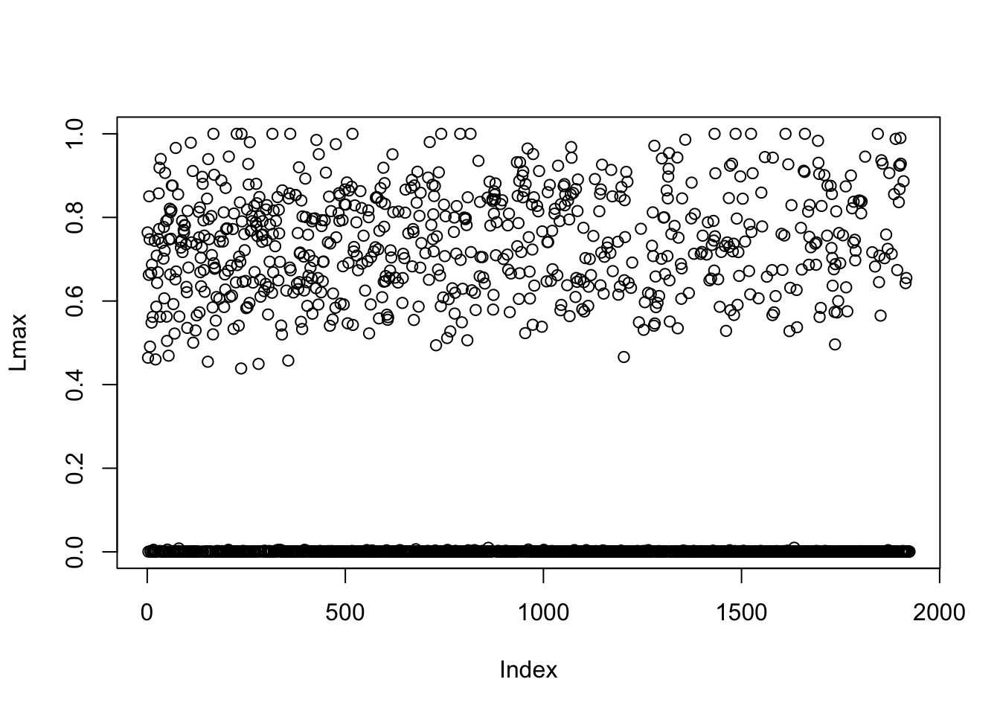
khat[Lmax<0.4] = 0 # only assign documents that exceed Lmax 0.4#col15 = c('#a6cee3','#1f78b4','#b2df8a','#33a02c','#fb9a99','#e31a1c','#fdbf6f','#ff7f00','#cab2d6','#6a3d9a','#ffff99','#b15928','black','darkgray','lightgray')
structure_plot_general(Lnorm,fit_flash$F_pm,grouping = samples$journal,std_L_method = 'col_max_1')Running tsne on 508 x 15 matrix.Running tsne on 280 x 15 matrix.Running tsne on 885 x 15 matrix.Running tsne on 251 x 15 matrix.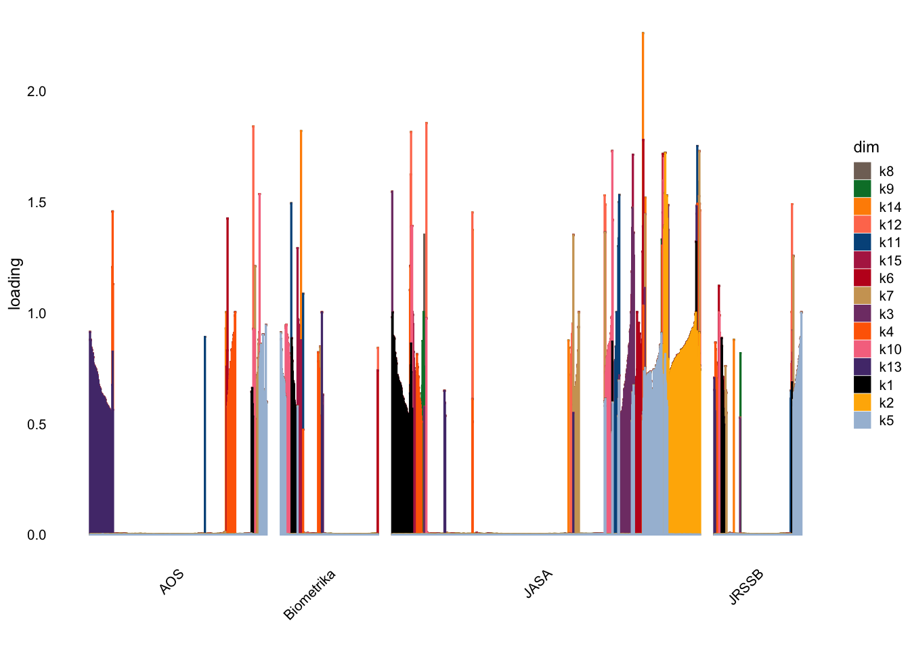
Here for EBPMF I define the keywords in each factor as those that that have a more than 2-fold enrichment (so fairly modest enrichment…)
key_ebpmf=list()
for(k in 1:ncol(Fnorm)){
key = Fnorm[,k]>log(2)
key_ebpmf[[k]] = (colnames(mat)[key])[order(Fnorm[key,k],decreasing = T)]
}
print(key_ebpmf)[[1]]
[1] "treatment" "causal" "trial" "placebo" "complianc"
[6] "assign" "depress" "adher" "arm" "patient"
[11] "noncompli" "outcom" "clinic" "estimand" "stratif"
[16] "dose" "instrument" "receiv" "prevent" "drug"
[21] "particip" "sever" "intervent" "subject" "control"
[26] "care" "random" "sensit" "treat" "design"
[31] "potenti" "efficaci" "effect" "adjust" "princip"
[36] "bias" "assumpt" "analys" "evalu" "infer"
[41] "observ" "studi"
[[2]]
[1] "materi" "onlin" "supplementari" "supplement"
[5] "proof" "articl"
[[3]]
[1] "health" "ozon" "agenc" "climat" "mortal"
[6] "air" "pollut" "qualiti" "nation" "year"
[11] "trend" "monitor" "public" "tempor" "survey"
[16] "report" "chang" "environment" "futur" "care"
[21] "uncertainti" "indic" "spatial" "sourc" "pattern"
[26] "state" "protect" "age" "sensit" "current"
[31] "relationship" "level" "impact" "account" "assess"
[36] "describ" "hierarch" "incorpor" "collect" "increas"
[41] "relat" "time" "bayesian"
[[4]]
[1] "fdr" "fals" "discoveri" "reject" "pvalu"
[6] "stepdown" "stepup" "kfwer" "hochberg" "hypothes"
[11] "fdp" "fwer" "control" "benjamini" "familywis"
[16] "singlestep" "null" "conserv" "test" "roy"
[21] "multipl" "divid" "soc" "procedur" "hypothesi"
[26] "rate" "ser" "toler" "power" "proport"
[31] "alpha" "abil" "simultan" "posit" "true"
[36] "desir" "attent" "expect" "total" "level"
[41] "number" "depend" "individu" "fix" "improv"
[46] "error" "independ" "defin"
[[5]]
[1] "chain" "markov" "mont" "carlo" "mcmc" "posterior"
[7] "sampler" "algorithm" "bayesian" "prior" "hierarch" "infer"
[13] "comput"
[[6]]
[1] "gene" "microarray" "express" "cdna" "array"
[6] "differenti" "biolog" "thousand" "detect" "experi"
[11] "identifi" "challeng"
[[7]]
[1] "seri" "autoregress" "spectral" "stationari"
[5] "garch" "nonstationari" "move" "time"
[9] "densiti" "process" "heteroscedast" "exponenti"
[13] "local" "averag"
[[8]]
[1] "statistician" "polici" "today" "scienc" "maker"
[6] "technolog" "bring" "scientist" "scientif" "live"
[11] "communic" "role" "decis" "engin" "polit"
[16] "effort" "inform" "challeng" "knowledg" "statist"
[[9]]
[1] "forecast" "wind" "pacif" "weather" "northwest"
[6] "speed" "energi" "probabilist" "ensembl" "hour"
[11] "calibr" "meteorolog" "geostatist" "center" "north"
[16] "predict" "resourc" "sharp" "regim" "american"
[21] "atmospher" "shortterm" "qualiti" "accur"
[[10]]
[1] "hazard" "cox" "surviv" "failur" "baselin"
[6] "cure" "frailti" "proport" "censor" "event"
[11] "cumul" "cancer" "semiparametr" "time" "timevari"
[16] "covari" "studi" "model"
[[11]]
[1] "trait" "loci" "genet" "haplotyp" "phenotyp"
[6] "geneenviron" "allel" "linkag" "locus" "genotyp"
[11] "diseas" "marker" "quantit" "pedigre" "chromosom"
[16] "casecontrol" "associ" "map" "gene" "popul"
[21] "complex" "multipl"
[[12]]
[1] "virus" "immunodefici" "hiv" "human" "infect"
[[13]]
[1] "minimax" "besov" "ball" "bound" "wavelet" "adapt"
[7] "sparsiti" "entri" "densiti" "nois" "threshold" "risk"
[13] "element" "upper" "white" "norm" "lower" "spars"
[19] "recov" "inequ" "nonzero" "rate" "loss" "logarithm"
[25] "attain" "rang" "converg" "unknown" "wide" "vector"
[31] "gaussian" "oracl" "optim" "satisfi" "uniform" "sens"
[37] "achiev" "prove" "class" "smooth" "error" "function"
[43] "estim" "deriv" "problem" "case"
[[14]]
[1] "issu" "address"
[[15]]
[1] "survey" "designbas" "auxiliari" "nonrespons" "calibr"
[6] "popul" "total" "modelbas" "unequ" "respond"
[11] "unit" "weight" "design" "unbias" "varianc"
[16] "sampl" "valu" "variabl" "probabl" "finit"
[21] "estim" All the factor keywords seem quite coherent. Factor 2 captures abstracts that mention online supplementary material. Factor 14 is abstracts that contain something about “addressing an issue”, which is a bit suprising it picks that out as a factor. Other factors capture particular statistical topics. Note that there are two different “genetic” factors - one capturing gene expression studies and the other capturing genetic studies (loci, haplotype etc).
key_topic = list()
for(k in 1:20){
dat <- data.frame(postmean = de$postmean[,k],
z = de$z[,k],
lfsr = de$lfsr[,k])
rownames(dat) <- colnames(mat)
dat <- subset(dat,lfsr < 0.01)
dat <- dat[order(dat$postmean,decreasing = TRUE),]
key_topic[[k]] = head(dat,n=10)
}
print(key_topic)[[1]]
postmean z lfsr
sampl 4.504675 126.296677 0.000000e+00
size 4.473069 56.134428 0.000000e+00
design 4.287038 87.290386 0.000000e+00
factori 4.192826 15.416739 2.366399e-54
alloc 4.188818 22.641492 3.120961e-114
balanc 4.183034 22.180779 9.735780e-110
responseadapt 4.140137 12.646595 2.257542e-37
block 4.068492 22.439892 3.096962e-112
doubl 4.013376 17.398316 1.692403e-68
overlap 3.814622 9.345003 2.101651e-21
[[2]]
postmean z lfsr
minimax 4.036672 29.406255 8.878489e-191
bound 4.025046 37.928889 0.000000e+00
densiti 3.953859 63.772539 0.000000e+00
sobolev 3.901347 9.303478 2.982434e-21
ball 3.845485 9.612933 1.583801e-22
besov 3.752093 7.541668 1.119728e-14
epsilon 3.749440 10.927960 1.981260e-28
deconvolut 3.727972 12.443787 3.550954e-36
upper 3.727942 18.914015 2.023917e-80
rateoptim 3.691060 7.136235 2.400026e-13
[[3]]
postmean z lfsr
sime 4.694280 14.53627 1.312878e-48
fals 4.677106 50.54097 0.000000e+00
procedur 4.673492 90.03622 0.000000e+00
fdr 4.668366 28.30744 4.993062e-177
stepdown 4.626701 16.35199 7.591187e-61
benjamini 4.621005 14.37595 1.330440e-47
fwer 4.614300 13.00140 2.196441e-39
pvalu 4.612015 24.19135 4.860176e-130
stepup 4.608013 14.57858 6.962319e-49
hochberg 4.606062 13.28768 4.976032e-41
[[4]]
postmean z lfsr
simex 3.420459 13.725357 2.020389e-43
estim 3.310755 147.121004 0.000000e+00
simulationextrapol 3.215205 7.860344 1.228244e-15
onestep 2.988451 9.090624 3.541077e-20
finitesampl 2.936107 13.522593 4.259692e-42
withinclust 2.926202 9.205125 1.262646e-20
jackknif 2.919058 9.015929 7.241760e-20
withinsubject 2.868769 6.664808 9.939324e-12
equat 2.778553 16.600529 2.739393e-62
consist 2.748458 48.317007 0.000000e+00
[[5]]
postmean z lfsr
process 4.485804 95.04826 0.000000e+00
seri 4.472627 89.94842 0.000000e+00
price 4.448606 34.87568 3.029286e-267
volatil 4.404405 19.81288 4.087197e-88
stationari 4.394650 29.74514 3.516552e-195
garch 4.365421 14.50880 1.931125e-48
autoregress 4.356348 21.29690 2.156757e-101
asset 4.318858 14.07820 9.458947e-46
highfrequ 4.264442 12.01052 5.867598e-34
longrang 4.207101 10.31916 1.116683e-25
[[6]]
postmean z lfsr
posterior 3.870781 35.847511 4.240708e-282
prior 3.863628 33.955524 2.141663e-253
mixtur 3.850942 43.441852 0.000000e+00
dirichlet 3.838878 25.337819 2.639644e-142
bayesian 3.763872 48.419461 0.000000e+00
gibb 3.747149 18.484262 6.329367e-77
urn 3.611877 11.893266 3.233213e-33
manifest 3.578526 9.661136 1.144680e-22
nonidentifi 3.548760 9.659247 1.186281e-22
markov 3.509569 31.204328 2.459653e-214
[[7]]
postmean z lfsr
placebo 4.459435 27.69235 1.510098e-169
dosefind 4.448009 16.39497 3.707500e-61
complianc 4.440710 21.14182 5.790073e-100
depress 4.440457 21.69158 4.342598e-105
treatment 4.439613 65.73416 0.000000e+00
causal 4.421280 32.92587 1.637864e-238
adher 4.395349 21.69641 3.923427e-105
vaccin 4.386820 19.34453 4.030071e-84
dose 4.368716 20.18341 2.436566e-91
toxic 4.363680 18.38453 3.123239e-76
[[8]]
postmean z lfsr
algorithm 4.182369 66.645253 0.000000e+00
filter 4.112878 26.727905 4.208197e-158
onlin 3.988468 39.335239 0.000000e+00
materi 3.969232 27.861521 1.568586e-171
particl 3.930217 15.075221 4.916345e-52
recurs 3.849265 14.113929 6.801209e-46
supplementari 3.830156 16.482090 1.080836e-61
meng 3.778031 9.075203 2.651347e-20
carlo 3.766315 43.560296 0.000000e+00
mont 3.747158 37.352200 5.294618e-306
[[9]]
postmean z lfsr
likelihood 4.392469 89.310778 0.000000e+00
maximum 4.340275 52.657508 0.000000e+00
confid 4.327584 43.220674 0.000000e+00
nuisanc 4.264852 23.353831 2.273449e-121
psi 4.129733 9.903102 8.027261e-24
interv 4.129167 53.637714 0.000000e+00
loglikelihood 4.047954 12.330181 1.248305e-35
coverag 4.032817 19.619445 2.073830e-86
mles 3.925578 8.221821 4.416643e-17
mle 3.917259 13.551781 1.632620e-42
[[10]]
postmean z lfsr
test 4.188709 191.490198 0.000000e+00
hypothesi 4.158644 45.810494 0.000000e+00
power 4.103589 33.660194 4.170956e-249
omnibus 4.090717 9.790117 2.505746e-23
onesampl 4.024966 9.290511 3.196464e-21
goodnessoffit 3.968773 14.032309 2.032140e-45
null 3.956591 34.414812 3.051199e-260
rankbas 3.782613 7.888868 7.212891e-16
wild 3.778657 9.309809 2.984521e-21
supremum 3.710409 6.883108 1.457388e-12
[[11]]
postmean z lfsr
gene 4.385719 53.46995 0.000000e+00
cluster 4.376433 81.70559 0.000000e+00
motif 4.331261 19.36651 2.651084e-84
trait 4.329648 29.90440 3.052972e-197
mutat 4.310213 20.84080 3.312816e-97
allel 4.302635 15.14365 1.523146e-52
transcript 4.298888 16.70574 2.161298e-63
genet 4.298314 38.91971 0.000000e+00
genotyp 4.293647 17.86449 4.038284e-72
microarray 4.292581 25.28242 8.920572e-142
[[12]]
postmean z lfsr
imag 4.277845 26.92441 2.039012e-160
curv 4.267428 38.03173 0.000000e+00
surfac 4.234036 23.48807 9.819763e-123
voxel 4.201100 13.91053 1.028778e-44
multiscal 4.200034 14.75565 5.303832e-50
geodes 4.179107 11.38232 9.873516e-31
field 4.159271 23.23039 4.179241e-120
manifold 4.145058 13.97868 4.026398e-45
tensor 4.138347 12.91831 6.848858e-39
sphere 4.137472 12.89501 9.272697e-39
[[13]]
postmean z lfsr
depth 4.834574 34.85274 7.260793e-267
classif 4.814193 43.62757 0.000000e+00
machin 4.775588 35.00277 3.744443e-269
classifi 4.774179 29.82773 3.136345e-196
discrimin 4.755364 27.66746 3.144572e-169
wind 4.750988 23.00129 8.287969e-118
surrog 4.717734 27.63001 8.769303e-169
breakdown 4.695996 18.91250 1.633644e-80
loss 4.600547 38.80047 0.000000e+00
rule 4.596327 38.00187 0.000000e+00
[[14]]
postmean z lfsr
censor 4.323457 43.49064 0.000000e+00
surviv 4.308309 42.34057 0.000000e+00
hazard 4.299692 31.93877 1.375575e-224
recurr 4.278101 20.17893 2.710941e-91
failur 4.269402 37.69208 1.487307e-312
cure 4.258309 23.99209 6.072887e-128
incid 4.226998 18.12800 3.523611e-74
frailti 4.222826 15.10443 2.815998e-52
lengthbias 4.201312 16.02324 1.639636e-58
event 4.184571 36.32146 1.357472e-289
[[15]]
postmean z lfsr
spline 3.806563 43.92082 0.000000e+00
varyingcoeffici 3.678471 16.34715 1.091224e-60
anova 3.677339 17.46552 6.273406e-69
partial 3.642703 23.79195 9.834853e-126
linear 3.583612 47.59606 0.000000e+00
backfit 3.534270 12.71306 1.318796e-37
distort 3.464835 13.98475 5.301850e-45
quantil 3.381978 19.92455 7.174955e-89
predictor 3.350404 38.53414 0.000000e+00
nonlinear 3.314362 25.52881 2.832724e-144
[[16]]
postmean z lfsr
lasso 4.266313 35.222313 1.629364e-272
select 4.260665 87.546437 0.000000e+00
penalti 4.239922 30.369815 2.483224e-203
lar 4.158032 14.876126 8.939724e-51
aic 4.108138 19.070406 8.486825e-82
bic 4.102100 18.034557 1.999557e-73
akaik 4.098391 17.851954 5.359189e-72
selector 4.094082 20.425111 1.914077e-93
dantzig 4.025949 9.859027 1.294396e-23
criterion 3.976933 25.444920 1.610106e-143
[[17]]
postmean z lfsr
climat 4.354802 21.535735 1.280903e-103
vote 4.319665 16.451939 1.470285e-61
network 4.313801 34.295398 1.627770e-258
ozon 4.298052 18.959300 6.677756e-81
mortal 4.286845 23.641057 2.618021e-124
air 4.219602 14.250513 8.316084e-47
pollut 4.185208 11.227139 5.782267e-30
greenhous 4.175717 9.560959 2.299299e-22
retail 4.175681 13.231969 1.091850e-40
atmospher 4.159352 9.862672 1.191431e-23
[[18]]
postmean z lfsr
vertic 4.445939 31.548819 3.249806e-219
chart 4.441416 15.927222 7.335939e-58
extrem 4.436493 29.113183 4.276907e-187
outlier 4.401433 26.122388 3.569365e-151
shift 4.397431 18.562289 1.154538e-77
tail 4.321035 26.501326 1.662946e-155
changepoint 4.007687 15.092754 3.633981e-52
jin 3.950064 9.572522 2.232380e-22
small 3.887408 34.904450 1.330137e-267
errorsinvari 3.835546 7.058506 3.940603e-13
[[19]]
postmean z lfsr
matrix 4.626198 49.95988 0.000000e+00
matric 4.595742 36.78070 6.591460e-297
dimens 4.575820 41.48865 0.000000e+00
graph 4.575820 39.94272 0.000000e+00
wishart 4.565405 20.91562 6.829691e-98
slice 4.500033 20.16752 3.335208e-91
eigenvector 4.494311 16.16613 1.560414e-59
choleski 4.487300 15.81484 4.393420e-57
subspac 4.451931 17.52299 1.700829e-69
eigenvalu 4.433771 19.59843 2.823000e-86
[[20]]
postmean z lfsr
imput 4.372700 30.99678 1.047034e-211
miss 4.333975 42.41367 0.000000e+00
nonrespons 4.322829 20.11272 1.023251e-90
census 4.289778 16.04607 1.110431e-58
auxiliari 4.280113 20.72135 4.013638e-96
missingdata 4.225256 15.95462 4.900989e-58
missing 4.214046 14.32958 2.675089e-47
designbas 4.206272 15.75703 1.145085e-56
nonignor 4.200257 13.03250 1.512565e-39
survey 4.174247 41.58802 0.000000e+00The topic keywords also seem quite coherent and to capture meaningful statistical topics. The topics seem perhaps more heterogeneous than the factors.
An anchor word is one that has non-zero frequency in exactly one topic. Although we did not use the “anchor word assumption” in fitting the model, it turns out that many words do indeed effectively fulfill the assumption (treating any frequency <1e-8 as “effectively 0”). Here I print out the anchor words for each topic.
anchor_topic = list()
wordorder = order(rowSums(fit_tm_k20$F),decreasing=TRUE)
F_ord = fit_tm_k20$F[wordorder,]
ntopic= rowSums(F_ord>1e-8) #use 1e-8 as cutoff for 0
anchor_words= list()
for(k in 1:20){
anchor_words[[k]] = rownames(F_ord)[(ntopic==1) & (F_ord[,k]>1e-8)]
}
anchor_words[[1]]
[1] "sampl" "size" "factori" "responseadapt"
[[2]]
[1] "bound" "minimax" "assoc" "amer" "ball" "besov"
[7] "sobolev" "slower" "rateoptim" "corrupt"
[[3]]
[1] "procedur" "fals" "pvalu"
[4] "reject" "fdr" "stepdown"
[7] "familywis" "stepup" "kfwer"
[10] "hochberg" "fwer" "benjamini"
[13] "soc" "fdp" "bonferroni"
[16] "singlestep" "holm" "sime"
[19] "multipletest" "nondiscoveri" "benjaminihochberg"
[[4]]
[1] "simex" "jackknif" "simulationextrapol"
[[5]]
[1] "process" "seri" "autoregress" "stationari"
[5] "price" "volatil" "garch" "asset"
[9] "memori" "periodogram" "highfrequ" "longmemori"
[13] "earthquak" "continuoustim" "thin" "longrang"
[17] "lowfrequ" "trade"
[[6]]
[1] "prior" "mixtur" "posterior" "dirichlet" "gibb" "manifest"
[7] "devianc" "polya"
[[7]]
[1] "treatment" "causal" "dose" "vaccin" "intervent"
[6] "toxic" "placebo" "complianc" "estimand" "depress"
[11] "doserespons" "dosefind" "elder" "posttreat" "ethic"
[[8]]
[1] "algorithm" "filter" "recurs" "metropoli"
[5] "multimod" "transdimension" "liu" "meng"
[9] "autom" "simulationbas" "judg"
[[9]]
[1] "likelihood" "maximum" "confid" "nuisanc"
[5] "loglikelihood" "mle" "tild" "reml"
[9] "mles" "psi"
[[10]]
[1] "onesampl" "wilcoxon" "omnibus"
[[11]]
[1] "cluster" "gene" "microarray" "trait" "dna"
[6] "protein" "linkag" "mutat" "genotyp" "chromosom"
[11] "motif" "loci" "scan" "phenotyp" "haplotyp"
[16] "genomewid" "polymorph" "snp" "pedigre" "transcript"
[21] "allel" "cdna" "locus" "assay" "disord"
[26] "yeast"
[[12]]
[1] "curv" "imag" "surfac" "multiscal"
[5] "manifold" "tensor" "voxel" "sphere"
[9] "eigenfunct" "orient" "pixel" "variogram"
[13] "waveletbas" "reson" "multiresolut" "threedimension"
[17] "fmri" "vision" "geodes" "planar"
[21] "neuron" "riemannian" "anatom"
[[13]]
[1] "classif" "classifi" "discrimin" "depth"
[5] "wind" "machin" "speed" "trim"
[9] "misclassif" "vehicl" "centroid" "multicategori"
[[14]]
[1] "surviv" "censor" "hazard" "failur" "baselin"
[6] "recurr" "cure" "frailti" "incid" "timedepend"
[11] "prostat" "rightcensor" "lengthbias" "transplant" "survivor"
[16] "lifetim" "casecohort" "registri" "colorect" "pulmonari"
[21] "dementia"
[[15]]
[1] "backfit" "quasilikelihood" "varyingcoeffici" "bspline"
[5] "singleindex" "splinebas" "populationaverag"
[[16]]
[1] "select" "lasso" "penalti"
[4] "akaik" "selector" "aic"
[7] "bic" "ridg" "lar"
[10] "irrelev" "dantzig" "elast"
[13] "scad" "clip" "ultrahighdimension"
[16] "lregular"
[[17]]
[1] "network" "climat" "ozon" "air" "vote" "pollut"
[7] "stream" "retail" "flow" "disabl" "ecolog" "compani"
[13] "greenhous" "poll" "polit" "station" "atmospher" "custom"
[19] "anim" "ultim" "threat"
[[18]]
[1] "extrem" "outlier" "vertic" "shift" "chart"
[6] "unstabl" "errorsinvari" "jin" "pareto"
[[19]]
[1] "matrix" "dimens" "matric" "eigenvector" "subspac"
[6] "slice" "wishart" "pca" "choleski" "frobenius"
[11] "acycl" "undirect"
[[20]]
[1] "imput" "auxiliari" "nonrespons" "census"
[5] "missing" "missingdata" "nonignor" "designbas"
[9] "robin" "visit" "nutrit" "superpopul"
[13] "errorpron" "interview" "rotnitzki" "nonrespond"
[17] "errorfre" "ubiquit" "missingatrandom" "bureau" It is notable that many of the anchor words are quite “general” statistical words, like “sampl”, “bound”, “procedur”,“likelihood”, “matrix” etc.
It is also notable that some anchor words for the same topic often correspond to very different concepts. For example “bound” and “corrupt”; “prior” and “mixture”; “cluster” and “linkag”; “curv” and “tensor”; “classif” and “depth”; “air” and “vote”; etc. I think this is an indication that the topics are perhaps not really capturing a single concept.
Here I look at which words are most overdispersed in the EBPMF model. In some ways these words can be thought of as “single-word factors”.
sort(fit_ebpmf_k20$sigma2,decreasing = TRUE)[1:20] cluster quantil bootstrap imput lasso spatial curv theta
5.113821 4.625522 4.559986 4.479669 4.441447 4.419992 4.344209 4.317846
exposur depth rank graph imag network diffus classif
4.159766 4.157430 4.142415 4.134635 3.839605 3.825030 3.818873 3.791550
bandwidth vaccin predictor screen
3.774759 3.752250 3.741212 3.707017 We see “cluster” is the most overdispersed. Let’s look at some documents that use a lot of that word.
order(mat[,"cluster"],decreasing = TRUE)[1:10] [1] 35 306 239 331 84 786 1319 505 540 584sla[35,]$abstract[1] "Genes are often regulated in living cells by proteins called transcription factors that bind directly to short segments of DNA in close proximity to specific genes. These binding sites have a conserved nucleotide appearance, which is called a motif. Several recent studies of transcriptional regulation require the reduction of a large collection of motifs into clusters based on the similarity of their nucleotide composition. We present a principled approach to this clustering problem based on a Bayesian hierarchical model that accounts for both within- and between-motif variability. We use a Dirichlet process prior distribution that allows the number of clusters to vary and we also present a novel generalization that allows the core width of each motif to vary. This clustering model is implemented, using a Gibbs sampling strategy, on several collections of transcription factor motif matrices. Our stochastic implementation allows us to examine the variability of our results in addition to focusing on a set of best clusters. Our clustering results identify several motif clusters that suggest that several transcription factor protein families are actually mixtures of several smaller groups of highly similar motifs, which provide substantially more refined information compared with the full set of motifs in the family. Our clusters provide a means by which to organize transcription factors based on binding motif similarities and can be used to reduce motif redundancy within large databases such as JASPAR and TRANSFAC, which aides the use of these databases for further motif discovery. Finally, our clustering procedure has been used in combination with discovery of evolutionarily conserved motifs to predict co-regulated genes. An alternative to our Dirichlet process prior distribution is presented that differs substantially in terms of a priori clustering characteristics, but shows no substantive difference in the clustering results for our dataset. Despite our specific application to transcription factor binding motifs, our Bayesian clustering model based on the Dirichlet process has several advantages over traditional clustering methods that could make our procedure appropriate and useful for many clustering applications."sla[306,]$abstract[1] "The problem of multiple testing for the presence of signal in spatial data can involve numerous locations. Traditionally, each location is tested separately for signal presence, but then the findings are reported in terms of clusters of nearby locations. This is an indication that the units of interest for testing are clusters rather than individual locations. The investigator may know a priori these more natural units or an approximation to them. We suggest testing these cluster units rather than individual locations, thus increasing the signal-to-noise ratio within the unit tested as well as reducing the number of hypothesis tests conducted. Because the signal may be absent from part of each cluster, we define a cluster as containing a signal if the signal is present somewhere within the cluster. We suggest controlling the false discovery rate (FDR) on clusters (i.e., the expected proportion of clusters rejected erroneously out of all clusters rejected) or its extension to general weights (WFDR). We introduce a powerful two-stage testing procedure and show that it controls the WFDR. Once the cluster discoveries have been made, we suggest \"cleaning\" locations in which the signal is absent. For this purpose, we develop a hierarchical testing procedure that first tests clusters, then tests locations within rejected clusters. We show formally that this procedure controls the desired location error rate asymptotically, and conjecture that this is also so for realistic settings by extensive simulations. We discuss an application to functional neuroimaging that motivated this research and demonstrate the advantages of the proposed methodology on an example."sla[239,]$abstract[1] "In many situations there is interest in parameters (e.g., mean) associated with the response distribution of individual Clusters in a finite clustered population. We develop predictors of such parameters using a two-stage sampling probability model with response error. The probability model sterns directly from finite population sampling without additional assumptions, and thus is design-based. The predictors are closely related to best linear unbiased predictors (BLUP) that arise from common mixed-model methods, as well as to model-based predictors obtained via super population approaches for survey sampling, The context assumes Clusters of equal size and equal size sampling of units within clusters, Target parameters may correspond to clusters realized in the sample, as well as nonrealized clusters. In either case, the predictors are linear and unbiased, and minimize the expected mean squared error. They correspond to the sum of predictors of responses for realized and nonrealized units in the Cluster, accounting directly for the second-stage sampling fraction. In contrast, the BLUP commonly used in mixed models can be interpreted as predicting only the responses of second-stage units not observed for a cluster. not the cluster mean. The development reveals that two-stage sampling does riot give rise to it more general variance structure often assumed in superpopulation models, even when variances within clusters are heterogeneous. With response error present, we predict target random variables defined as an expected (or average) response over units in a cluster."sla[331,]$abstract[1] "Multiple hypothesis testing and clustering have been the subject of extensive research in high-dimensional inference, yet these problems usually have been treated separately. By defining true clusters in terms of shared parameter values, we could improve the sensitivity of individual tests, because more data bearing on the same parameter values are available. We develop and evaluate a hybrid methodology that uses clustering information to increase testing sensitivity and accommodates uncertainty in the true clustering. To investigate the potential efficacy of the hybrid approach, we first study a stylized example in which each object is evaluated with a standard z score but different objects are connected by shared parameter values. We show that there is increased testing power when the clustering is estimated sufficiently well. We next develop a model-based analysis using a conjugate Dirichlet process mixture model. The method is' general, but for specificity we focus attention on microarray gene expression data, to which both clustering and multiple testing methods are actively applied. Clusters provide the means for sharing information among genes, and the hybrid methodology averages over uncertainty in these clusters through Markov chain sampling. Simulations show that the hybrid method performs substantially better than other methods when clustering is heavy or moderate and performs well even under weak clustering. The proposed method is illustrated on microarray data from a study of the effects of aging on gene expression in heart tissue."We can see these documents are quite heteregeneous.
We can get estimated “loadings” on these single-word factors from (mu-LF’), which are the residuals from the flash fit:
resid <- flashier:::residuals.flash(fit_ebpmf_k20$fit_flash)
hist(resid)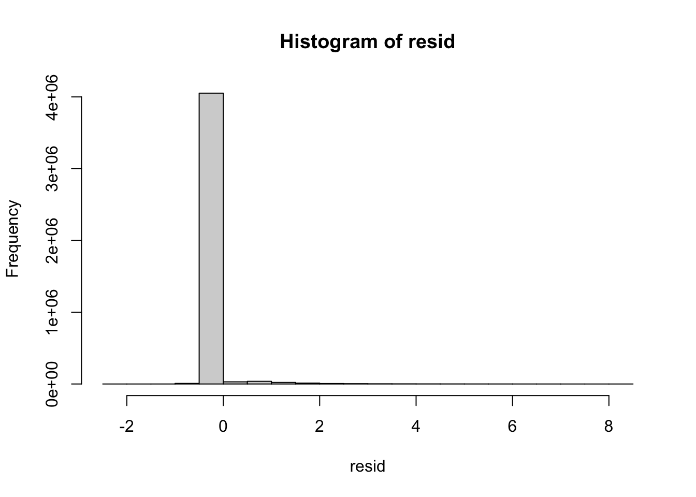
Here I threshold the “word factors” at log(5) [so looking for documents that are at least 5-fold enriched for each word].
wf = Matrix(resid>log(5)) #make it sparse
ndocs = colSums(wf)
sort(ndocs,decreasing = TRUE)[1:20] test design select covari matrix correl densiti
248 198 179 178 175 169 165
coeffici factor prior process robust function predictor
162 158 157 155 154 153 143
mixtur likelihood regress risk interv spatial
142 140 137 128 127 126 Let’s look at the documents most enriched for “test”. This first document is clearly represented as a bunch of single-word enrichments rather than “topics”:
order(resid[,"test"],decreasing = TRUE)[1:10] [1] 1687 1606 1650 1122 1617 1560 655 1613 1043 345sla[1687,]$abstract[1] "We investigate tests for periodicity based on a spectral analysis of a time series, differentiating between global and local spectral-based tests. Global tests use information across the entire frequency band,whereas local tests are based on a window around the test frequency.We show that many spectral-based tests can be expressed in terms of a regression-based F test, which allows for approximate size and power calculations. Since global tests are usually derived assuming white noise errors, we extend to the correlated noise case. We demonstrate via a Monte Carlo study that although the global test may have better size and power, local tests are easier to use, and are comparable or better in terms of the power to detect periodicities, especially for spectra with a large dynamic range. We apply this methodology to a nonbehavioural test of hearing."Lnorm[1687,] [1] 1.705025e-04 5.139162e-04 1.211932e-04 1.234305e-04 9.011233e-04
[6] 3.609495e-04 1.923498e-03 8.202284e-06 1.162772e-05 2.910108e-04
[11] 6.299791e-05 7.419914e-05 4.159934e-04 2.273099e-04 1.015165e-04which(wf[1687,]) correl detect dynam frequenc global local nois period
414 508 590 794 831 1094 1278 1413
power size spectral test
1473 1791 1832 1968 Same with this one:
sla[1606,]$abstract[1] "We consider the problem of testing the hypothesis that a multivariate location vector is in the positive orthant. A conditionally distribution-free sign test is proposed for this problem. This test is related to the Hodges test and can be motivated by the union-intersection principle. Moreover, it is valid under very mild assumptions. A characterization of the conditional null distribution of the test statistic is given. We provide a step-by-step procedure that can be used to perform the test in practice. In the bivariate case, an explicit formula for the exact null conditional distribution of the test statistic is derived. This conditional distribution can be used to compute exact conditional P values. A simulation study compares the new test to some competitors, including the likelihood ratio test. The results show that the new test is very competitive for a wide variety of distributional models. A real data example illustrating the use of the test is also presented."Lnorm[1606,] [1] 1.830977e-04 5.115770e-04 1.118811e-04 1.737140e-04 4.865740e-04
[6] 1.416126e-04 2.847645e-04 1.006032e-05 1.146584e-05 2.523482e-04
[11] 6.252932e-05 7.405469e-05 2.511678e-04 2.261644e-04 1.134552e-04which(wf[1606,]) bivari condit distribut exact formula locat null principl
196 360 561 681 782 1095 1320 1499
ratio sign test
1581 1766 1968 This one is similar story, but also assigned to the genetic factor because it uses a genetic example.
sla[1650,]$abstract[1] "The Wilcoxon rank-sum test is widely used to test the equality of two populations, because it makes fewer distributional assumptions than parametric procedures such as the t-test. However, the Wilcoxon rank-sum test can be used only if data are independent. When data are clustered, tests based on generalized estimating equations (GEEs) that generalize the t-test have been proposed. Here we develop a rank-sum test that can be used when data are clustered. As an application, we use our rank-sum test to develop a nonparametric test of association between a genetic marker and a quantitative trait locus. We also give a rank-sum test for equivalence of three or more populations that generalizes the Kruskal-Wallis test to situations with clustered data. Unlike previous rank tests for clustered data, our proposal is valid when members of the same cluster belong to different groups, or when the correlation between cluster members differs across groups."Lnorm[1650,] [1] 1.799730e-04 5.139321e-04 1.138465e-04 1.049731e-04 4.517460e-04
[6] 1.303318e-04 2.891624e-04 8.195649e-06 1.153174e-05 2.314186e-04
[11] 7.750136e-01 7.419396e-05 1.646619e-04 2.273050e-04 1.445194e-04which(wf[1650,]) cluster correl equat gee group member popul rank
306 414 659 811 847 1172 1459 1575
test wilcoxon
1968 2153 I wondered whether we are “missing” some topic structure by using the word factors. If the word factors are correlated, we might prefer to pick that up in some “topic” factors. Since wf is a sparse matrix I can use that to compute its correlation quicker.
sparse.cor <- function(x){
n <- nrow(x)
m <- ncol(x)
ii <- unique(x@i)+1 # rows with a non-zero element
Ex <- colMeans(x)
nozero <- as.vector(x[ii,]) - rep(Ex,each=length(ii)) # colmeans
covmat <- ( crossprod(matrix(nozero,ncol=m)) +
crossprod(t(Ex))*(n-length(ii))
)/(n-1)
sdvec <- sqrt(diag(covmat))
covmat/crossprod(t(sdvec))
}
wf= wf[,colSums(wf)>4] # remove words with few strong enrichments
wf.cor = sparse.cor(wf)
diag(wf.cor)=0
hist(wf.cor)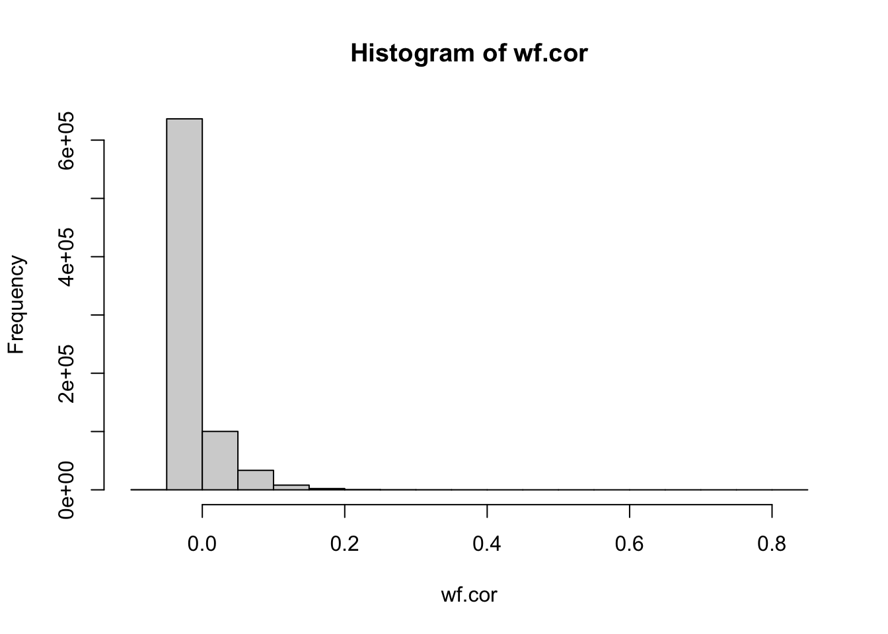
max(wf.cor)[1] 0.8158578rowmax = apply(wf.cor,1,max)
wf.high = wf.cor[rowmax>0.5,]
for(i in 1:nrow(wf.high)){
print(paste(rownames(wf.high)[i],colnames(wf.high)[wf.high[i,]>0.5]))
}[1] "aberr factori"
[1] "aic bic"
[1] "bar vertic"
[1] "bic aic"
[1] "central theorem"
[1] "chart cusum"
[1] "climat greenhous"
[1] "confid interv"
[1] "cusum chart"
[1] "dantzig selector"
[1] "dose dosefind"
[1] "dosefind dose" "dosefind toxic"
[1] "eigenvalu eigenvector"
[1] "eigenvector eigenvalu"
[1] "elast net"
[1] "elect poll" "elect vote"
[1] "factori aberr"
[1] "greenhous climat"
[1] "interv confid"
[1] "net elast"
[1] "poll elect"
[1] "selector dantzig"
[1] "theorem central"
[1] "toxic dosefind"
[1] "vertic bar"
[1] "vote elect"There are some obvious pairs of words with very strong correlations - “dantzig selector”, “eigenvalu eigenvector”, “elast net”, “confid interv” etc.It seems that flash is missing these “two-word” factors in the residuals. This is maybe because the flash initialization uses PCA so tends to favor dense factors and may miss sparse factors? Most of these two-word factors are not necessarily that interesting, but it makes one wonder whether what else it is missing. Maybe we can improve this (by alternative initializations?)?
Strictly speaking there are no anchor words in EBPMF fits. But it is possible that a word could be “effectively” an anchor word, if its estimated background frequency is very low (so when the word appears, the document has to be loaded on a factor) and then only one factor has appreciable weighting on that factor. So I took a look at this.
The estimated background frequency of each word is exp(F_j2)/n_w where n_w is the total number of words. (The 1/n_w term comes in because in the implementation the size factor is set to mean word count, or document length divided by number of words.) Here I plot background against empirical word frequency to see if any words have very low background estimate relative to their empirical word frequency.
nw = ncol(mat)
f_emp = colSums(mat)/sum(mat)
plot(log(f_emp), fit_ebpmf_k20$fit_flash$F_pm[,2]-log(nw))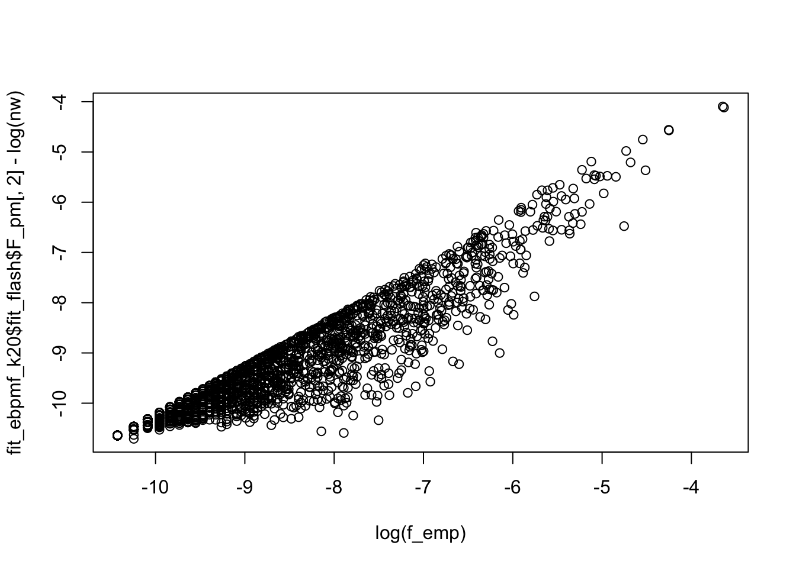
So, although the background frequency can be appreciably lower than the empirical freuqency, no background frequency is “effectively 0”. Which word shows the biggest difference in the estimate?
which.max(log(f_emp) - fit_ebpmf_k20$fit_flash$F_pm[,2]-log(nw))cluster
306 So, this is probably reflecting its overdispersion rather than it being an “anchor word”.
I wanted to see what the topic model looks like on the “multiple testing” factor (k4) from EBPMF. It seems that the topic 3 is the one that captures this.
cor(fit_tm_k20$L,Lnorm[,4]) [,1]
k1 -0.04732768
k2 -0.05668033
k3 0.89236253
k4 -0.11352141
k5 -0.06286687
k6 -0.05165116
k7 -0.02130871
k8 -0.06942500
k9 -0.06926927
k10 0.05835367
k11 0.01655503
k12 -0.05576970
k13 -0.03452769
k14 -0.06424856
k15 -0.09433031
k16 -0.04910915
k17 -0.06126851
k18 -0.04955010
k19 -0.05723408
k20 -0.06082059structure_plot_general(fit_tm_k20$L[khat==4,],fit_tm_k20$F,grouping = samples$journal[khat==4], gap=2)Running tsne on 23 x 20 matrix.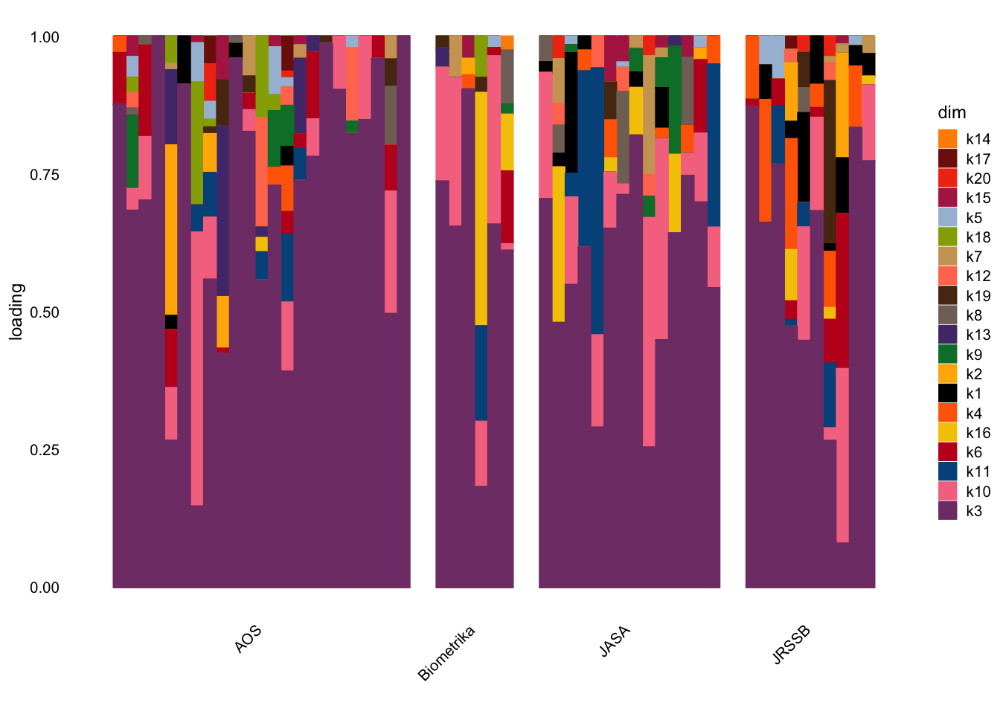
plot(fit_tm_k20$L[,3],Lnorm[,4])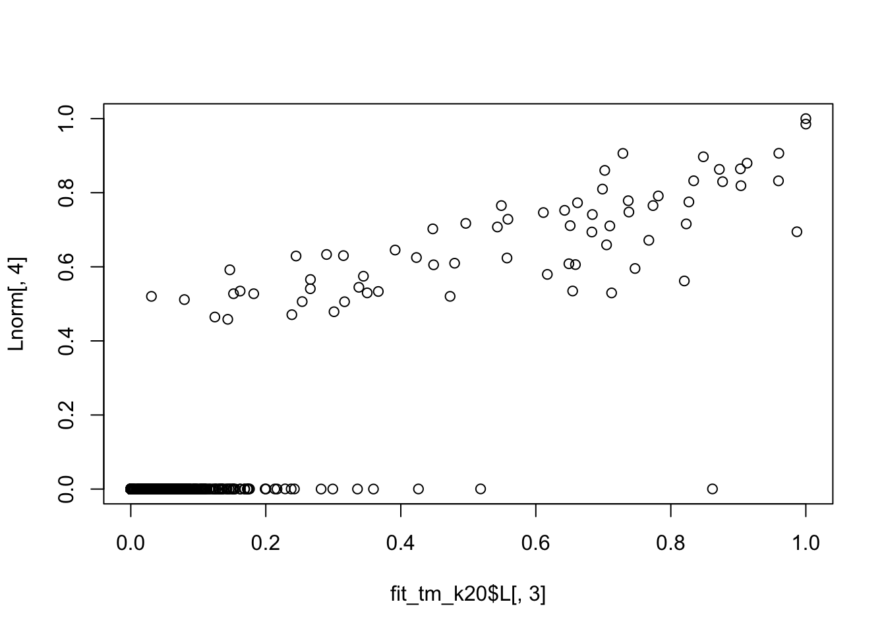
I wanted to see which documents have the biggest difference. The first one looks like it is on testing but not “multiple testing”. EBPMF seems to assign it to no factor.
order(fit_tm_k20$L[,3]-Lnorm[,4],decreasing=TRUE)[1:10] [1] 244 882 1603 237 1548 1521 445 1724 1697 377sla[244,]$abstract[1] "Testing for efficacy in multiple endpoints has emerged as an important statistical problem. The Food and Drug Administration (FDA) will issue a guidance on Multiple Endpoints in the near future.When there are primary and secondary endpoints, efficacy in the secondary endpoint is relevant only if efficacy in the primary endpoint has been shown. Thus, there are defined paths to decision making. Current approaches to this problem are based on closed testing, testing all possible intersection hypotheses, and collating the results. For decision making to follow predefined paths, strategic choices of test statistics and critical values must be made. As the number of doses and endpoints increase, such strategic choices become increasingly difficult.Partition testing is an alternative to closed testing. It provides insight into confidence sets for stepwise tests, and can be more powerful than closed testing. It also can simplify problem formulation when decision making follows specific paths. For the primary-secondary endpoints problem, we show that partition testing has advantages. When used to implement what we call the \"decision path principle,\" partition testing not only drastically reduces the number of hypotheses to be tested, but also guides decision making along predefined paths. With Our way of setting critical values, it has higher probabilities than gatekeeping methods of correctly inferring efficacious primary endpoints as being efficacious, while maintaining the same level of strong FWER control. These advantages are illustrated with a real data example and by simulation."Lnorm[244,] [1] 3.927993e-04 4.947020e-04 1.463706e-04 3.867288e-04 4.362139e-04
[6] 1.335429e-04 2.551193e-04 1.586393e-05 1.100361e-05 2.015448e-04
[11] 7.075285e-05 7.306040e-05 1.451382e-04 4.549306e-04 1.191429e-04The second one is really about hazard/survival analysis so EBPMF assigns it to factor 10. The topic model assigns it as a mix between hypothesis testing and hazard topics (3 and 10).
sla[882,]$abstract[1] "Comparison of two hazard rates is important in applications that are related to times to occurrence of a specific event. Conventional comparison procedures, such as the log-rank, Gehan-Wilcoxon and Peto-Peto tests, are powerful only when the two hazard rates do not cross each other. Because crossing hazard rates are common in practice, several procedures have been proposed in the literature for comparing such rates. However, most of these procedures consider only the alternative hypothesis with crossing hazard rates; many other realistic cases, including those when the two hazard rates run parallel to each other, are excluded from consideration. We propose a two-stage procedure that considers all possible alternatives, including ones with crossing or running parallel hazard rates. To define its significance level and p-value properly, a new procedure for handling the crossing hazard rates problem is suggested, which has the property that its test statistic is asymptotically independent of the test statistic of the log-rank test. We show that the two-stage procedure, with the log-rank test and the suggested procedure for handling the crossing hazard rates problem used in its two stages, performs well in applications in comparing two hazard rates."Lnorm[882,] [1] 1.488452e-04 5.038893e-04 1.195021e-04 4.321157e-04 4.206232e-04
[6] 1.378416e-04 2.835137e-04 9.681173e-06 1.126861e-05 7.885075e-01
[11] 6.102801e-05 7.360139e-05 3.013017e-04 2.224667e-04 9.289340e-05fit_tm_k20$L[882,] k1 k2 k3 k4 k5 k6
1.017058e-10 1.187490e-10 5.182019e-01 1.428728e-10 1.021090e-10 1.267536e-10
k7 k8 k9 k10 k11 k12
1.045297e-10 1.135688e-10 1.063708e-10 2.076993e-01 1.064246e-10 1.083539e-10
k13 k14 k15 k16 k17 k18
9.097474e-11 2.740988e-01 1.248849e-10 1.113544e-10 1.064656e-10 1.009941e-10
k19 k20
9.762227e-11 1.060869e-10 This one is about clinical trial methods, and again both results make some sense but arguably not really about multiple testing, so suprising the topic model assigns so strongly there.
sla[1603,]$abstract[1] "A main objective in clinical trials is to find the best treatment in a given finite class of competing treatments and then to show superiority of this treatment against a control treatment. The traditional procedure estimates the best treatment in a first trial. Then in an independent second trial superiority of this treatment, estimated as best in the first trial, is to be shown against the control treatment by a size alpha test. In this paper we investigate these two trials of this traditional procedure as a two-stage test procedure. Additionally we introduce competing two-stage group-sequential test procedures. Then we derive formulae for the expected number of patients. These formulae depend on unknown parameters. When we have a prior for the unknown parameters we can determine the two-stage test procedure of size a and power beta that is optimal, in that it needs a minimal number of observations. The results are illustrated by a numerical example, which indicates the superiority of the group-sequential procedures."Lnorm[1603,] [1] 6.743772e-01 5.111528e-04 1.082057e-04 3.012479e-04 4.896663e-04
[6] 1.413958e-04 2.837529e-04 8.115806e-06 1.148348e-05 2.223306e-04
[11] 6.242350e-05 7.402927e-05 2.941284e-04 2.259609e-04 1.196048e-04key_ebpmf[[1]] [1] "treatment" "causal" "trial" "placebo" "complianc"
[6] "assign" "depress" "adher" "arm" "patient"
[11] "noncompli" "outcom" "clinic" "estimand" "stratif"
[16] "dose" "instrument" "receiv" "prevent" "drug"
[21] "particip" "sever" "intervent" "subject" "control"
[26] "care" "random" "sensit" "treat" "design"
[31] "potenti" "efficaci" "effect" "adjust" "princip"
[36] "bias" "assumpt" "analys" "evalu" "infer"
[41] "observ" "studi" fit_tm_k20$L[1603,] k1 k2 k3 k4 k5 k6
8.911248e-02 5.833634e-02 4.261335e-01 4.041548e-02 1.298265e-10 2.777879e-02
k7 k8 k9 k10 k11 k12
2.635440e-01 1.443970e-10 4.234663e-02 5.233281e-02 1.353135e-10 1.377666e-10
k13 k14 k15 k16 k17 k18
1.156698e-10 1.375686e-10 1.587848e-10 1.415815e-10 1.353656e-10 1.284089e-10
k19 k20
1.241218e-10 1.348842e-10 key_topic[[7]] postmean z lfsr
placebo 4.459435 27.69235 1.510098e-169
dosefind 4.448009 16.39497 3.707500e-61
complianc 4.440710 21.14182 5.790073e-100
depress 4.440457 21.69158 4.342598e-105
treatment 4.439613 65.73416 0.000000e+00
causal 4.421280 32.92587 1.637864e-238
adher 4.395349 21.69641 3.923427e-105
vaccin 4.386820 19.34453 4.030071e-84
dose 4.368716 20.18341 2.436566e-91
toxic 4.363680 18.38453 3.123239e-76This is the MCMC factor. It seems most correlated with topics 6 (Bayesian) and 8 (online algorithms).
cor(fit_tm_k20$L,Lnorm[,5]) [,1]
k1 -0.008180518
k2 -0.072236891
k3 -0.056558985
k4 -0.124467225
k5 0.039218894
k6 0.360873750
k7 -0.059390472
k8 0.435922777
k9 -0.056402761
k10 -0.089931926
k11 0.021569004
k12 -0.035410575
k13 -0.069640754
k14 -0.042035221
k15 -0.078361754
k16 -0.070832542
k17 0.008815366
k18 -0.042141823
k19 -0.021880468
k20 -0.034146173structure_plot_general(fit_tm_k20$L[khat==5,],fit_tm_k20$F,grouping = samples$journal[khat==5],gap=2)Running tsne on 20 x 20 matrix.Running tsne on 55 x 20 matrix.Running tsne on 23 x 20 matrix.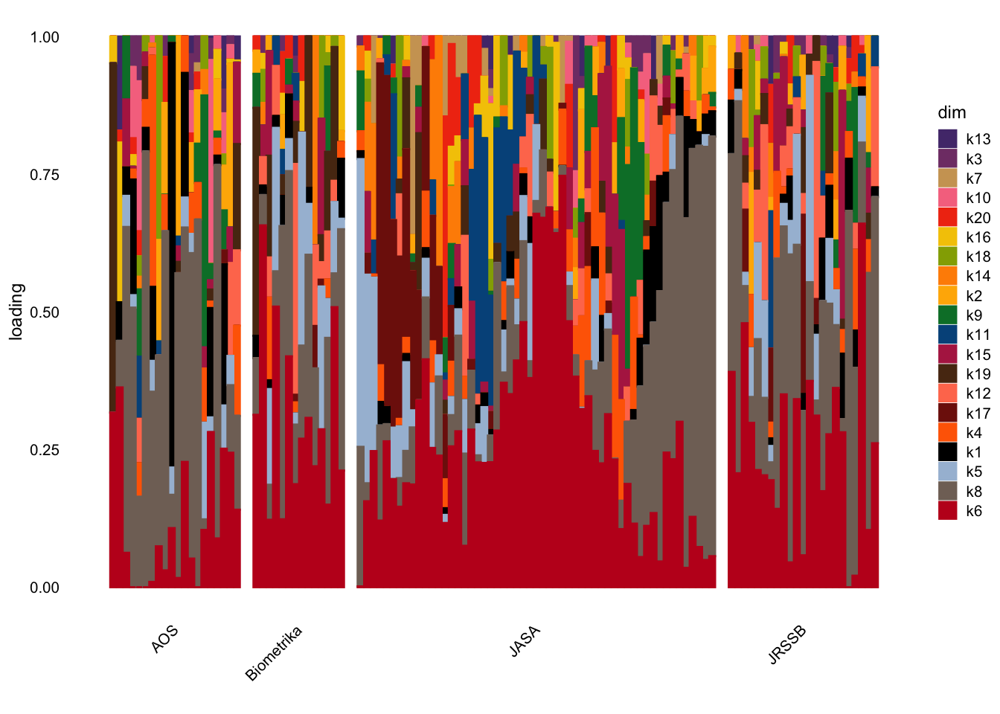
plot(fit_tm_k20$L[,6],Lnorm[,5])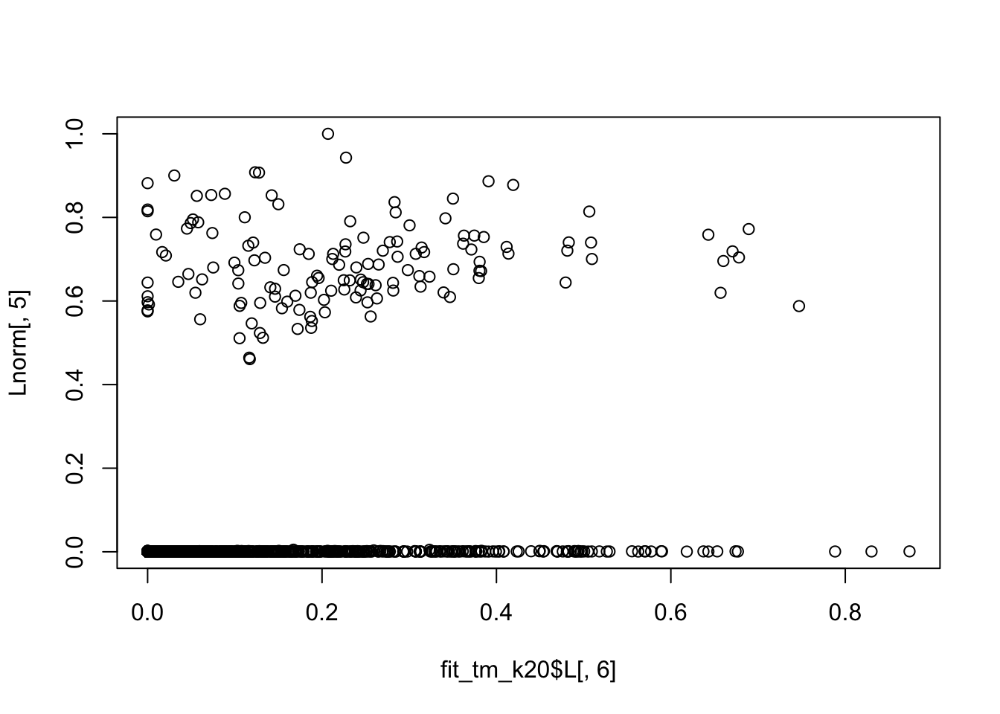
plot(fit_tm_k20$L[,8],Lnorm[,5])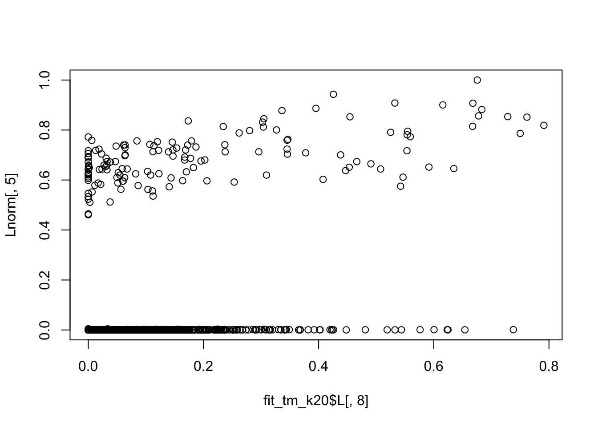
key_ebpmf[[5]] [1] "chain" "markov" "mont" "carlo" "mcmc" "posterior"
[7] "sampler" "algorithm" "bayesian" "prior" "hierarch" "infer"
[13] "comput" key_topic[[6]] postmean z lfsr
posterior 3.870781 35.847511 4.240708e-282
prior 3.863628 33.955524 2.141663e-253
mixtur 3.850942 43.441852 0.000000e+00
dirichlet 3.838878 25.337819 2.639644e-142
bayesian 3.763872 48.419461 0.000000e+00
gibb 3.747149 18.484262 6.329367e-77
urn 3.611877 11.893266 3.233213e-33
manifest 3.578526 9.661136 1.144680e-22
nonidentifi 3.548760 9.659247 1.186281e-22
markov 3.509569 31.204328 2.459653e-214Note that both topics 6 and 8 have strong frequency of “mcmc”, but only factor 5 has strong “mcmc”.
fit_tm_k20$F[which(colnames(mat)=="mcmc"),] k1 k2 k3 k4 k5 k6
1.104751e-12 9.461936e-13 1.174026e-12 7.864304e-13 1.100388e-12 2.464425e-03
k7 k8 k9 k10 k11 k12
1.074906e-12 2.123840e-03 1.056301e-12 1.058231e-12 1.055767e-12 1.036968e-12
k13 k14 k15 k16 k17 k18
1.235063e-12 1.038460e-12 8.997050e-13 1.009026e-12 1.055360e-12 1.112536e-12
k19 k20
1.150962e-12 1.059127e-12 fit_ebpmf_k20$fit_flash$F_pm[which(colnames(mat)=="mcmc"),] [1] 1.000000e+00 -1.704087e+00 4.421767e-05 6.234589e-06 7.525216e-05
[6] 5.860265e-05 2.637098e+00 3.461896e-05 2.884135e-05 1.689402e-04
[11] 1.055225e-04 3.325440e-05 7.425939e-05 1.422332e-05 7.337830e-05
[16] 4.082742e-05 5.742961e-05It is a bit surprising that EBPMF seems to model many documents with just the background factor (corresponding to khat==0 in the above).
Here I look at the topic model results for those documents.
cor(fit_tm_k20$L,khat==0) [,1]
k1 0.03899439
k2 -0.05404131
k3 -0.20846995
k4 0.17623076
k5 -0.01313686
k6 -0.08283410
k7 -0.21869299
k8 -0.10354945
k9 0.16153729
k10 0.05209170
k11 -0.15488254
k12 0.11297012
k13 0.09671161
k14 -0.08351684
k15 0.16132941
k16 0.13048547
k17 -0.07941629
k18 0.13413348
k19 0.12566991
k20 -0.04831664structure_plot_general(fit_tm_k20$L[khat==0,],fit_tm_k20$F,grouping = samples$journal[khat==0], gap=2)Running tsne on 368 x 20 matrix.Running tsne on 199 x 20 matrix.Running tsne on 480 x 20 matrix.Running tsne on 180 x 20 matrix.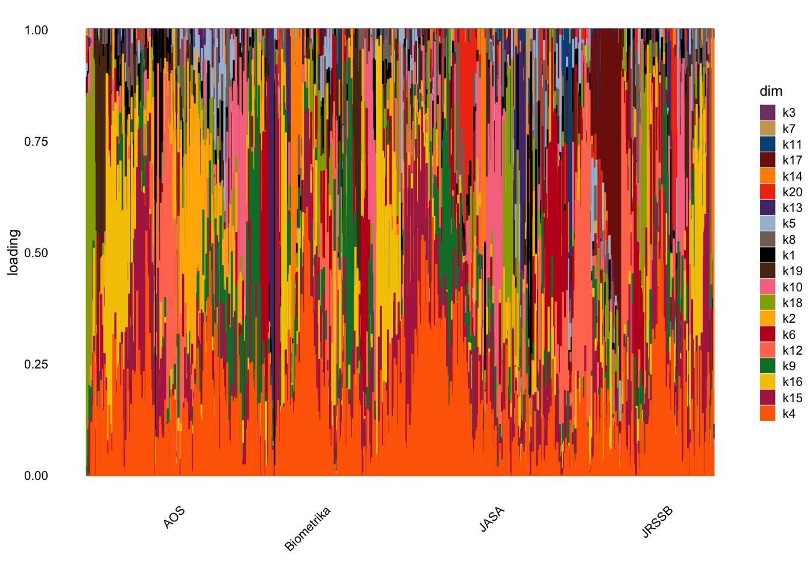
Doesn’t give much insight so I thought I would look at the documents most strongly assigned to a topic (“purity”).
purity = apply(fit_tm_k20$L,1, max)
names(purity)<-NULL
which(purity>0.8 & khat==0) 16 172 186 203 215 244 326 365 430 449 526 582 617 760 772 773
16 172 186 203 215 244 326 365 430 449 526 582 617 760 772 773
779 825 914 952 986 1047 1063 1108 1132 1232 1260 1266 1294 1345 1346 1406
779 825 914 952 986 1047 1063 1108 1132 1232 1260 1266 1294 1345 1346 1406
1426 1470 1500 1514 1530 1561 1605 1632 1677 1765 1785 1827 1833
1426 1470 1500 1514 1530 1561 1605 1632 1677 1765 1785 1827 1833 This one is assigned to a topic whose keywords include wishart and graph; seems reasonable.
fit_tm_k20$L[16,] k1 k2 k3 k4 k5 k6
5.729244e-11 6.689315e-11 5.391181e-11 8.048248e-11 5.751960e-11 1.672187e-01
k7 k8 k9 k10 k11 k12
5.888319e-11 6.397504e-11 5.992031e-11 5.981101e-11 5.995060e-11 6.103744e-11
k13 k14 k15 k16 k17 k18
5.124748e-11 6.094972e-11 7.034958e-11 6.272767e-11 5.997372e-11 5.689154e-11
k19 k20
8.327813e-01 5.976041e-11 key_topic[[19]] postmean z lfsr
matrix 4.626198 49.95988 0.000000e+00
matric 4.595742 36.78070 6.591460e-297
dimens 4.575820 41.48865 0.000000e+00
graph 4.575820 39.94272 0.000000e+00
wishart 4.565405 20.91562 6.829691e-98
slice 4.500033 20.16752 3.335208e-91
eigenvector 4.494311 16.16613 1.560414e-59
choleski 4.487300 15.81484 4.393420e-57
subspac 4.451931 17.52299 1.700829e-69
eigenvalu 4.433771 19.59843 2.823000e-86sla[16,]$abstract[1] "When considering a graphical Gaussian model N-G Markov with respect to a decomposable graph G, the parameter space of interest for the precision parameter is the cone PG of positive definite matrices with fixed zeros corresponding to the missing edges of G. The parameter space for the scale parameter of N-G is the cone Q(G), dual to P-G, of incomplete matrices with submatrices corresponding to the cliques of G being positive definite. In this paper we construct on the cones Q(G) and P-G two families of Wishart distributions, namely the Type I and Type II Wisharts. They can be viewed as generalizations of the hyper Wishart and the inverse of the hyper inverse Wishart as defined by Dawid and Lauritzen [Ann. Statist. 21 (1993) 1272-1317]. We show that the Type I and II Wisharts have properties similar to those of the hyper and hyper inverse Wishart. Indeed, the inverse of the Type II Wishart forms a conjugate family of priors for the covariance parameter of the graphical Gaussian model and is strong directed hyper Markov for every direction given to the graph by a perfect order of its cliques, while the Type I Wishart is weak hyper Markov. Moreover, the inverse Type II Wishart as a conjugate family presents the advantage of having a multidimensional shape parameter, thus offering flexibility for the choice of a prior. Both Type I and II Wishart distributions depend on multivariate shape parameters. A shape parameter is acceptable if and only if it satisfies a certain eigenvalue property. We show that the sets of acceptable shape parameters for a noncomplete G have dimension equal to at least one plus the number of cliques in G. These families, as conjugate families, are richer than the traditional Diaconis-Ylvisaker conjugate families which all have a shape parameter set of dimension one. A decomposable graph which does not contain a three-link chain as an induced subgraph is said to be homogeneous. In this case, our Wisharts are particular cases of the Wisharts on homogeneous cones as defined by Andersson and Wojnar [J. Theoret. Probab. 17 (2004) 781-818] and the dimension of the shape parameter set is even larger than in the nonhomogeneous case: it is indeed equal to the number of cliques plus the number of distinct minimal separators. Using the model where G is a three-link chain, we show by computing a 7-tuple integral that in general we cannot expect the shape parameter sets to have dimension larger than the number of cliques plus one."This one is on functional regression models, and assigned to a topic whose keywords indicage it is about nonlinear regression. Seems reasonable too.
fit_tm_k20$L[172,] k1 k2 k3 k4 k5 k6
7.184258e-11 8.388151e-11 6.760340e-11 7.378175e-02 2.617103e-02 8.953581e-11
k7 k8 k9 k10 k11 k12
7.383732e-11 8.022232e-11 7.513783e-11 7.500077e-11 3.123693e-02 7.653867e-11
k13 k14 k15 k16 k17 k18
6.426243e-11 7.642868e-11 8.688103e-01 7.865816e-11 7.520481e-11 7.133987e-11
k19 k20
6.895809e-11 7.493733e-11 key_topic[[15]] postmean z lfsr
spline 3.806563 43.92082 0.000000e+00
varyingcoeffici 3.678471 16.34715 1.091224e-60
anova 3.677339 17.46552 6.273406e-69
partial 3.642703 23.79195 9.834853e-126
linear 3.583612 47.59606 0.000000e+00
backfit 3.534270 12.71306 1.318796e-37
distort 3.464835 13.98475 5.301850e-45
quantil 3.381978 19.92455 7.174955e-89
predictor 3.350404 38.53414 0.000000e+00
nonlinear 3.314362 25.52881 2.832724e-144sla[172,]$abstract[1] "In commonly used functional regression models. the regression of it scalar or functional response oil the functional predictor is assumed to be linear. This means that the response is a linear function of the functional principal component scores of the predictor process. We relax the linearity assumption and propose to replace it by an additive structure. leading to it more widely applicable and much more flexible framework for functional regression models. The proposed functional additive regression models are Suitable for both scalar and functional response. The regularization needed for effective estimation of the regression parameter function is implemented through it projection on the eigenbasis of the covariance operator of the functional components in the model. The use of functional principal components in an additive rather than linear way leads to substantial broadening of the scope of functional regression models and emerges as a natural an additive rather than linear way leads to substantial broadening of the scope of functional regression models and emerges as a natural approach, because the uncorrelatedness of the functional principal components is shown to lead to a straightforward implementation of the functional additive model, based solely oil a sequence of one-dimensional smoothing, steps and without the need for backfitting. This facilitates the theoretical analysis. and we establish the asymptotic consistency of the estimates of the components of the functional additive model. We illustrate the empirical performance of the proposed modeling framework and estimation methods through simulation studies and in applications to gene expression time course data."This one is a bit less clear - topic 13 seems to be about classification and machine learning, but also, related, decision theory. One might prefer to separate out those as factors? This abstract is about decision theory. (I look further at topic 13 below and the “depth” keyword.)
fit_tm_k20$L[186,] k1 k2 k3 k4 k5 k6
8.380554e-11 2.895838e-02 7.886047e-11 1.177272e-10 8.413783e-11 1.044450e-10
k7 k8 k9 k10 k11 k12
8.613244e-11 9.358064e-11 8.764951e-11 8.748962e-11 8.769381e-11 8.928361e-11
k13 k14 k15 k16 k17 k18
9.249847e-01 8.915530e-11 1.029051e-10 9.175603e-11 8.772763e-11 4.605691e-02
k19 k20
8.044073e-11 8.741562e-11 key_topic[[13]] postmean z lfsr
depth 4.834574 34.85274 7.260793e-267
classif 4.814193 43.62757 0.000000e+00
machin 4.775588 35.00277 3.744443e-269
classifi 4.774179 29.82773 3.136345e-196
discrimin 4.755364 27.66746 3.144572e-169
wind 4.750988 23.00129 8.287969e-118
surrog 4.717734 27.63001 8.769303e-169
breakdown 4.695996 18.91250 1.633644e-80
loss 4.600547 38.80047 0.000000e+00
rule 4.596327 38.00187 0.000000e+00sla[186,]$abstract[1] "We describe and develop a close relationship between two problems that have customarily been regarded as distinct: that of maximizing entropy, and that of minimizing worst-case expected loss. Using a formulation grounded in the equilibrium theory of zero-sum games between Decision Maker and Nature, these two problems are shown to be dual to each other, the solution to each providing that to the other. Although Topsoe described this connection for the Shannon entropy over 20 years ago, it does not appear to be widely known even in that important special case.We here generalize this theory to apply to arbitrary decision problems and loss functions. We indicate how an appropriate generalized definition of entropy can be associated with such a problem, and we show that, subject to certain regularity conditions, the above-mentioned duality continues to apply in this extended context. This simultaneously provides a possible rationale for maximizing entropy and a tool for finding robust Bayes acts. We also describe the essential identity between the problem of maximizing entropy and that of minimizing a related discrepancy or divergence between distributions. This leads to an extension, to arbitrary discrepancies, of a well-known minimax theorem for the case of Kullback-Leibler divergence (the \"redundancy-capacity theorem\" of information theory).For the important case of families of distributions having certain mean values specified, we develop simple sufficient conditions and methods for identifying the desired solutions. We use this theory to introduce a new concept of \"generalized exponential family\" linked to the specific decision problem under consideration, and we demonstrate that this shares many of the properties of standard exponential families.Finally, we show that the existence of an equilibrium in our game can be rephrased in terms of a \"Pythagorean property\" of the related divergence, thus generalizing previously announced results for Kullback-Leibler and Bregman divergences."This one does not make much sense (what is this topic about? changepoints? outliers?)
fit_tm_k20$L[203,] k1 k2 k3 k4 k5 k6
4.225646e-02 9.032433e-11 7.279592e-11 1.086737e-10 3.146545e-02 9.641293e-11
k7 k8 k9 k10 k11 k12
1.549471e-02 8.638408e-11 8.090906e-11 8.076147e-11 8.094996e-11 8.241750e-11
k13 k14 k15 k16 k17 k18
6.919833e-11 8.229906e-11 9.499147e-11 8.469978e-11 8.098118e-11 8.490410e-01
k19 k20
7.425466e-11 6.174239e-02 key_topic[[18]] postmean z lfsr
vertic 4.445939 31.548819 3.249806e-219
chart 4.441416 15.927222 7.335939e-58
extrem 4.436493 29.113183 4.276907e-187
outlier 4.401433 26.122388 3.569365e-151
shift 4.397431 18.562289 1.154538e-77
tail 4.321035 26.501326 1.662946e-155
changepoint 4.007687 15.092754 3.633981e-52
jin 3.950064 9.572522 2.232380e-22
small 3.887408 34.904450 1.330137e-267
errorsinvari 3.835546 7.058506 3.940603e-13sla[203,]$abstract[1] "For better or for worse, rankings of institutions, such as universities, schools and hospitals, play an important role today in conveying information about relative performance. They inform policy decisions and budgets, and are often reported in the media. While overall rankings can vary markedly over relatively short time periods, it is not unusual to find that the ranks of a small number of \"highly performing\" institutions remain fixed, even when the data on which the rankings are based are extensively revised, and even when a large number of new institutions are added to the competition. In the present paper, we endeavor to model this phenomenon. In particular, we interpret as a random variable the value of the attribute on which the ranking should ideally be based. More precisely, if p items are to be ranked then the true, but unobserved, attributes are taken to be values of p independent and identically distributed variates. However, each attribute value is observed only with noise, and via a sample of size roughly equal to n, say. These noisy approximations to the true attributes are the quantities that are actually ranked. We show that, if the distribution of the true attributes is light-tailed (e.g., normal or exponential) then the number of institutions whose ranking is correct, even after recalculation using new data and even after many new institutions are added, is essentially fixed. Formally, p is taken to be of order n(C) for any fixed C > 0, and the number of institutions whose ranking is reliable depends very little on p. On the other hand, cases where the number of reliable rankings increases significantly when new institutions are added are those for which the distribution of the true attributes is relatively heavy-tailed, for example, with tails that decay like x(-alpha) for some alpha > 0. These properties and others are explored analytically, under general conditions. A numerical study links the results to outcomes for real-data problems."this topic seems to include key words relating to both climate and voting…
key_topic[[which.max(fit_tm_k20$L[215,])]] postmean z lfsr
climat 4.354802 21.535735 1.280903e-103
vote 4.319665 16.451939 1.470285e-61
network 4.313801 34.295398 1.627770e-258
ozon 4.298052 18.959300 6.677756e-81
mortal 4.286845 23.641057 2.618021e-124
air 4.219602 14.250513 8.316084e-47
pollut 4.185208 11.227139 5.782267e-30
greenhous 4.175717 9.560959 2.299299e-22
retail 4.175681 13.231969 1.091850e-40
atmospher 4.159352 9.862672 1.191431e-23sla[215,]$abstract[1] "Irish elections use a voting system called proportion representation by means of a single transferable vote(PR-STV). Under this system, voters express their vote by ranking some (or all) of the candidates in order of preference. Which candidates are elected is determined through a series of counts where candidates are eliminated and surplus votes are distributed.The electorate in any election forms a heterogeneous population: that is voters with different political and ideological persuasions would be expected to have different preferences for the candidates. The purpose of this article is to establish the presence of voting bloes in the Irish electorate, to characterize these blocs and to estimate their size.A mixture modeling approach is used to explore the heterogenecity of the Irish electorate and to establish the existence of clearly defined voting blocs. The voting blocs are characterized by thier voting preferences which are described using a ranking data model. In addition the care with which voters choose lower tier preferences is estimated in the model.The methodology is used to explore data from two Irish election. Data from eight opinion polls taken during the six weeks prior to the 1997 Irish presidential election are analyzed. These data reveal the evolution of the structure of the electorate during the election campaign. In addition data that record the votes from the Dublin West constituency of the 2002 Irish general election are analyzed to reveal distinct voting blocs within the electoate these blocs are characterized by party politics, candidate profile and political ideology."This is about testing, but not multiple testing and FDR
key_topic[[which.max(fit_tm_k20$L[244,])]] postmean z lfsr
sime 4.694280 14.53627 1.312878e-48
fals 4.677106 50.54097 0.000000e+00
procedur 4.673492 90.03622 0.000000e+00
fdr 4.668366 28.30744 4.993062e-177
stepdown 4.626701 16.35199 7.591187e-61
benjamini 4.621005 14.37595 1.330440e-47
fwer 4.614300 13.00140 2.196441e-39
pvalu 4.612015 24.19135 4.860176e-130
stepup 4.608013 14.57858 6.962319e-49
hochberg 4.606062 13.28768 4.976032e-41sla[244,]$abstract[1] "Testing for efficacy in multiple endpoints has emerged as an important statistical problem. The Food and Drug Administration (FDA) will issue a guidance on Multiple Endpoints in the near future.When there are primary and secondary endpoints, efficacy in the secondary endpoint is relevant only if efficacy in the primary endpoint has been shown. Thus, there are defined paths to decision making. Current approaches to this problem are based on closed testing, testing all possible intersection hypotheses, and collating the results. For decision making to follow predefined paths, strategic choices of test statistics and critical values must be made. As the number of doses and endpoints increase, such strategic choices become increasingly difficult.Partition testing is an alternative to closed testing. It provides insight into confidence sets for stepwise tests, and can be more powerful than closed testing. It also can simplify problem formulation when decision making follows specific paths. For the primary-secondary endpoints problem, we show that partition testing has advantages. When used to implement what we call the \"decision path principle,\" partition testing not only drastically reduces the number of hypotheses to be tested, but also guides decision making along predefined paths. With Our way of setting critical values, it has higher probabilities than gatekeeping methods of correctly inferring efficacious primary endpoints as being efficacious, while maintaining the same level of strong FWER control. These advantages are illustrated with a real data example and by simulation."This one is kind of about survival analysis, but doen’t have many of the usual key words.
key_topic[[which.max(fit_tm_k20$L[326,])]] postmean z lfsr
censor 4.323457 43.49064 0.000000e+00
surviv 4.308309 42.34057 0.000000e+00
hazard 4.299692 31.93877 1.375575e-224
recurr 4.278101 20.17893 2.710941e-91
failur 4.269402 37.69208 1.487307e-312
cure 4.258309 23.99209 6.072887e-128
incid 4.226998 18.12800 3.523611e-74
frailti 4.222826 15.10443 2.815998e-52
lengthbias 4.201312 16.02324 1.639636e-58
event 4.184571 36.32146 1.357472e-289sla[326,]$abstract[1] "Recurrent events arise in many longitudinal medical studies where time to a terminal event or failure is the primary endpoint. With incomplete follow-up data, the analysis of recurrent events is a challenge owing to their association with the failure. One specific quantity of interest rarely addressed in the statistical literature is the recurrence frequency at the failure time; an example is hospitalization frequency, which is often used as a rough measure of lifetime medical cost. In this article we show that a marginal model (e.g., the log-linear model) of the recurrence frequency, although desirable, is typically not identifiable. For this reason, we advocate modeling the recurrent events and the failure time jointly, and propose an approach to forming semiparametric joint models from prespecified marginal ones. We suggest two conceptually simple and nested regression models aiming at the recurrence frequency as a mark of the failure and at the process of recurrent events. We formulate monotone estimating functions and propose novel interval-estimation procedures to accommodate nonsmooth estimating functions. The resulting estimators are consistent and asymptotically normal. Simulation studies and the application to an AIDS clinical trial exhibit that these proposals are easy to implement and reliable for practical use. Finally, we generalize our proposals to marked recurrent events, and also devise a global inference procedure for recurrent events of multiple types."key_ebpmf[[10]] [1] "hazard" "cox" "surviv" "failur" "baselin"
[6] "cure" "frailti" "proport" "censor" "event"
[11] "cumul" "cancer" "semiparametr" "time" "timevari"
[16] "covari" "studi" "model" fit_ebpmf_k20$fit_flash$F_pm["recurr",] [1] 1.000000e+00 -2.321894e+00 3.274058e-04 1.992887e-05 3.316109e-04
[6] 1.746632e-04 1.070826e-04 8.844902e-05 1.645570e-04 5.252243e-04
[11] 3.482149e-04 1.037334e-03 1.228252e-04 4.911676e-05 2.092967e-04
[16] 8.859932e-05 1.804969e-04One word that occurs often in this document is “recurrance”. Note that “recurr” is a key word in the “survival analysis” topic, but not in any EBPMF factor. Is this document driving the inclusion of recurr in the topic? Let’s look at other documents with high rates of “recurr”?
sort(mat[,"recurr"],decreasing=TRUE)[1:10]1811 1763 3142 2340 2522 1874 2315 2382 2801 1885
9 9 5 4 4 3 3 3 2 2 docs_with_recurr=order(mat[,"recurr"],decreasing=TRUE)[1:10]
khat[docs_with_recurr] 256 326 1357 29 439 476 519 747 419 451
10 0 0 10 1 10 1 5 0 5 sla[256,]$abstract[1] "Recurrent event data are commonly encountered in longitudinal follow-up Studies related to biomedical science, econometrics. reliability, and demography. In many studies. recurrent events serve as important measurements for evaluating disease progression, health deterioration. or insurance risk. When analyzing recurrent event data, an independent censoring condition is typically required for the construction of statistical methods. In some situations. however, the terminating time for observing recurrent events could be correlated with the recurrent event process. thus violating the assumption of independent censoring. In this article, we consider joint modeling of it recurrent event process and a failure time in which a common subject-specific latent variable is used to model the association between the intensity of the recurrent event process and the hazard of the failure time. The proposed joint model is flexible in that no parametric assumptions on the distributions of censoring times and latent variables are made, and under the model, informative censoring is allowed for observing both the recurrent events and failure times. We propose a \"borrow-strength estimation procedure\" by first estimating, the value of the latent variable from recurrent event data, then using the estimated value in the failure time model. Some interesting implications and trajectories of the proposed model are presented. Properties of the regression parameter estimates and the estimated baseline cumulative hazard functions are also studied."sla[1357,]$abstract[1] "Recurrent events models have had considerable attention recently. The majority of approaches show the consistency of parameter estimates under the assumption that censoring is independent of the recurrent events process of interest conditional on the covariates that are included in the model. We provide an overview of available recurrent events analysis methods and present an inverse probability of censoring weighted estimator for the regression parameters in the Andersen-Gill model that is commonly used for recurrent event analysis. This estimator remains consistent under informative censoring if the censoring mechanism is estimated consistently, and it generally improves on the naive estimator for the Andersen-Gill model in the case of independent censoring. We illustrate the bias of ad hoc estimators in the presence of informative censoring with a simulation study and provide a data analysis of recurrent lung exacerbations in cystic fibrosis patients when some patients are lost to follow-up."sla[29,]$abstract[1] "Patients treated for prostate cancer are monitored by periodically measuring prostate-specific antigen (PSA) after treatment. Increases in PSA are suggestive of cancer recurrence and are used in making decisions about possible new treatments. The data from studies of such patients typically consist of longitudinal PSA measurements, censored event times, and baseline covariates. Methods for the combined analysis of both longitudinal and survival data have been developed in recent years, with the main emphasis on modeling and estimation. We analyze data from a prostate cancer study in which the patients are treated with radiation therapy, using a joint model extended by adding a mixture structure to the model. Here we focus on using this model to make individualized predictions of disease progression for censored and alive patients. In this model, each patient is assumed to be either cured by the treatment or susceptible to clinical recurrence. The cured fraction is modeled as a logistic function of baseline covariates, measured before the end of the radiation therapy period. The longitudinal PSA data is modeled as a nonlinear hierarchical mixed model, with different models for the cured and susceptible groups. To accommodate the heavy tail manifested by the data and possible outliers, a t distribution is used for the measurement error. The clinical recurrences are modeled using a time-dependent proportional hazards model for those in the susceptible group, where the time-dependent covariates include both the current value and the slope the of posttreatment PSA profile. The baseline hazard is assumed to have a generalized Weibull form. Estimates of the parameters in the model are obtained using a Markov chain Monte Carlo method. The model is used to give individual predictions of both future PSA values and the predicted probability of recurrence up to four years in the future. These predictions are compared with observed data from a validation data set consisting of further follow-up of the subjects in the study. There is good correspondence between the predictions and the validation data."Lnorm[29,] [1] 4.082795e-01 4.800487e-04 3.147396e-04 5.771849e-05 4.609630e-01
[6] 1.270717e-04 2.295108e-04 8.836210e-06 1.481233e-05 8.575129e-01
[11] 7.026415e-05 7.216071e-05 1.254486e-04 2.113474e-04 1.008458e-04sla[747,]$abstract[1] "There has been a recent surge of interest in modeling and methods for analyzing recurrent events data with risk of termination dependent on the history of the recurrent events. To aid future users in understanding the implications of modeling assumptions and modeling properties, we review the state-of-the-art statistical methods and present novel theoretical properties, identifiability results, and practical consequences of key modeling assumptions of several fully specified stochastic models. After introducing stochastic models with 2 noninformative termination process, we focus on a class of models that allows both negative and positive association between the risk of termination and the rate of recurrent events through a frailty variable. We also discuss the relationship, as well as the major differences between these models in terms of their motivations and physical interpretations. We discuss associated Bayesian methods based on Markov chain Monte Carlo tools, and novel model diagnostic tools to perform inference based on fully specified models. We demonstrate the usefulness of the current methodology through an analysis of a data set from a clinical trial. Finally, we explore possible future extensions and limitations of the methodology."Lnorm[747,] [1] 3.158475e-04 5.016516e-04 2.007280e-04 7.927449e-05 6.085683e-01
[6] 1.522726e-04 3.153471e-04 8.746722e-06 1.118681e-05 5.615612e-04
[11] 7.403549e-05 7.347403e-05 2.212394e-04 2.214505e-04 1.002349e-04Maybe what might be happening is this (speculation). There is a “subtopic” in the survival analysis topic that is related primarily to a single keyword, “recurr”. This gets picked up by the topic model, but not the EBPMF model whose overdispersion can be used to model the single word “recurr”. (Note that appearance of “Markov chain Monte Carlo” seems to be enough to make have a document load on that factor, because it is 4 words, not 1….; see document 29 above)
This one is a document related to a topic whose top keyword is “depth”. This word seems to also be defining a topic on its own (13) and “depth” is not inflated in any factor.
key_topic[[which.max(fit_tm_k20$L[365,])]] postmean z lfsr
depth 4.834574 34.85274 7.260793e-267
classif 4.814193 43.62757 0.000000e+00
machin 4.775588 35.00277 3.744443e-269
classifi 4.774179 29.82773 3.136345e-196
discrimin 4.755364 27.66746 3.144572e-169
wind 4.750988 23.00129 8.287969e-118
surrog 4.717734 27.63001 8.769303e-169
breakdown 4.695996 18.91250 1.633644e-80
loss 4.600547 38.80047 0.000000e+00
rule 4.596327 38.00187 0.000000e+00sla[365,]$abstract[1] "A class of projection-based depth functions is introduced and studied. These projection-based depth functions possess desirable properties of statistical depth functions and their sample versions possess strong and order rootn uniform consistency. Depth regions and contours induced from projection-based depth functions are investigated. Structural properties of depth regions and contours and general continuity and convergence results of sample depth regions are obtained.Affine equivariant multivariate medians induced from projection-based depth functions are probed. The limiting distributions as well as the strong and order rootn consistency of the sample projection medians are established. The finite sample performance of projection medians is compared with that of a leading depth-induced median, the Tukey halfspace median (induced from the Tukey halfspace depth function). It turns out that, with appropriate choices of univariate location and scale estimators, the projection medians have a very high finite sample breakdown point and relative efficiency, much higher than those of the halfspace median.Based on the results obtained, it is found that projection depth functions and projection medians behave very well overall compared with their competitors and consequently are good alternatives to statistical depth functions and affine equivariant multivariate location estimators, respectively."fit_ebpmf_k20$fit_flash$F_pm["depth",] [1] 1.000000e+00 -2.908434e+00 1.596837e-04 2.198000e-05 3.157411e-04
[6] 2.221806e-04 7.225116e-05 1.112504e-04 1.172047e-04 6.330233e-04
[11] 4.259251e-04 1.185888e-04 1.539309e-04 6.098224e-05 2.658331e-04
[16] 1.075826e-04 2.245223e-04sort(mat[,"depth"],decreasing=TRUE)[1:10] 900 2506 770 609 873 1796 2177 432 2531 214
11 10 8 7 6 5 4 3 3 3 docs_with_depth=order(mat[,"depth"],decreasing=TRUE)[1:10]
khat[docs_with_depth] 365 111 106 788 637 1562 714 507 1050 1823
0 0 0 0 0 0 0 0 0 0 sla[111,]$abstract[1] "The statistical analysis of functional data is a growing need in many research areas. In particular, a robust methodology is important to study curves, which are the output of many experiments in applied statistics. As a starting point for this robust analysis. we propose, analyze. and apply a new definition of depth for functional based on the graphic observations based presentation of the curves. Given a collection of functions. it establishes the \"centrality\" of an observation and provides a natural center-outward ordering of the sample curves. Robust statistics. such as the median function or a trimmed mean function, can be defined from this depth definition. Its finite-dimensional version provides a new depth for multivariate data that is computationally feasible and useful for studying high-dimensional observations. Thus. this new depth is also suitable for complex observations such as microarray data, images, and those arising in some recent marketing and financial studies. Natural properties of these new concepts are established and the uniform consistency of the sample depth is proved. Simulation results show that the corresponding depth based trimmed mean presents better performance than other possible location estimators proposed in the literature for some contaminated models. Data depth can be also used to screen for outliers. The ability of the new notions of depth to detect \"shape\" outliers is presented. Several real datasets are considered to illustrate this new concept of depth. including applications to microarray observations, weather data. and growth curves. Finally, through this depth, we generalize to functions the Wilcoxon rank sum test. It allows testing, whether two groups of curves come from the same population. This functional rank test when applied to children growth curves shows different growth patterns for boys and girls."sla[106,]$abstract[1] "General depth weighted scatter estimators are introduced and investigated. For general depth functions, we find out that these affine equivariant scatter estimators are Fisher consistent and unbiased for a wide range of multivariate distributions, and show that the sample scatter estimators are strong and root n-consistent and asymptotically normal, and the influence functions of the estimators exist and are bounded in general. We then concentrate on a specific case of the general depth weighted scatter estimators, the projection depth weighted scatter estimators, which include as a special case the well-known Stahel-Donoho scatter estimator whose limiting distribution has long been open until this paper. Large sample behavior, including consistency and asymptotic normality, and efficiency and finite sample behavior, including breakdown point and relative efficiency of the sample projection depth weighted scatter estimators, are thoroughly investigated. The influence function and the maximum bias of the projection depth weighted scatter estimators are derived and examined. Unlike typical high-breakdown competitors, the projection depth weighted scatter estimators can integrate high breakdown point and high efficiency while enjoying a bounded-influence function and a moderate maximum bias curve. Comparisons with leading estimators on asymptotic relative efficiency and gross error sensitivity reveal that the projection depth weighted scatter estimators behave very well overall and, consequently, represent very favorable choices of affine equivariant multivariate scatter estimators."sla[788,]$abstract[1] "As estimators of location parameters, univariate trimmed means are well known for their robustness and efficiency. They can serve as robust alternatives to the sample mean while possessing high efficiencies at normal as well as heavy-tailed models. This paper introduces multidimensional trimmed means based on projection depth induced regions. Robustness of these depth trimmed means is investigated in terms of the influence function and finite sample breakdown point. The influence function captures the local robustness whereas the breakdown point measures the global robustness of estimators. It is found that the projection depth trimmed means are highly robust locally as well as globally. Asymptotics of the depth trimmed means are investigated via those of the directional radius of the depth induced regions. The strong consistency, asymptotic representation and limiting distribution of the depth trimmed means are obtained. Relative to the mean and other leading competitors, the depth trimmed means are highly efficient at normal or symmetric models and overwhelmingly more efficient when these models are contaminated. Simulation studies confirm the validity of the asymptotic efficiency results at finite samples."So is topic 13 really about “depth”? No: most of the top documents in this topic do not contain the word depth.
sort(fit_tm_k20$L[,13],decreasing = TRUE)[1:10] 2214 832 734 2756 348 900 1839 835
0.9267355 0.9249847 0.9119600 0.9089194 0.8850351 0.8512414 0.8449128 0.8100689
2982 584
0.7949904 0.7760089 top_k13_docs = order(fit_tm_k20$L[,13],decreasing=TRUE)[1:10]
mat[top_k13_docs,"depth"]2214 832 734 2756 348 900 1839 835 2982 584
0 0 0 0 0 11 0 0 0 0 khat[top_k13_docs] 10 186 1833 914 986 365 1047 1632 1526 1258
9 0 0 0 0 0 0 0 0 0 sla[10,]$abstract[1] "Scoring rules assess the quality of probabilistic forecasts, by assigning a numerical score based on the predictive distribution and on the event or value that materializes. A scoring rule is proper. if the forecaster maximizes the expected score for an observation drawn from the distribution F if he or she issues the probabilistic forecast F, rather than G 4 F. It is strictly proper if the maximum is unique. In prediction problems, proper scoring rules encourage the forecaster to make careful assessments and to be honest. In estimation problems, strictly proper scoring rules provide attractive loss and utility functions that can be tailored to the problem at hand. This article reviews and develops the theory of proper scoring rules on general probability spaces, and proposes and discusses examples thereof. Proper scoring rules derive from convex functions and relate to information measures, entropy functions, and Bregman divergences. In the case of categorical variables, we prove a rigorous version of the Savage representation. Examples of scoring rules for probabilistic forecasts in the form of predictive densities include the logarithmic, spherical, pseudospherical, and quadratic scores. The continuous ranked probability score applies to probabilistic forecasts that take the form of predictive cumulative distribution functions. It generalizes the absolute error and forms a special case of a new and very general type of score, the energy score. Like many other scoring rules, the energy score admits a kernel representation in terms of negative definite functions, with links to inequalities of Hoeffding type, in both univariate and multivariate settings. Proper scoring rules for quantile and interval forecasts are also discussed. We relate proper scoring rules to Bayes factors and to cross-validation, and propose a novel form of cross-validation known as random-fold cross-validation. A case study on probabilistic weather forecasts in the North American Pacific Northwest illustrates the importance of propriety. We note optimum score approaches to point and quantile estimation, and propose the intuitively appealing interval score as a utility function in interval estimation that addresses width as well as coverage."key_ebpmf[[9]] [1] "forecast" "wind" "pacif" "weather" "northwest"
[6] "speed" "energi" "probabilist" "ensembl" "hour"
[11] "calibr" "meteorolog" "geostatist" "center" "north"
[16] "predict" "resourc" "sharp" "regim" "american"
[21] "atmospher" "shortterm" "qualiti" "accur" sla[186,]$abstract[1] "We describe and develop a close relationship between two problems that have customarily been regarded as distinct: that of maximizing entropy, and that of minimizing worst-case expected loss. Using a formulation grounded in the equilibrium theory of zero-sum games between Decision Maker and Nature, these two problems are shown to be dual to each other, the solution to each providing that to the other. Although Topsoe described this connection for the Shannon entropy over 20 years ago, it does not appear to be widely known even in that important special case.We here generalize this theory to apply to arbitrary decision problems and loss functions. We indicate how an appropriate generalized definition of entropy can be associated with such a problem, and we show that, subject to certain regularity conditions, the above-mentioned duality continues to apply in this extended context. This simultaneously provides a possible rationale for maximizing entropy and a tool for finding robust Bayes acts. We also describe the essential identity between the problem of maximizing entropy and that of minimizing a related discrepancy or divergence between distributions. This leads to an extension, to arbitrary discrepancies, of a well-known minimax theorem for the case of Kullback-Leibler divergence (the \"redundancy-capacity theorem\" of information theory).For the important case of families of distributions having certain mean values specified, we develop simple sufficient conditions and methods for identifying the desired solutions. We use this theory to introduce a new concept of \"generalized exponential family\" linked to the specific decision problem under consideration, and we demonstrate that this shares many of the properties of standard exponential families.Finally, we show that the existence of an equilibrium in our game can be rephrased in terms of a \"Pythagorean property\" of the related divergence, thus generalizing previously announced results for Kullback-Leibler and Bregman divergences."sla[1833,]$abstract[1] "The concept of breakdown point was introduced by Hampel [Ph.D. dissertation (1968), Univ. California, Berkeley; Ann. Math. Statist. 42 (1971) 1887-1896] and developed further by, among others, Huber [Robust Statistics (1981). Wiley, New York] and Donoho and Huber [In A Festschrift for Erich L. Lehmann (1983) 157-184. Wadsworth, Belmont, CA]. It has proved most successful in the context of location, scale and regression problems. Attempts to extend the concept to other situations have not met with general acceptance. In this paper we argue that this is connected to the fact that in the location, scale and regression problems the translation and affine groups give rise to a definition of equivariance for statistical functionals. Comparisons in terms of breakdown points seem only useful when restricted to equivariant functionals and even here the connection between breakdown and equivariance is a tenuous one."Most documents have no big loading, and others have just one. I thought I would look at ones with 2 or more to see what they look like
nbig = rowSums(Lnorm>0.4)
plot(nbig)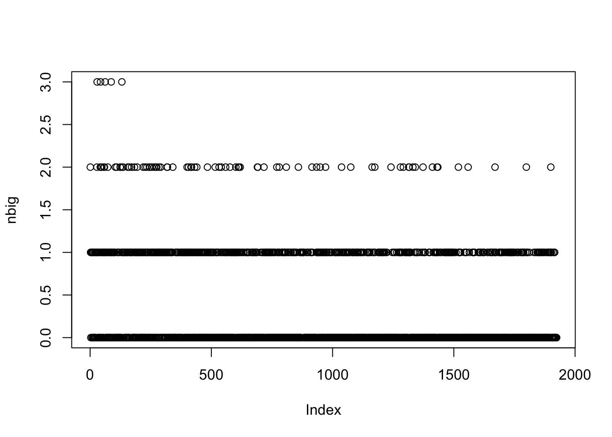
image(Lnorm[nbig>1,])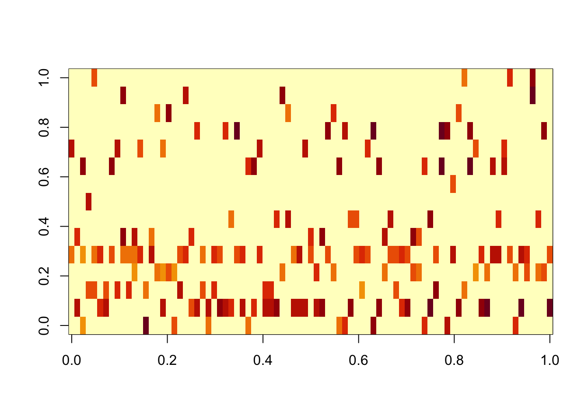
sla.multitopic = sla[nbig>1,]
sla.multitopic$docnum [1] 2521 2679 2340 1727 2197 2612 1842 2030 2546 2111 2475 1797 2631 2318 2794
[16] 66 2706 645 2431 2265 2213 2264 2442 1891 2797 1951 2780 2626 2645 1788
[31] 2627 2067 2665 2010 2604 2571 2696 2261 1717 2800 2528 2697 1762 2698 2600
[46] 1824 229 2158 2984 2484 3162 1730 1947 2191 2614 2764 2516 2041 2718 2648
[61] 529 2893 1868 2688 2152 365 1886 2155 2739 2344 2778 1067 2666 2680 638
[76] 1802 1142 1222 2596 2633 2681 1629 260 2170 2700sla.multitopic$abstract [1] "The distribution of genetic variation among populations is conveniently measured by Wright's F(ST),. which is a scaled variance taking on values in [0,I]. For certain types of genetic markers and for single-nucleotide polymorphisms (SNPs) in particular, it is reasonable to presume that allelic differences at most loci are selectively neutral. For such loci, the distribution of genetic variation among populations is determined by the size of local populations, the pattern and rate of migration among those populations. and the rate of mutation. Because the demographic parameters (population sizes and migration rates) are common across all autosomal loci, locus-specific estimates of F(ST) Will depart from a common distribution only for loci with unusually high or low rates of mutation or for loci that are closely associated with genomic regions having a relationship with fitness. Thus, loci that are statistical outliers showing significantly more among-population differentiation than others may mark genomic regions subject to diversifying selection among the sample populations. Similarly, statistical outliers showing significantly less differentiation among populations than others may mark genomic regions subject to stabilizing selection across the sample populations. We propose several Bayesian hierarchical models to estimate locus-specific effects on F(ST), and we apply these models to single nucleotide polymorphism data from the HapMap project. Because loci that are physically associated with one another are likely to show similar patterns of variation, we introduce conditional autoregressive models to incorporate the local correlation among loci for high-resolution genomic data. We estimate the posterior distributions of model parameters using Markov chain Monte Carlo (MCMC) simulations. Model comparison using several criteria, including deviance information criterion (DIC) and pseudomarginal likelihood (LPML), reveals that a model with locus- and population-specific effects is superior to other models for the data used in the analysis. To detect statistical outliers we propose an approach that measures divergence between the posterior distributions of locus-specific effects and the common F(ST) with the Kullback-Leibler divergence measure. We calibrate this measure by comparing values with those produced from the divergence between a biased and a fair coin. We conduct a simulation study to illustrate the performance of our approach for detecting loci subject to stabilizing/divergent selection, and we apply the proposed models to low- and high-resolution SNP data from the HapMap project. Model comparison using DIC and LPML reveals that conditional autoregressive (CAR) models are superior to alternative models for the high-resolution data. For both low- and high-resolution data, we identify statistical outliers that are associated with known genes."
[2] "Gene regulation is a complicated process. The interaction of many genes and their products forms an intricate biological network. Identification of this dynamic network will help us understand the biological processes in a systematic way. However, the construction of a dynamic network is very challenging for a high-dimensional system. In this article we propose to use a set of ordinary differential equations (ODE), coupled with dimensional reduction by clustering and mixed-effects modeling techniques, to model the dynamic gene regulatory network (GRN). The ODE models allow us to quantify both positive and negative gene regulation as well as feedback effects of genes in a functional module on the dynamic expression changes of genes in another functional module, which results in a directed graph network. A five-step procedure-clustering, smoothing, regulation identification, parameter estimates refining, and function enrichment analysis (CSIEF)-is developed to identify the ODE-based dynamic GRN. In the proposed CSIEF procedure, a series of cutting-edge statistical methods and techniques are employed, that include nonparametric mixed-effects models with a mixture distribution for clustering, nonparametric mixed-effects smoothing-based methods for ODE models, the smoothly clipped absolute deviation (SCAD)-based variable selection, and stochastic approximation EM (SAEM) approach for mixed-effects ODE model parameter estimation. The key step, the SCAD-based variable selection, is justified by investigating its asymptotic properties and validated by Monte Carlo simulations. We apply the proposed method to identify the dynamic GRN for yeast cell cycle progression data. We are able to annotate the identified modules through function enrichment analyses. Some interesting biological findings are discussed. The proposed procedure is a promising tool for constructing a general dynamic GRN and more complicated dynamic networks. This article has supplementary material online."
[3] "Patients treated for prostate cancer are monitored by periodically measuring prostate-specific antigen (PSA) after treatment. Increases in PSA are suggestive of cancer recurrence and are used in making decisions about possible new treatments. The data from studies of such patients typically consist of longitudinal PSA measurements, censored event times, and baseline covariates. Methods for the combined analysis of both longitudinal and survival data have been developed in recent years, with the main emphasis on modeling and estimation. We analyze data from a prostate cancer study in which the patients are treated with radiation therapy, using a joint model extended by adding a mixture structure to the model. Here we focus on using this model to make individualized predictions of disease progression for censored and alive patients. In this model, each patient is assumed to be either cured by the treatment or susceptible to clinical recurrence. The cured fraction is modeled as a logistic function of baseline covariates, measured before the end of the radiation therapy period. The longitudinal PSA data is modeled as a nonlinear hierarchical mixed model, with different models for the cured and susceptible groups. To accommodate the heavy tail manifested by the data and possible outliers, a t distribution is used for the measurement error. The clinical recurrences are modeled using a time-dependent proportional hazards model for those in the susceptible group, where the time-dependent covariates include both the current value and the slope the of posttreatment PSA profile. The baseline hazard is assumed to have a generalized Weibull form. Estimates of the parameters in the model are obtained using a Markov chain Monte Carlo method. The model is used to give individual predictions of both future PSA values and the predicted probability of recurrence up to four years in the future. These predictions are compared with observed data from a validation data set consisting of further follow-up of the subjects in the study. There is good correspondence between the predictions and the validation data."
[4] "New technologies benefit our lives in many ways, but they can also bring increased risks, disruptions to our society, and even the malevolence of war. Statisticians can play a critical role in influencing the paths along which technology will take our society. But taking on this role requires changing our discipline, our profession, and our ASA. Change, however, is not an option; if we do not change, then technology may force change on us in detrimental ways. Understanding how to change requires a broader view of statistics as a human activity with a human purpose that must evolve within a social, or human, system. Considered as a technology, statistics is a fundamental and invaluable part of the infrastructure of other sciences. Statistics advances discoveries in other sciences. Universities and foundations must encourage interdisciplinary research as a primary contribution to our field. Our curricula must reflect modern approaches that other sciences require, and students with quantitative talents must be attracted from other disciplines. Statistics should permeate the mathematics curricula at all elementary and secondary levels, and all children should understand variability and uncertainty, how to make sense from data, and the elements involved in making decisions. In industry, we must capitalize on the importance of quality improvement programs to further contributions of statistics. From government, we need timely and accurate statistics that are relevant to the world of the future as well as to today. In particular, we must commit ourselves now to changing our 40-year-old poverty measure and improve access to government statistics with different and stronger ways to protect confidentiality. We must work toward a comprehensive, integrated network of knowledge and information systems for research on individual, social, and organizational change and for decision making by individuals, organizations, and public policy makers at all levels-local, regional, and national. In all of these directions, the ASA must foster and encourage change and, in many cases, lead the way. With the commitment and perseverance of our next generation, statistics can become a leader in the advancement of science and technology to promote human welfare."
[5] "Cancer surveillance research requires estimates of the prevalence of cancer risk factors and screening for small areas such as counties. Two popular data sources are the Behavioral Risk Factor Surveillance System (BRFSS), a telephone survey conducted by state agencies, and the National Health Interview Survey (NHIS), an area probability sample survey conducted through face-to-face interviews. Both data sources have advantages and disadvantages. The BRFSS is a larger survey and almost every county is included in the survey, but it has lower response rates as is typical with telephone surveys and it does not include subjects who live in households with no telephones. On the other hand, the NHIS is a smaller survey, with the majority of counties not included; but it includes both telephone and nontelephone households, and has higher response rates. A preliminary analysis shows that the distributions of cancer screening and risk factors are different for telephone and nontelephone households. Thus, information from the two surveys may be combined to address both nonresponse and noncoverage errors. A hierarchical Bayesian approach that combines information from both surveys is used to construct county-level estimates. The proposed model incorporates potential noncoverage and nonresponse biases in the BRFSS as well as complex sample design features of both surveys. A Markov chain Monte Carlo method is used to simulate draws from the joint posterior distribution of unknown quantities in the model that uses design-based direct estimates and county-level covariates. Yearly prevalence estimates at the county level for 49 states. as well as for the entire state of Alaska and the District of Columbia, are developed for six outcomes using BRFSS and NHIS data from the years 1997-2000. The outcomes include smoking and use of common cancer screening procedures. The NHIS/BRFSS combined county-level estimates are substantially different from those based on the BRFSS alone."
[6] "Mixture models, or convex combinations of a countable number of probability distributions, offer an elegant framework for inference when the population of interest can be subdivided into latent clusters having random characteristics that are heterogeneous between, but homogeneous within, the clusters. Traditionally, the different kinds of mixture models have been motivated and analyzed from very different perspectives, and their common characteristics have not been fully appreciated. The inferential techniques developed for these models usually necessitate heavy computational burdens that make them difficult, if not impossible, to apply to the massive data sets increasingly encountered in real world studies. This paper introduces a flexible class of models called generalized polya urn (GPU) processes. Many common mixture models, including finite mixtures, hidden Markov models, and Dirichlet processes, are obtained as special cases of CPU processes. Other important special cases include finite-dimensional Dirichlet priors, infinite hidden Markov models, analysis of densities models, nested Chinese restaurant processes, hierarchical DP models, nonparametric density models, spatial Dirichlet processes, weighted mixtures of DP priors, and nested Dirichlet processes. An investigation of the theoretical properties of GPU processes offers new insight into asymptotics that form the basis of cost-effective Markov chain Monte Carlo (MCMC) strategies for large datasets. These MCMC techniques have the advantage of providing inferences from the posterior of interest, rather than an approximation, and are applicable to different mixture models. The versatility and impressive gains of the methodology are demonstrated by simulation studies and by a semiparametric Bayesian analysis of high-resolution comparative genomic hybridization data on lung cancer. The appendixes are available online as supplemental material."
[7] "This article describes a Bayesian hierarchical model for factor analysis of spatially correlated multivariate data. The first level specifies, for each area on a map, the distribution of a vector of manifest variables conditional on an underlying latent factor; at the second level, the area-specific latent factors have a joint distribution that incorporates spatial correlation. The framework allows for both marginal and conditional (e.g., conditional autoregressive) specifications of spatial correlation. The model is used to quantify material deprivation at the census tract level using data from the 1990 U.S. Census in Rhode Island. An existing and widely used measure of material deprivation is the Townsend index, an unweighted sum of four standardized census variables (i.e., Z scores) corresponding to area-level proportions of unemployment, car ownership. crowding. and home ownership. The Townsend and many related indices are computed as linear combinations of measured census variables, which motivates the factor-analytic structure adopted here. The model-based index is the posterior expectation of the latent factor. given the census variables and model parameters. Index construction based on a model allows several improvements over Townsend's and similarly constructed indices: (1) The index can be represented as a weighted sum of (standardized) census variables, with data-driven weights; (2) by using posterior summaries, the indices can be reported with corresponding measures of uncertainty and (3) incorporating information from neighboring areas improves precision of the posterior parameter distributions. Using data from Rhode Island census tracts, we apply our model to summarize variations in material deprivation across the state. Our analysis entertains various spatial covariance structures. We summarize the relative contributions of each census variable to the latent index, suggest ways to report material deprivation at the area level, and compare our model-based summaries with those found by applying the standard Townsend index."
[8] "Survival data often contain small-area geographical or spatial information, such as the residence of individuals. In many cases, the impact of such spatial effects on hazard rates is of considerable substantive interest. Therefore, extensions of known survival or hazard rate models to spatial models have been suggested. Mostly, a spatial component is added to the usual linear predictor of the Cox model. In this article flexible continuous-time geoaddifive models are proposed, extending the Cox model with respect to several aspects often needed in applications. The common linear predictor is generalized to an additive predictor, including nonparametric components for the log-baseline hazard, time-varying effects, and possibly nonlinear effects of continuous covariates or further time scales, and a spatial component for geographical effects. In addition, uncorrelated frailty effects or nonlinear two-way interactions can be incorporated. Inference is developed within a unified fully Bayesian framework. Penalized regression splines and Markov random fields are suggested as basic building blocks, and geostatistical (kriging) models are also considered. Posterior analysis uses computationally efficient Markov chain Monte Carlo sampling schemes. Smoothing parameters are an integral part of the model and are estimated automatically. Propriety of posteriors is shown under fairly general conditions, and practical performance is investigated through simulation studies. Our approach is applied to data from a case study in London and Essex that aims to estimate the effect of area of residence and further covariates on waiting times to coronary artery bypass grafting. Results provide clear evidence of nonlinear time-varying effects, and considerable spatial variability of waiting times to bypass grafting."
[9] "Developing, targeting, and evaluating genomic strategies for population-based disease prevention require population-based data. In response to this urgent need, genotyping has been conducted within the Third National Health and Nutrition Examination (NHANES III), a nationally representative household-interview health survey. However, before these genetic analyses can occur, family relationships within households must be accurately ascertained. Unfortunately, reported family relationships within NHANES III households based on questionnaire data are incomplete and inconclusive with regard to actual biological relatedness of family members. We inferred family relationships within households using DNA fingerprints (Identifiler (R)) that contain the DNA loci used by law enforcement agencies for forensic identification of individuals. The performance of these loci for relationship inference is not well understood, however. We evaluated two competing statistical methods for relationship inference on pairs of household members: an exact likelihood ratio relying on allele frequencies to an identical-by-state (IBS) likelihood ratio that only requires matching alleles. We modified these methods to account for genotyping errors and population substructure. The two methods usually agree on the rankings of the most likely relationships; however, the IBS method underestimates the likelihood ratio by not accounting for the informativeness of matching rare alleles. The likelihood ratio is sensitive to estimates of population substructure, and parent child relationships are sensitive to the specified genotyping error rate. These loci were unable to distinguish second-degree relationships and cousins from being unrelated. The genetic data also are useful for verifying reported relationships and identifying data quality issues. An important byproduct is the first explicitly nationally representative estimates of allele frequencies at these ubiquitous forensic loci."
[10] "We consider robust estimation of gene intensities from cDNA microarray data with replicates. Several statistical methods for estimating gene intensities from microarrays have been proposed, but little work has been done on robust estimation. This is particularly relevant for experiments with replicates, because even one outlying replicate can have a disastrous effect on the estimated intensity for the gene concerned. Because of the many steps involved in the experimental process from hybridization to image analysis, cDNA microarray data often contain outliers. For example, an outlying data value could occur because of scratches or dust on the surface, imperfections in the glass, or imperfections in the array production. We develop a Bayesian hierarchical model for robust estimation of cDNA microarray intensities. Outliers are modeled explicitly using a t-distribution, and our model also addresses such classical issues as design effects, normalization, transformation, and nonconstant variance. Parameter estimation is carried out using Markov chain Monte Carlo. By identifying potential outliers, the method provides automatic quality control of replicate, array, and gene measurements. The method is applied to three publicly available gene expression datasets and compared with three other methods: ANOVA-normalized log ratios, the median log ratio, and estimation after the removal of outliers based on Dixon's test. We find that the between-replicate variability of the intensity estimates is lower for our method than for any of the others. We also address the issue of whether the background should be subtracted when estimating intensities. It has been argued that this should not be done because it increases variability, whereas the arguments for doing so are that there is a physical basis for the image background, and that not doing so will bias downward the estimated log ratios of differentially expressed genes. We show that the arguments on both sides of this debate are correct for our data, but that by using our model one can have the best of both worlds: One can subtract the background without increasing variability by much."
[11] "We consider the problem of fitting a statistical model to 30 years of sea Surface temperature records collected over a large portion of the Northern Atlantic. The observations were collected sparsely in space and time with different levels of accuracy. The purpose of the model is to produce an atlas of oceanic properties, including climatological mean fields, estimates of historical trends, and a spatio-temporal reconstruction of the anomalies, i.e., the transient deviations from the climatological mean. These products are of interest to climate change and climate variability research, numerical modeling, and remote sensing analyses. Our model improves upon the current tools used by oceanographers in that it constructs instantaneous temperature fields before averaging them into the climatology, thus giving equal weight to all years in the time frame, regardless of the temporal distribution of data. It also accounts for nonisotropic and nonstationary space and time dependencies, owing to its use of discrete process convolutions. Particular attention is given to the handling of massive datasets such as the one under study. This is achieved by considering compact support kernels that allow an efficient parallelization of the Markov chain Monte Carlo method used in the estimation of the model parameters. Resulting monthly climatologics are compared with those of the World Ocean Atlas 2001, version 2. Different water masses appear better separated in our climatology, and a close link emerges between the kernels' shape and the dominating patterns of ocean currents. The subpolar and the temperate North Atlantic display opposite trends, with the former mainly cooling over the years and the latter mainly warming, especially in the Gulf Stream region. Long-term changes in annual cycles are also detected. As in any hierarchical Bayesian model, parameter estimates come with credibility intervals, which are useful to compare results with other approaches and detect areas where sampling campaigns are needed the most."
[12] "We consider the choice of an optimal sample size for multiple-comparison problems. The motivating application is the choice of the number of microarray experiments to be carried out when learning about differential gene expression. However, the approach is valid in any application that involves multiple comparisons in a large number of hypothesis tests. We discuss two decision problems in the context of this setup: the. sample size selection and the decision about the multiple comparisons. We adopt a decision-theoretic approach, using loss functions that combine the competing goals of discovering as many differentially expressed genes as possible, while keeping the number of false discoveries manageable. For consistency, we use the same loss function for both decisions. The decision rule that emerges for the multiple-comparison problem takes the exact form of the rules proposed in the recent literature to control the posterior expected false-discovery rate. For the sample size selection, we combine the expected utility argument with an additional sensitivity analysis, reporting the conditional expected utilities and conditioning on assumed levels of the true differential expression. We recognize the resulting diagnostic as a form of statistical power facilitating interpretation and communication. As a sampling model for observed gene expression densities across genes and arrays, we use a variation of a hierarchical gamma/gamma model. But the discussion of the decision problem is independent of the chosen probability model. The approach is valid for any model that includes positive prior probabilities for the null hypotheses in the multiple comparisons and that allows for efficient marginal and posterior simulation, possibly by dependent Markov chain Monte Carlo simulation."
[13] "This article expands upon recent interest in Bayesian hierarchical models in quantitative genetics by developing spatial process models for inference on additive and dominance genetic variance within the context of large spatially referenced trial datasets of multiple traits of interest. Direct application of such multivariate models to large spatial datasets is often computationally infeasible because of cubic order matrix algorithms involved in estimation. The situation is even worse in Markov chain Monte Carlo (MCMC) contexts where such computations are performed for several thousand iterations. Here, we discuss approaches that help obviate these hurdles without sacrificing the richness in modeling. For genetic effects, we demonstrate how an initial spectral decomposition of the relationship matrices negates the expensive matrix inversions required in previously proposed MCMC methods. For spatial effects we discuss a multivariate predictive process that reduces the computational burden by projecting the original process onto a subspace generated by realizations of the original process at a specified set of locations (or knots). We illustrate the proposed methods using a synthetic dataset with multivariate additive and dominant genetic effects and anisotropic spatial residuals, and a large dataset from a scots pine (Pinus sylvestris L.) progeny study conducted in northern Sweden. Our approaches enable us to provide a comprehensive analysis of this large trial which amply demonstrates that, in addition to violating basic assumptions of the linear model, ignoring spatial effects can result in downwardly biased measures of heritability."
[14] "This article discusses a nested latent class model for analyzing longitudinal randomized trials when subjects do not always adhere to the treatment to which they are randomized. In the Prevention of Suicide in Primary Care Elderly: Collaborative Trial, subjects were randomized to either the control treatment, where they received standard care, or to the intervention, where they received standard care in addition to meeting with depression health specialists. The health specialists educate patients, their families, and physicians about depression and monitor their treatment. Those randomized to the control treatment have no access to the health specialists; however, those randomized to the intervention could choose not to meet with the health specialists, hence receiving only the standard care. Subjects participated in the study for two years where depression severity and adherence to meeting with health specialists were measured at each follow-up. The outcome of interest is the effect of meeting with the health specialists on depression severity. Traditional intention-to-treat and as-treated analyses may produce biased causal effect estimates in the presence of subject noncompliance. Utilizing a nested latent class model that uses subject-specific and time-invariant \"superclasses\" allows us to summarize longitudinal trends of compliance patterns and to estimate the effect of the intervention using intention-to-treat contrasts within principal strata that correspond to longitudinal compliance behavior patterns. Analyses show that subjects with more severe depression are more likely to adhere to treatment randomization, and those that are compliant and meet with health specialists benefit from the meetings and show improvement in depression. Simulation results show that our estimation procedure produces reasonable parameter estimates under correct model assumptions."
[15] "Class prediction based on high-dimensional features has received a great deal of attention in many areas of application. For example, biologists are interested in using microarray gene expression profiles for diagnosis or prognosis of a certain disease (e.g., cancer). For computational and other reasons, it is necessary to select a subset of features before fitting a statistical model, by evaluating how strongly the features are related to the response. However, such a feature selection procedure will result in overconfident predictive probabilities for future cases, because the signal-to-noise ratio in the retained features is exacerbated by the feature selection. In this article we develop a hierarchical Bayesian classification method that can correct for this feature selection bias. Our method, which we term bias-corrected Bayesian classification with selected features (BCBCSF), uses the partial information from the feature selection procedure, in addition to the retained features, to form a correct (unbiased) posterior distribution of certain hyperparameters in the hierarchical Bayesian model that control the signal-to-noise ratio of the dataset. We take a Markov chain Monte Carlo (MCMC) approach to inferring the model parameters. We then use MCMC samples to make predictions for future cases. Because of the simplicity of the models, the inferred parameters from MCMC are easy to interpret, and the computation is very fast. Simulation studies and tests with two real microarray datasets related to complex human diseases show that our BCBCSF method provides better predictions than two widely used high-dimensional classification methods, prediction analysis for microarrays and diagonal linear discriminant analysis. The R package BCBCSF for the method described here is available from http://math.usask.ca/similar to longhai/software/BCBCSF and CRAN."
[16] "Within a Bayesian decision theoretic framework we investigate some asymptotic optimality properties of a large class of multiple testing rules. A parametric setup is considered, in which observations come from a normal scale mixture model and the total loss is assumed to be the sum of losses for individual tests. Our model can be used for testing point null hypotheses, as well as to distinguish large signals from a multitude of very small effects. A rule is defined to be asymptotically Bayes optimal under sparsity (ABOS), if within our chosen asymptotic framework the ratio of its Bayes risk and that of the Bayes oracle (a rule which minimizes the Bayes risk) converges to one. Our main interest is in the asymptotic scheme where the proportion p of \"true\" alternatives converges to zero.We fully characterize the class of fixed threshold multiple testing rules which are ABOS, and hence derive conditions for the asymptotic optimality of rules controlling the Bayesian False Discovery Rate (BFDR). We finally provide conditions under which the popular Benjamini-Hochberg (BH) and Bonferroni procedures are ABOS and show that for a wide class of sparsity levels, the threshold of the former can be approximated by a nonrandom threshold.It turns out that while the choice of asymptotically optimal FDR levels for BH depends on the relative cost of a type I error, it is almost independent of the level of sparsity. Specifically, we show that when the number of tests in increases to infinity, then BH with FDR level chosen in accordance with the assumed loss function is ABOS in the entire range of sparsity parameters p proportional to m(-beta), with beta is an element of (0, 1]."
[17] "Genome-wide association studies commonly involve simultaneous tests of millions of single nucleotide polymorphisms (SNP) for disease association. The SNPs in nearby genomic regions, however, are often highly correlated due to linkage disequilibrium (LD, a genetic term for correlation). Simple Bonferonni correction for multiple comparisons is therefore too conservative. Permutation tests, which are often employed in practice, are both computationally expensive for genome-wide studies and limited in their scopes. We present an accurate and computationally efficient method, based on Poisson de-clumping heuristics, for approximating genome-wide significance of SNP associations. Compared with permutation tests and other multiple comparison adjustment approaches, our method computes the most accurate and robust p-value adjustments for millions of correlated comparisons within seconds. We demonstrate analytically that the accuracy and the efficiency of our method are nearly independent of the sample size, the number of SNPs, and the scale of p-values to be adjusted. In addition, our method can be easily adopted to estimate false discovery rate. When applied to genome-wide SNP datasets, we observed highly variable p-value adjustment results evaluated from different genomic regions. The variation in adjustments along the genome, however, are well conserved between the European and the African populations. The p-value adjustments are significantly correlated with LD among SNPs, recombination rates, and SNP densities. Given the large variability of sequence features in the genome, we further discuss a novel approach of using SNP-specific (local) thresholds to detect genome-wide significant associations. This article has supplementary material online."
[18] "We attempt to recover an n-dimensional vector observed in white noise, where n is large and the vector is known to be sparse, but the degree of sparsity is unknown. We consider three different ways of defining sparsity of a vector: using the fraction of nonzero terms; imposing power-law decay bounds on the ordered entries; and controlling the l(p) norm for p small. We obtain a procedure which is asymptotically minimax for l(r) loss, simultaneously throughout a range of such sparsity classes.The optimal procedure is a data-adaptive thresholding scheme, driven by control of the false discovery rate (FDR). FDR control is a relatively recent innovation in simultaneous testing, ensuring that at most a certain expected fraction of the rejected null hypotheses will correspond to false rejections.In our treatment, the FDR control parameter q(n) also plays a determining role in asymptotic minimaxity. If q = limq(n) is an element of [0, 1/2] and also q(n) > gamma/log(n), we get sharp asymptotic minimaxity, simultaneously, over a wide range of sparse parameter spaces and loss functions. On the other hand, q = lim q(n) is an element of (1/2, 1] forces the risk to exceed the minimax risk by a factor growing with q.To our knowledge, this relation between ideas in simultaneous inference and asymptotic decision theory is new.Our work provides a new perspective on a class of model selection rules which has been introduced recently by several authors. These new rules impose complexity penalization of the form 2 center dot log(potential model size/actual model sizes). We exhibit a close connection with FDR-controlling procedures under stringent control of the false discovery rate."
[19] "In randomized experiments, it is sometimes important to demonstrate that two treatments do not differ greatly in their effects, or to demonstrate that the treatments have very different effects on one outcome similar effects on another outcome. These \"demonstrations\" may take the form of rejecting a null hypothesis of inequivalence in an equivalence test, or rejecting a null hypothesis of equal and inequivalent effects on two outcomes. The procedures often express a complex hypothesis in terms of component hypotheses, and combine the component significance levels to test the complex hypothesis. If used in a randomized trial, randomization provides valid significance levels for each component test, and hence also for the combined procedure. In an observational study-that is, in a study of treatments that were not randomly assigned-there is typically concern that significance levels for testing hypotheses about treatment effects may be distorted by failure to control for some unobserved pretreatment covariate. This concern is raised in the evaluation of virtually all observational studies. The possible impact of such an unobserved covariate is clarified and displayed by a sensitivity analysis that, for various possible magnitudes of potential bias. yields a corresponding interval of possible significance levels. Some observational studies are sensitive to very small unobserved biases, whereas others are insensitive to large biases. Here, existing sensitivity analyses for component hypotheses are used to generate sensitivity analyses for complex hypotheses tested by combining component significance levels. We apply the procedure to our study of the timing of discharges of premature babies from neonatal intensive care units, focusing on the possible impact of delayed discharge on use of unplanned medical care after discharge."
[20] "Health care quality surveys in the United States are administered to individual respondents (i.e.. hospital patients, health plan members) to evaluate the performance of health care organizations (i.e., hospitals, health plans). which thus Constitute estimation domains. For better understanding and more parsimonious reporting of dimensions of quality, we analyze relationships among., quality Measures at the domain level. Rather than specifying a full parametric model for the observed responses and the nonresponse patterns at the lower (patient) level. we first fit generalized variance-covariance functions that take into account nonresponse patterns in the survey responses, then specify a likelihood function for the domain mean responses using these generalized variance-covariance functions. This allows us to model directly the relationships among domain means for different items. Because the response scales are bounded. we assume that these means follow a truncated multivariate normal distribution. We calculate maximum likelihood (ML) estimates using the EM algorithm and sample under Bayesian models using Markov chain Monte Carlo. Finally. we perform factor analysis on the estimated or sampled between-domain covariance matrixes. Using posterior draws, we assess posterior distributions of the number of selected factors and the assignment of items to groups under conventional rules. We compare ML estimates of this factor structure with those from several Bayesian models with different prior distributions for the between-domain covariance. We present analyses of data from the Consumer Assessment of Healthcare Providers and Systems (CAHPS) survey of Medicare Advantage health plans."
[21] "In the production of clean steels, the occurrence of imperfections-so-called \"inclusions\"-is unavoidable. The strength of a clean steel block is largely dependent on the size of the largest imperfection that it contains, so inference on extreme inclusion size forms an important part of quality control. Sampling is generally done by measuring imperfections on planar slices, leading to an extreme value version of a standard stereological problem: how to make inference on large inclusions using only the sliced observations. Under the assumption that inclusions are spherical, this problem has been tackled previously using a combination of extreme value models, stereological calculations, a Bayesian hierarchical model, and standard Markov chain Monte Carlo (MCMC) techniques. Our objectives in this article are twofold: (1) to assess the robustness of such inferences with respect to the assumption of spherical inclusions, and (2) to develop an inference procedure that is valid for nonspherical inclusions. We investigate both of these aspects by extending the spherical family for inclusion shapes to a family of ellipsoids. We then address the issue of robustness by assessing the performance of the spherical model when fitted to measurements obtained from a simulation of ellipsoidal inclusions. The issue of inference is more difficult, because likelihood calculation is not feasible for the ellipsoidal model. To handle this aspect, we propose a modification to a recently developed likelihood-free MCMC algorithm. After verifying the viability and accuracy of the proposed algorithm through a simulation study, we analyze a real inclusion dataset, comparing the inference obtained under the ellipsoidal inclusion model with that previously obtained assuming spherical inclusions."
[22] "We describe Studies in molecular profiling and biological pathway analysis that use sparse latent factor and regression models for microarray gene expression data. We discuss breast cancer applications and key aspects of the modeling and computational methodology. Our case Studies aim to investigate and characterize heterogeneity of structure related to specific oncogenic pathways, its well as links between aggregate patterns in gene expression profiles and clinical biomarkers. Based on the metaphor of statistically derived \"factors\" as representing biological \"subpathway\" structure, we explore the decomposition of fitted sparse factor models into pathway subcomponents and investigate how these components overlay multiple aspects of known biological activity. Our methodology is based on sparsity modeling of multivariate regression, ANOVA, and latent factor models, as well as a class of models that combines all components. Hierarchical sparsity priors address questions of dimension reduction and multiple comparisons, as well its scalability of the methodology. The models include practically relevant non-Gaussian/nonparametric component,,. for latent structure. underlying often quite complex non-Gaussianity in multivariate expression patterns. Model search and fitting are addressed through stochastic simulation and evolutionary stochastic search methods that are exemplified in the oncogenic pathway Studies. Supplementary supporting material provides more details of the applications, its well as examples of the use of freely available software tools for implementing the methodology."
[23] "The aim of this paper is to develop an intrinsic regression model for the analysis of positive-definite matrices its responses in it Riemannian manifold and their association with a set of covariates, such as age and gender, in a Euclidean space, The primary motivation and application of the proposed methodology is in medical imaging. Because the set of positive-definite matrices do not form a vector space, directly applying classical multivariate regression may be inadequate ill establishing the relationship between positive-definite matrices and covariates of interest, such as age and gender, in real applications. Our intrinsic regression model. which is a semiparametric model, uses it link function to map from the Euclidean space of covariates to the Riemannian manifold of positive-definite matrices. We develop an estimation procedure to calculate parameter estimates and establish their limiting distributions. We develop score statistics to test linear hypotheses oil unknown parameters and develop it test procedure based on a resampling method to simultaneously assess the statistical significance of linear hypotheses across a large region of interest. Simulation Studies are used to demonstrate the methodology and examine the finite sample performance of the test procedure for controlling the family-wise error rate. We apply our methods to the detection of statistical significance of diagnostic effects on the integrity of white matter in a diffusion tensor study of human immunodeficiency virus. Supplemental materials for this article are available online."
[24] "Administrative systems-specifically, cancer registries-can be a valuable data source for studies of health care; however, provision of adjuvant chemotherapy or radiation therapy is often underreported in such databases. In a study of colorectal cancer in California, a relatively small physician follow-back survey allowed us to model the probability of underreporting. We then wished to model the relationship of true treatment status to covariates in the full database. We developed hierarchical models for imputation of corrected data using data recorded with error in the administrative system and the \"validation sample\" from the survey. The model includes a model for the probability of receipt of chemotherapy and a model for the probability of reporting given that chemotherapy was received. This factorization of the joint distribution of the true status and reported data is designed to permit generalization from the validation sample to a larger population in which the reporting process is similar but the prevalence of treatment may differ. Hospital random effects are included to represent variation in both treatment and reporting patterns across hospitals. We used Markov chain Monte Carlo simulation techniques to estimate model parameters and impute true treatment status. Valid inferences are obtained by combining the results from multiply imputed datasets. In an analysis of predictors of survival using imputed data that corrected for bias due to underreporting, uncertainty due to underreporting of chemotherapy substantially inflated the variance of estimates of the chemotherapy effect but had little effect on the estimation of coefficients of other characteristics."
[25] "Policies in health, education, and economics often unfold sequentially and adapt to changing conditions. Such time-varying treatments pose problems for standard program evaluation methods because intermediate outcomes are simultaneously pretreatment confounders and posttreatment outcomes. This article extends the Bayesian perspective on causal inference and optimal treatment to these types of dynamic treatment regimes. A unifying idea remains ignorable treatment assignment, which now sequentially includes selection on intermediate outcomes. I present methods to estimate the causal effect of arbitrary regimes, recover the optimal regime, and characterize the set of feasible outcomes under different regimes. I demonstrate these methods through an application to optimal student tracking in ninth and tenth grade mathematics. For the sample considered, student mobility under the status-quo regime is significantly below the optimal rate and existing policies reinforce between-student inequality. An easy to implement optimal dynamic tracking regime, which promotes more students to honors in tenth grade, increases average final achievement to 0.07 standard deviations above the status quo while lowering inequality; there is no binding equity-efficiency tradeoff. The proposed methods provide a flexible and principled approach to causal inference for time-varying treatments and optimal treatment choice under uncertainty. This article has online supplementary material."
[26] "Medical researchers interested in temporal, multivariate measurements of complex diseases have recently begun developing health state models, which divide the space of patient characteristics into medically distinct clusters. The current state of the art in health services research uses k-means clustering to form the health states and a first-order Markov chain to describe transitions between the states. This fitting procedure ignores information from temporally adjacent observations and prevents uncertainty from parameter estimation and cluster assignments from being incorporated into the analysis. A natural way to address these issues is to combine clustering and longitudinal analyses using a hidden Markov model. We fit hidden Markov models to longitudinal data using Bayesian methods that account for all of the uncertainty in the parameters, conditional only on the underlying correctness of the model. Potential lack of time homogeneity in the Markov chain is accounted for by embedding transition probabilities into a hierarchical model that provides Bayesian shrinkage across time. We illustrate this approach by developing a hidden Markov health state model for comparing the effectiveness of clozapine and haloperidol, two antipsychotic medications for schizophrenia. We find that clozapine outperforms haloperidol and identify the types of patients in whom clozapine's advantage is greatest and weakest. Finally, we discuss the advantages and disadvantages of hidden Markov models in comparison with the current methodology."
[27] "Estimation of copula models with discrete margins can be difficult beyond the bivariate case. We show how this can be achieved by augmenting the likelihood with continuous latent variables, and computing inference using the resulting augmented posterior. To evaluate this, we propose two efficient Markov chain Monte Carlo sampling schemes. One generates the latent variables as a block using a Metropolis Hastings step with a proposal that is close to its target distribution, the other generates them one at a time. Our method applies to all parametric copulas where the conditional copula functions can be evaluated, not just elliptical copulas as in much previous work. Moreover, the copula parameters can be estimated joint with any marginal parameters. and Bayesian selection ideas can be employed. We establish the effectiveness of the estimation method by modeling consumer behavior in online retail using Archimedean and Gaussian copulas. The example shows that elliptical copulas can be poor at modeling dependence in discrete data, just as they can be in the continuous case. To demonstrate the potential in higher dimensions, we estimate 16-dimensional D-vine copulas for a longitudinal model of usage of a bicycle path in the city of Melbourne, Australia. The estimates reveal an interesting serial dependence structure that can be represented in a parsimonious fashion using Bayesian selection of independence pair-copula components. Finally, we extend our results and method to the case where some margins are discrete and others continuous. Supplemental materials for the article are also available online."
[28] "We propose a new set of test statistics to examine the association between two ordinal categorical variables X and Y after adjusting for continuous and/or categorical covariates Z. Our approach first fits multinomial (e.g.. proportional odds) models of X and Y, separately, on Z. For each subject, we then compute the conditional distributions of X and Y given Z. If there is no relationship between X and Y after adjusting for Z. then these conditional distributions will be independent, and the observed value of (X, Y) for a subject is expected to follow the product distribution of these conditional distributions. We consider two simple ways of testing the null of conditional independence, both of which treat X and Y equally, in the sense that they do not require specifying an outcome and a predictor variable. The first approach adds these product distributions across all subjects to obtain the expected distribution of (X. Y) tinder the null and then contrasts it with the observed unconditional distribution of (X, Y). Our second approach computes \"residuals\" from the two multinomial models and then tests for correlation between these residuals; we define a new individual-level residual for models with ordinal outcomes. We present methods for computing p-values using either the empirical or asymptotic distributions of our test statistics. Through simulations, we demonstrate that our test statistics perform well in terms of power and Type I error rate when compared to proportional odds models which treat X as either a continuous or categorical predictor. We apply our methods to data from a study of visual impairment in children and to a study of cervical abnormalities in human immunodeficiency virus (HIV)-infected women. Supplemental materials for the article are available online."
[29] "We propose a new resampling procedure. the dependent wild bootstrap. for stationary time series As a natural extension of the traditional wild bootstrap to time series setting, the dependent wild bootstrap offers a viable alternative to the existing block-based bootstrap methods. whose properties have been extensively studied over the last two decades Unlike all of the block-based bootstrap methods. the dependent wild bootstrap can be easily extended to irregularly spaced time series with no implement:atonal difficulty Furthermore, it preserves the favorable bias and mean squared error property of the tapered block bootstrap. which is the state-of-the-art block-based method in terms of asymptotic accuracy of variance estimation and distribution approximation The consistency of the dependent wild bootstrap in distribution approximation is established tinder the framework of the smooth function model In addition, we obtain the bias and variance expansions of the dependent wild bootstrap variance estimator for irregularly spaced time series on a lattice For irregularly spaced nonlattice time series, we prove the consistency of the dependent wild bootstrap for variance estimation and distribution approximation in the mean case Simulation studies and an empirical data analysis illustrate the finite-sample performance of the dependent wild bootstrap Some technical details and tables are included in the online supplemental material"
[30] "We develop a Bayesian multiple changepoint model to infer spatial phylogenetic variation (SPV) along aligned molecular sequence data. SPV occurs in sequences from organisms that have undergone biological recombination or when evolutionary rates and selective pressures vary, along the sequences. This Bayesian approach permits estimation of uncertainty regarding recombination, the crossing-over locations, and all other model parameters. The model assumes that the sites along the data separate into an unknown number of contiguous segments, each with possibly different evolutionary relationships between organisms, evolutionary rates, and transition: transversion ratios. We develop a transition kernel, use reversible-jump Markov chain Monte Carlo to fit our model, and draw inference from both simulated and real data. Through simulation, we examine the minimal length recombinant segment that our model can detect for several levels of evolutionary divergence. We examine the entire genome of a reported human immunodeficiency virus (HIV)-1 isolate, related to a purported recombinant virus thought to be the causative agent of an epidemic outbreak of HIV-1 infection among intravenous drug users in Russia. We find that regions of the genome differ in their evolutionary history and selective pressures. There is strong evidence for multiple crossovers along the genome and frequent shifts in selective pressure changes throughout the vif through env genes."
[31] "With recent advances in genetic analysis, it has become feasible to classify a pathogen into genetically distinct variants even though they apparently cause an infected subject similar symptoms. The availability of such data opens up the interesting problem of studying the spatiotemporal variation in the diversity of variants of a pathogen. Data on pathogen variants often suffer the problems of (i) low cell counts, (ii) incomplete classification due to laboratory problems (e.g., contamination), and (iii) unseen variants. Shannon's entropy may be used as a measure of variant diversity. A Bayesian approach can be used to deal with the problems of low cell counts and unseen variants. Bayesian analysis of incomplete multinomial data may be carried out by Markov chain Monte Carlo techniques. However, for pathogen-variant data, there often is only one source of missingness-namely, some subjects are known to be infected by some unidentified pathogen variant. We point out that for incomplete data with disjoint sources of missingness, Bayesian analysis can be done more efficiently using an iid sampling scheme from the posterior distribution. We illustrate the method by analyzing a data set on the prevalence of bartonella infection among individual colonies of prairie dogs at the study site in Colorado between 2003 and 2006. We compare the result from the proposed Monte Carlo method with the results from other methods, including a model that entertains within-variant spatial correlation but no between-variant spatial correlation. This article has supplementary material online."
[32] "We develop statistical methods for designing and analyzing studies in which treatments are deliberately interrupted and reinitiated, but where interest lies in making inferences about continuous treatment use. We refer to such designs as alternating designs, because subjects alternate between periods in which they are taking the treatment of interest and periods when they are not. Our goals are to deter-mine how to estimate the distribution of time to an event if the treatment were given continuously, to compare the distributions of two such continuously given treatments, and to assess the effects of covariates on the distribution of a continuously given treatment. We examine a nonparametric estimator of the cumulative hazard function for continuous treatment using data from an alternating design and show it to be uniformly consistent and asymptotically normal under certain conditions relating to the effects of interrupting the treatment. We then introduce nonparametric tests for comparing the distributions corresponding to two such continuously given treatments and derive their asymptotic properties under general alternatives to the null and under various conditions related to the interruption of treatment. We compare the properties of the alternating treatment design and the classical parallel group design and present results from a simulation study that assesses the size and power of the test procedures introduced. Finally, we examine partial likelihood methods for assessing the effects of covariates and continuous treatment on time until an event under a proportional hazards model. We illustrate the proposed methods using the results from a recent study in which subjects alternate between taking an active drug and placebo on an annual basis."
[33] "Length-biased sampling has been well recognized in economics, industrial reliability, etiology applications, and epidemiological, genetic, and cancer screening studies. Length-biased right-censored data have a unique data structure different from traditional survival data. The nonparametric and semiparametric estimation and inference methods for traditional survival data are not directly applicable for length-biased right-censored data. We propose new expectation-maximization algorithms for estimations based on full likelihoods involving infinite-dimensional parameters under three settings for length-biased data: estimating nonparametric distribution function, estimating nonparametric hazard function under an increasing failure rate constraint, and jointly estimating baseline hazards function and the covariate coefficients under the Cox proportional hazards model. Extensive empirical simulation studies show that the maximum likelihood estimators perform well with moderate sample sizes and lead to more efficient estimators compared to the estimating equation approaches. The proposed estimates are also more robust to various right-censoring mechanisms. We prove the strong consistency properties of the estimators, and establish the asymptotic normality of the semiparametric maximum likelihood estimators under the Cox model using modern empirical processes theory. We apply the proposed methods to a prevalent cohort medical study. Supplemental materials are available online."
[34] "A widely used approach for dealing with locus heterogeneity in linkage analysis is based on mixture likelihood, in which a single mixing (heterogeneity) parameter represents the probability that each family is of linked type. However, in general, different types of families exhibit different heterogeneity levels. To incorporate this variability, we propose a new approach wherein each family has its own heterogeneity parameter representing the probability that it is of linked type. These parameters are nuisance parameters, whereas the main parameter of interest is the location of the disease gene, if there is any. We model the problem in the Bayesian framework and implement it using the Markov chain Monte Carlo (MCMC) methodology. In particular, we use the reversible-jump MCMC sampler to move between the two models: linkage and no linkage. We first estimate the posterior probability of linkage on a chromosome and the corresponding Bayes factor. If linkage is inferred, then the location of the disease gene along with its credible set is estimated. The asymptotic joint distribution of the estimators is derived. We show that this approach is more powerful than the currently used approach in detecting linkage, whereas the two approaches have comparable false-positive rates. The proposed method was applied to a lung cancer dataset of Genetic Epidemiology of Lung Cancer Consortium and an asthma dataset consisting of three samples from Genetic Analysis Workshop 12. Since both lung cancer and asthma are complex traits with heterogeneous genetic predisposition, they provide suitable applications for the proposed method."
[35] "Understanding the dynamics of climate change in its full richness requires the knowledge of long temperature time series. Although long-term, widely distributed temperature observations are not available, there are other forms of data, known as climate proxies, that can have a statistical relationship with temperatures and have been used to infer temperatures in the past before direct measurements. We propose a Bayesian hierarchical model to reconstruct past temperatures that integrates information from different sources, such as proxies with different temporal resolution and forcings acting as the external drivers of large scale temperature evolution. Additionally, this method allows us to quantify the uncertainty of the reconstruction in a rigorous manner. The reconstruction method is assessed, using a global climate model as the true climate system and with synthetic proxy data derived from the simulation. The target is to reconstruct Northern Hemisphere temperature from proxies that mimic the sampling and errors from tree ring measurements, pollen indices, and borehole temperatures. The forcing series used as covariates are solar irradiance, volcanic aerosols, and greenhouse gas concentrations. The Bayesian model was successful in integrating these different sources of information in creating a coherent reconstruction. Within the context of this numerical testbed, a statistical process model that includes the external forcings can improve the quality of a hemispheric reconstruction when long time scale proxy information is not available. This article has supplementary material online."
[36] "Many statistical agencies disseminate samples of census microdata, that is, data on individual records, to the public. Before releasing the microdata, agencies typically alter identifying or sensitive values to protect data subjects' confidentiality, for example by coarsening, perturbing, or swapping data. These standard disclosure limitation techniques distort relationships and distributional features in the original data, especially when applied with high intensity. Furthermore, it can be difficult for analysts of the masked public use data to adjust inferences for the effects of the disclosure limitation. Motivated by these shortcomings, we propose an approach to census microdata dissemination called sampling with synthesis. The basic idea is to replace the identifying or sensitive values in the census with multiple imputations, and release samples from these multiply-imputed populations. We demonstrate that sampling with synthesis can improve the quality of public use data relative to sampling followed by standard statistical disclosure limitation; simulation results showing this are available online as supplemental material. We derive methods for analyzing the multiple datasets generated by sampling with synthesis. We present algorithms for selecting which census values to synthesize based on considerations of disclosure risk and data utility. We illustrate sampling with synthesis on a population constructed with data from the U.S. Current Population Survey."
[37] "Independent component analysis (ICA) is an effective data-driven method for blind source separation. It has been successfully applied to separate source signals of interest from their mixtures. Most existing ICA procedures are carried out by relying solely on the estimation of the marginal density functions, either parametrically or nonparametrically. In many applications, correlation structures within each source also play an important role besides the marginal distributions. One important example is functional magnetic resonance imaging (fMRI) analysis where the brain-function-related signals are temporally correlated.In this article, we consider a novel approach to ICA that fully exploits the correlation structures within the source signals. Specifically, we propose to estimate the spectral density functions of the source signals instead of their marginal density functions. This is made possible by virtue of the intrinsic relationship between the (unobserved) sources and the (observed) mixed signals. Our methodology is described and implemented using spectral density functions from frequently used time series models such as autoregressive moving average (ARMA) processes. The time series parameters and the mixing matrix are estimated via maximizing the Whittle likelihood function. We illustrate the performance of the proposed method through extensive simulation studies and a real fMRI application. The numerical results indicate that our approach outperforms several popular methods including the most widely used fastICA algorithm. This article has supplementary material online."
[38] "The view that the returns to educational investments are highest for early. childhood interventions is widely held and steins primarily from several influential randomized trials-Abecedarian, Perry. and the Early Training Project-that point to super-normal returns to early interventions. This article presents it de novo analysis of these experiments, focusing on two core issues that have received limited attention in previous analyses: treatment effect heterogeneity by gender and overrejection of the null hypothesis due to multiple inference. To address the latter issue. a statistical framework thin combines summary index tests with familywise error rate and false discovery rate corrections is implemented The first technique reduces the number of tests conducted: the latter two techniques adjust the p values for multiple inference. The primary finding of the reanalysis is that girls garnered substantial short- and long-term benefits from the interventions, but there were no significant long-term benefits for boys. These conclusions. which have appeared ambiguous when using \"naive\" estimators that fail to adjust for multiple testing. contribute to a growing literature on the emerging female-male academic achievement gap. They also demonstrate that in complex studies where Multiple questions are asked of the same data set, it can be important to declare the family of tests under consideration and to either consolidate measures or report adjusted and unadjusted p values."
[39] "This article considers the fractionally autoregressive integrated moving average [ARFIMA(p, d, q)] models with GARCH errors. The process generated by this model is short memory, long memory, stationary, and nonstationary, respectively, when d is an element of (- 1/2, 0), d is an element of (0, 1/2), d is an element of (- 1/2, 1/2), and d is an element of (1/2, infinity). Using a unified approach, the local asymptotic normality of the model is established for d is an element of U-j=0(infinity)(J - 1/2, J + 1/2). The adaptivity and efficiency of the estimating parameters are discussed. In a class of loss functions, the asymptotic minimax bound of the estimators for the model is given when the density f of rescaled residuals is unknown. An adaptive estimator is constructed for the parameters in the ARFIMA part when f is symmetric, and a general form of the efficient estimator is also constructed for all the parameters in the ARFIMA and GARCH parts. When the density f is unknown, Wald tests are constructed for testing the unit root +1 against the class of fractional unit roots. It is shown that these tests asymptotically follow the chi-squared distribution and are locally most powerful. These results are new contributions to the literature, even for the ARFIMA model with iid errors, except for the adaptive estimator in this case with d e (0, 1/2). The performance of the asymptotic results in finite samples is examined through Monte Carlo experiments. An application to the U.S. Consumer Price Index inflation series is given, and a clear conclusion from this is that the series is neither an I(0) nor an I(I), but rather than an I(d) process with d approximate to 0.288."
[40] "Reducing bias from missing confounders is a challenging problem in the analysis of observational data. Information about missing variables is sometimes available from external validation data, such as surveys or secondary samples drawn from the same source population. In principle, the validation data permit us to recover information about the missing data, but the difficulty is in eliciting a valid model for the nuisance distribution of the missing confounders. Motivated by a British study of the effects of trihalomethane exposure on risk of full-term low birthweight, we describe a flexible Bayesian procedure for adjusting for a vector of missing confounders using external validation data. We summarize the missing confounders with a scalar summary score using the propensity score methodology of Rosenbaum and Rubin. The score has the property that it induces conditional independence between the exposure and the missing confounders, given the measured confounders. It balances the unmeasured confounders across exposure groups, within levels of measured covariates. To adjust for bias, we need only model and adjust for the summary score during Markov chain Monte Carlo computation. Simulation results illustrate that the proposed method reduces bias from several missing confounders over a range of different sample sizes for the validation data. Appendices A C are available as online supplementary material."
[41] "Discrete choice models are commonly used by applied statisticians in numerous fields. such as marketing. economics. finance. and operations research When agents in discrete choice models are assumed to have differing preferences. exact inference is often intractable Markov chain Monte Carlo techniques make approximate inference possible. but the computational cos is prohibitive on the large damsels now becoming untimely available Variational I methods provide a deterministic alternative for approximation of the posterior distribution We derive variational procedures for empirical Bayes and fully Bayesian inference in the mixed multinomial logit model of discrete choice The algorithms require only that we solve a sequence of unconstrained optimization problems. which are shown to be convex One version (0 the procedures relies on a new approximation to the variational objective function. based on the multivariate delta method Extensive simulations. along with an analysis of real-world data, demonstrate that variational methods achieve accuracy competitive with Markov chain Monte Carlo at a small fraction of the computational cost Thus. variational methods permit inference on damsels that otherwise cannot be analyzed without possibly adverse simplifications of the underlying discrete choice model Appendices C through F are available as online supplemental materials"
[42] "Genomewide association studies have become the primary tool for discovering the genetic basis of complex human diseases. Such studies are susceptible to the confounding effects of population stratification, in that the combination of allele-frequency heterogeneity with disease-risk heterogeneity among different ancestral subpopulations can induce spurious associations between genetic variants and disease. This article provides a statistically rigorous and computationally feasible solution to this challenging problem of unmeasured confounders. We show that the odds ratio of disease with a genetic variant is identifiable if and only if the genotype is independent of the unknown population substructure conditional on a set of observed ancestry-informative markers in the disease-free population. Under this condition, the odds ratio of interest can be estimated by fitting a semiparametric logistic regression model with an arbitrary function of a propensity score relating the genotype probability to ancestry-informative markers. Approximating the unknown function of the propensity score by B-splines, we derive a consistent and asymptotically normal estimator for the odds ratio of interest with a consistent variance estimator. Simulation studies demonstrate that the proposed inference procedures perform well in realistic settings. An application to the well-known Wellcome Trust Case-Control Study is presented. Supplemental materials are available online."
[43] "An evolutionary history of a set of organisms is a family tree, or topology, with branches of various lengths between vertices that describe how closely the organisms are related to each other. We consider the K evolutionary histories of K genes from a set of N organisms. Evolutionary similarity (ES) occurs when the branching patterns and relative branch lengths in the K evolutionary histories of the genes are the same or nearly the same across the set of organisms. Evolutionary similarity indicates similarity of evolutionary pressures acting on these genes. Current likelihood approaches identify ES conditional on a given topology. For a variety of reasons, different genes may support different topologies when fit independently. We use Bayesian models and reversible-jump Markov chain Monte Carlo to jointly infer topology and branch lengths for multiple genes simultaneously. We test for ES using Bayes factors, conditionally on a consistent topology over the multiple genes, where the topology is either known or unknown. We relax the single topology assumption by employing a dissimilarity measure between evolutionary histories and testing for ES using both prior and posterior predictive p values. We apply our methodology to three genes (DAX1, SOX9, and SRY) believed to be involved in sex determination in primates. We find support in the data for ES between DAX1 and SRY, but not SOX9. These results are consistent with the hypothesized biological roles of these genes."
[44] "Technologies of measuring millions of quantities at once have been rapidly developed and used in biological and biomedical research and other fields in the past decade. Yet a key issue remains unsettled, namely, how to control spurious findings for the ensuing massive number of hypothesis tests. An emerging consensus is to control false discovery rate (FDR), with FDR defined as the expected proportion of true nulls among discoveries, and a discovery the rejection of a null hypothesis. However, the very concept of counting true nulls, implicitly or explicitly, is problematic, for nulls are rarely true in reality. We propose an approach that is philosophically different from the FDR and other approaches. Taking advantage of the massive measurements, we can and should directly evaluate the reproducibility of a discovery by calculating the posterior probability of discovery (PPD) given observed data. A discovery with a great PPD is deemed to be highly reproducible, that is, not spurious. For a subset of hypotheses tested, mean PPD yields the expected rate of discovery (ERD), a measure useful for various applications such as subset enrichment analysis. We present here the rationale, theoretical basis, and an algorithm for computing PPDs and ERDs from data. Their validity, utility, and optimal performance are demonstrated using both simulated and real data. Supplementary material is available online."
[45] "Massively Parallel Signature Sequencing (MPSS) is a high-throughput, counting-based technology available for gene expression profiling. It produces output that is similar to Serial Analysis of Gene Expression and is ideal for building complex relational databases for gene expression. Our goal is to compare the in vivo global gene expression profiles of tissues infected with different strains of Salmonella obtained using the MPSS technology. In this article, we develop an exact ANOVA type model for this count data using a zero-inflated Poisson distribution, different from existing methods that assume continuous densities. We adopt two Bayesian hierarchical models one parametric and the other semiparametric with a Dirichlet process prior that has the ability to \"borrow strength\" across related signatures, where a signature is a specific arrangement of the nucleotides, usually 16-21 base pairs long. We utilize the discreteness of Dirichlet process prior to cluster signatures that exhibit similar differential expression profiles. Tests for differential expression are carried out using nonparametric approaches, while controlling the false discovery rate. We identify several differentially expressed genes that have important biological significance and conclude with a summary of the biological discoveries. This article has supplementary materials online."
[46] "Nonlinear mixed-effects (NLME) models are popular in many longitudinal studies, including human immunodeficiency virus (HIV) viral dynamics, pharmacokinetic analyses, and studies of growth and decay. In practice, covariates in these studies often contain missing data, and so standard complete-data methods are not directly applicable. In this article we propose Monte Carlo parameter-expanded (PX)-EM algorithms for exact and approximate likelihood inferences for NLME models with missing covariates when the missing-data mechanism is ignorable. We allow arbitrary missing-data patterns and allow the covariates to be categorical, continuous, and mixed. The PX-EM algorithm maintains the simplicity and stability of the standard EM algorithm and may converge much faster than EM. The approximate method is computationally more efficient and may be preferable to the exact method when the exact method exhibits convergence problems, such as slow convergence or nonconvergence. It becomes an exact method for linear mixed-effects models and certain NLME models with missing covariates. We also discuss several sampling methods and convergence of the Monte Carlo (PX) EM algorithms. We illustrate the methods using a real data example from the study of HIV viral dynamics and compare the methods via a simulation study."
[47] "An important estimation problem that is closely related to large-scale multiple testing is that of estimating the null density and the proportion of nonnull effects. A few estimators have been introduced in the literature; however, several important problems, including the evaluation of the minimax rate of convergence and the construction of rate-optimal estimators, remain open.In this paper, we consider optimal estimation of the null density and the proportion of nonnull effects. Both minimax lower and upper bounds are derived. The lower bound is established by a two-point testing argument, where at the core is the novel construction of two least favorable marginal densities f(1) and f(2). The density f(1) is heavy tailed both in the spatial and frequency domains and f(2) is a perturbation of f(1) such that the characteristic functions associated with f(1) and f(2) match each other in low frequencies. The minimax upper bound is obtained by constructing estimators which rely on the empirical characteristic function and Fourier analysis. The estimator is shown to be minimax rate optimal.Compared to existing methods in the literature, the proposed procedure not only provides more precise estimates of the null density and the proportion of the nonnull effects, but also yields more accurate results when used inside some multiple testing procedures which aim at controlling the False Discovery Rate (FDR). The procedure is easy to implement and numerical results are given."
[48] "In multicenter studies, one often needs to make inference about a population survival curve based on multiple, possibly heterogeneous survival data from individual centers. We investigate a flexible Bayesian method for estimating a population survival curve based on a semiparametric multiresolution hazard model that can incorporate covariates and account for center heterogeneity. The method yields a smooth estimate of the survival curve for \"multiple resolutions\" or time scales of interest. The Bayesian model used has the capability to accommodate general forms of censoring and a priori smoothness assumptions. We develop a model checking and diagnostic technique based on the posterior predictive distribution and use it to identify departures from the model assumptions. The hazard estimator is used to analyze data from 110 centers that participated in a multicenter randomized clinical trial to evaluate tamoxifen in the treatment of early stage breast cancer. Of particular interest are the estimates of center heterogeneity in the baseline hazard curves and in the treatment effects, after adjustment for a few key clinical covariates. Our analysis suggests that the treatment effect estimates are rather robust, even for a collection of small trial centers, despite variations in center characteristics."
[49] "We consider estimation, from a double-blind randomized trial, of treatment effect within levels of base-line covariates on an outcome that is measured after a post-treatment event E has occurred in the subpopulation P-E,P-E that would experience event E regardless of treatment. Specifically, we consider estimation of the parameters gamma indexing models for the outcome mean conditional on treatment and base-line covariates in the subpopulation P-E,P-E. Such parameters are not identified from randomized trial data but become identified if additionally it is assumed that the subpopulation P-(E) over bar ,P-E of subjects that would experience event E under the second treatment but not under the first is empty and a parametric model for the conditional probability that a subject experiences event E if assigned to the first treatment given that the subject would experience the event if assigned to the second treatment, his or her outcome under the second treatment and his or her pretreatment covariates. We develop a class of estimating equations whose solutions comprise, up to asymptotic equivalence, all consistent and asymptotically normal estimators of gamma under these two assumptions. In addition, we derive a locally semiparametric efficient estimator of gamma. We apply our methods to estimate the effect on mean viral load of vaccine versus placebo after infection with human immunodeficiency virus (the event E) in a placebo-controlled randomized acquired immune deficiency syndrome vaccine trial."
[50] "In this article we consider geometric ergodicity and likelihood-based inference for linear and nonlinear Poisson autoregression. In the linear case, the conditional mean is linked linearly to its past values, as well as to the observed values of the Poisson process. This also applies to the conditional variance, making possible interpretation as an integer-valued generalized autoregressive conditional heteroscedasticity process. In a nonlinear conditional Poisson model, the conditional mean is a nonlinear function of its past values and past observations. As a particular example, we consider an exponential autoregressive Poisson model for time series. Under geometric ergodicity, the maximum likelihood estimators are shown to be asymptotically Gaussian in the linear model. In addition, we provide a consistent estimator of their asymptotic covariance matrix. Our approach to verifying geometric ergodicity proceeds via Markov theory and irreducibility. Finding transparent conditions for proving ergodicity turns out to be a delicate problem in the original model formulation. This problem is circumvented by allowing a perturbation of the model. We show that as the perturbations can be chosen to be arbitrarily small, the differences between the perturbed and nonperturbed versions vanish as far as the asymptotic distribution of the parameter estimates is concerned. This article has supplementary material online."
[51] "A recent advance in the utility of extreme value techniques has been the characterization of the extremal behaviour of Markov chains. This has enabled the application of extreme value models to series whose temporal dependence is Markovian, subject to a limitation that prevents switching between extremely high and extremely low levels. For many applications this is sufficient, but for others, most notably in the field of finance, it is common to find series in which successive values switch between high and low levels. We term such series Markov chains with tail switching potential, and the scope of this paper is to generalize the previous theory to enable the characterization of the extremal properties of series displaying this type of behaviour. In addition to theoretical developments, a modelling procedure is proposed. A simulation study is made to assess the utility of the model in inferring the extremal dependence structure of autoregressive conditional heteroscedastic processes, which fall within the tail switching Markov family, and generalized autoregressive conditional heteroscedastic processes which do not, being non-Markov in general. Finally, the procedure is applied to model extremal aspects of a financial index extracted from the New York Stock Exchange compendium."
[52] "Cervical mucus hydration increases during the fertile interval before ovulation. Because sperm. can only penetrate mucus having a high water content, cervical secretions provide a reliable marker of the fertile days of the menstrual cycle. This article develops a Bayesian approach for modeling of daily observations of cervical mucus and applies the approach to assess heterogeneity among women and cycles from a given woman with respect to the increase in mucus hydration during the fertile interval. The proposed model relates the mucus observations to an underlying normal mucus hydration score, which varies relative to a peak hydration day. Uncertainty in the timing of the peak is accounted for, and a novel, weighted mixture model is used to characterize heterogeneity in distinct features of the underlying mean function. Prior information on the mucus hydration trajectory is incorporated, and a Markov chain Monte Carlo approach is developed. Based on data from a study of daily fecundability, there appears to be substantial heterogeneity among women in detected preovulatory increases in mucus hydration, but only minimal differences among cycles from a given woman."
[53] "Phenotypic characterization of rare disease genes poses a significant statistical challenge, but the need to do so is clear. Clinical management of patients carrying a disease gene depends crucially on an accurate characterization of the genetically predisposed disease, including its likelihood of occurrence among mutation carriers, natural history, and response to treatment. We propose a formal yet practical method for controlling for bias due to ignoring ascertainment, defined as the sampling mechanism, when quantifying the association between genotype and disease using data on high-risk families. The approach is more statistically efficient than conditioning on the variables used in sampling. In it, the likelihood is adjusted by a factor that is a function of sampling weights in strata defined by those variables. It requires that these variables and the sampling probabilities in the strata they define either are known or can be estimated. The latter requires a second.. population-based dataset. As an example, we derive ascertainment-corrected estimates of penetrance for the breast cancer susceptibility genes BRCA1 and BRCA2. The Bayesian analysis that we use incorporates a modified segregation model and prior data on penetrance derived from the literature. Markov chain Monte Carlo methods are used for inference."
[54] "In some randomized studies, researchers are interested in determining the effect of treatment assignment on outcomes that may exist only in a subset chosen after randomization. For example, in preventative human immunodeficiency virus (HIV) vaccine efficacy trials, it is of interest to determine whether randomization to vaccine affects postinfection outcomes that may be right-censored. Such outcomes in these trials include time from infection diagnosis to initiation of antiretroviral therapy and time from infection diagnosis to acquired immune deficiency syndrome. Here we present sensitivity analysis methods for making causal comparisons on these postinfection outcomes. We focus on estimating the survival causal effect, defined as the difference between probabilities of not yet experiencing the event in the vaccine and placebo arms, conditional on being infected regardless of treatment assignment. This group is referred to as the always-infected principal stratum. Our key assumption is monotonicity-that subjects randomized to the vaccine arm who become infected would have been infected had they been randomized to placebo. We propose nonparametric, semiparametric, and parametric methods for estimating the survival causal effect. We apply these methods to the first Phase III preventative HIV vaccine trial, VaxGen's trial of AIDSVAX B/B."
[55] "As an alternative to the local partial likelihood method of Tibshirani and Hastie and Fan, Gijbels, and King. a global partial likelihood method is proposed to estimate the covariate effect in a nonparametric proportional hazards model, lambda(t vertical bar x) = exp{psi(x)}lambda(0)(t). The estimator, (psi) over cap (x), reduces to the Cox partial likelihood estimator if the covariate is discrete. The estimator is shown to be consistent and semiparametrically efficient for linear functionals of psi(x). Moreover, Breslow-type estimation of the cumulative baseline hazard function, using the proposed estimator (psi) over cap (x), is proved to be efficient. The asymptotic bias and variance are derived under regularity conditions. Computation of the estimator involves an iterative but simple algorithm. Extensive simulation studies provide evidence supporting the theory. The method is illustrated with the Stanford heart transplant data set. The proposed global approach is also extended to a partially linear proportional hazards model and found to provide efficient estimation of the slope parameter. This article has the supplementary materials online."
[56] "In One-course experiments, it is often desirable to identify genes that exhibit a specific pattern of differential expression over time and thus gain insights into the mechanisms of the underlying biological processes. Two challenging issues in the pattern identification problem are: (i) how to combine the simultaneous inferences across multiple time points and (ii) how to control the multiplicity while accounting for the strong dependence. We formulate a compound decision-theoretic framework for set-wise multiple testing and propose a data-driven procedure that aims to minimize the missed set rate subject to a constraint on the false set rate. The hidden Markov model proposed in Yuan and Kendziorski (2006) is generalized to capture the temporal correlation in the gene expression data. Both theoretical and numerical results are presented to show that our data-driven procedure controls the multiplicity, provides an optimal way of combining simultaneous inferences across multiple time points, and greatly improves the conventional combined p-value methods. In particular, we demonstrate our method in an application to a study of systemic inflammation in humans for detecting early and late response genes."
[57] "In many practical problems, time series are realizations of nonstationary random processes. These processes can often be modeled as processes with slowly changing dynamics or as piecewise stationary processes. In these cases, various approaches to estimating the time-varying spectral density have been proposed. Our approach in this article is to estimate the log of the Dahlhaus local spectrum using a Bayesian mixture of splines. The basic idea of Our approach is to first partition the data into small sections. We then assume that the log spectral density of the evolutionary process in any given partition is a mixture of individual log spectra. We use a mixture of smoothing splines model with time varying mixing weights to estimate the evolutionary log spectrum. The mixture model is fit using Markov chain Monte Carlo techniques that yield estimates of the log spectra of the individual subsections. In addition to an estimate of the local log spectral density, the method yields pointwise credible intervals. We use a reversible jump step to automatically determine the number of different spectral components."
[58] "Profiling is currently an important, and hotly debated, topic in health care and other industries looking for ways to control costs, increase profitability, and increase service quality. Managed care in particular has seen a proliferation in the use of statistical profiling methodology, particularly with regard to monitoring expenditure data. This article focuses on the specific problem of developing statistical methods appropriate for profiling physician contributions to patient pharmacy expenditures incurred in a managed care setting. The two-part hierarchical model with a correlated random-effects structure considered here accounts for both the skewed, zero-inflated nature of pharmacy expenditure data and the fact that patient pharmacy expenditures are correlated within physicians. The random-effects structure has an attractive interpretation in terms of a conceptual model for physician prescribing patterns. Using this model, we propose to rank physicians based on an appropriately constructed provider-level performance measure. This information is subsequently used to develop a novel financial incentive scheme. Inference is conducted in a Bayesian framework using Markov chain Monte Carlo."
[59] "The term structure of interest rates is used to price defaultable bonds and credit derivatives, as well as to infer the quality of bonds for risk management purposes. We introduce a model that jointly estimates term structures by means of a Bayesian hierarchical model with a prior probability model based on Dirichlet process mixtures. The modeling methodology borrows strength across term structures for purposes of estimation. The main advantage of our framework is its ability to produce reliable estimators at the company level even when there are only a few bonds per company. After describing the proposed model, we discuss an empirical application in which the term structure of 197 individual companies is estimated. The sample of 197 consists of 143 companies with only one or two bonds. In-sample and out-of-sample tests are used to quantify the improvement in accuracy that results from approximating the term structure of corporate bonds with estimators by company rather than by credit rating, the latter being a popular choice in the financial literature. A complete description of a Markov chain Monte Carlo (MCMC) scheme for the proposed model is available as Supplementary Material."
[60] "State-space models provide an important body of techniques for analyzing time series. but their use requires estimating Unobserved states The optimal estimate of the state Is its conditional expectation given the observation histories. and computing this expectation is hard when there are nonlinearities Existing filtering methods, including sequential Monte Carlo. tend to be either inaccurate or slow In this paper, we study a nonlinear filter for nonlinear/non-Gaussian state-space models. which uses Laplace's method. an asymptotic series expansion, to approximate the state's conditional mean and variance, together with a Gaussian conditional distribution This Laplace Gaussian fillet (LGE) gives fast. recursive, deterministic state estimates, with an error which is set by the stochastic characteristics of the model and is, we show, stable over time We illustrate the estimation ability of the LGF by applying it to the problem of neural decoding and compare it to sequential Monte Carlo both in simulations and with real data We find that the LGE can deliver superior results in a small fraction of the computing time This article has supplementary material online"
[61] "The \"large p, small n\" paradigm arises in microarray studies, image analysis, high throughput molecular screening, astronomy, and in many other high dimensional applications. False discovery rate (FDR) methods are useful for resolving the accompanying multiple testing problems. In cDNA microarray studies, for example, p-values may be computed for each of p genes using data from n arrays, where typically p is in the thousands and n is less than 30. For FDR methods to be valid in identifying differentially expressed genes, the p-values for the nondifferentially expressed genes must simultaneously have uniform distributions marginally. While feasible for permutation p-values, this uniformity is problematic for asymptotic based p-values since the number of p-values involved goes to infinity and intuition suggests that at least some of the p-values should behave erratically. We examine this neglected issue when n is moderately large but p is almost exponentially large relative to n. We show the somewhat surprising result that, under very general dependence structures and for both mean and median tests., the p-values are simultaneously valid. A small simulation study and data analysis are used for illustration."
[62] "We discuss a Bayesian discovery procedure for multiple-comparison problems. We show that, under a coherent decision theoretic framework, a loss function combining true positive and false positive counts leads to a decision rule that is based on a threshold of the posterior probability of the alternative. Under a semiparametric model for the data, we show that the Bayes rule can be approximated by the optimal discovery procedure, which was recently introduced by Storey. Improving the approximation leads us to a Bayesian discovery procedure, which exploits the multiple shrinkage in clusters that are implied by the assumed non-parametric model. We compare the Bayesian discovery procedure and the optimal discovery procedure estimates in a simple simulation study and in an assessment of differential gene expression based on microarray data from tumour samples. We extend the setting of the optimal discovery procedure by discussing modifications of the loss function that lead to different single-thresholding statistics. Finally, we provide an application of the previous arguments to dependent (spatial) data."
[63] "Both pravastatin and aspirin are approved by the U.S. Food and Drug Administration (FDA) for secondary prevention of cardiovascular events. This article describes statistical analyses used for a successful submission to the FDA that contends that copackaging pravastatin and aspirin provides a health benefit. From the efficacy perspective this is taken to mean that the combination is more effective than either agent considered alone. We present three Bayesian hierarchical survival models and apply them to the results of five randomized clinical trials. These trials evaluated the benefit of pravastatin in the secondary-prevention setting. Aspirin use was recorded for patients in these trials. but assignment to aspirin was not randomized. We compare the effects of pravastatin and aspirin considered in combination and when given alone. We focus on time to myocardial infarction, although it was just one of several endpoints considered in the presentation to the FDA. Two of the models assume proportional hazards and the third does not. In all three models we adjust for known covariates. Our principal focus is the probability that the combination of pravastatin and aspirin is at least as effective as the agents considered separately. We also find the probability that the combination is synergistic in the sense that the effect of the combination is better than the sum of the effects of the two agents taken alone."
[64] "In this article we investigate the problem of measuring deviations from stationarity in locally stationary time series. Our approach is based on a direct estimate of the L-2-distance between the spectral density of the locally stationary process and its best approximation by a spectral density of a stationary process. An explicit expression of the minimal distance is derived, which depends only on integrals of the spectral density of the locally stationary process and its square. These integrals can be estimated directly without estimating the spectral density, and as a consequence, the estimation of the measure of stationarity does not require the specification of a smoothing bandwidth. We show weak convergence of an appropriately standardized version of the statistic to a standard normal distribution. The results are used to construct confidence intervals for the measure of stationarity and to develop a new test for the hypothesis of stationarity. Finally, we investigate the finite sample properties of the resulting confidence intervals and tests by means of a simulation study and illustrate the methodology in two data examples. Parts of the proofs are available online as supplemental material to this article."
[65] "This article proposes a space-time model for daily 8-hour maximum ozone levels to provide input for regulatory activities: detection, evaluation, and analysis of spatial patterns and temporal trend in ozone summaries. The model is applied to the analysis of data from the state of Ohio that contains a mix of urban, suburban, and rural ozone monitoring sites. The proposed space-time model is autoregressive and incorporates the most important meteorological variables observed at a collection of ozone monitoring sites as well as at several weather stations where ozone levels have not been observed. This misalignment is handled through spatial modeling. In so doing we adopt a computationally convenient approach based on the successive daily increments in meteorological variables. The resulting hierarchical model is specified within a Bayesian framework and is fitted using Markov chain Monte Carlo techniques. Full inference with regard to model unknowns as well as for predictions in time and space, evaluation of annual summaries, and assessment of trends are presented."
[66] "For time-to-event data with finitely many competing risks, the proportional hazards model has been a popular tool for relating the cause-specific outcomes to covariates [Prentice et al. Biometrics 34 (1978) 541-554]. This article studies an extension of this approach to allow a continuum of competing risks, in which the cause of failure is replaced by a continuous mark only observed at the failure time. We develop inference for the proportional hazards model in which the regression parameters depend nonparametrically on the mark and the baseline hazard depends nonparametrically on both time and mark. This work is motivated by the need to assess HIV vaccine efficacy, while taking into account the genetic divergence of infecting HIV viruses in trial participants from the HIV strain that is contained in the vaccine, and adjusting for covariate effects. Mark-specific vaccine efficacy is expressed in terms of one of the regression functions in the mark-specific proportional hazards model. The new approach is evaluated in simulations and applied to the first HIV vaccine efficacy trial."
[67] "We consider studies for evaluating the short-term effect of a treatment of interest on a time-to-event outcome. The studies we consider are partially controlled in the following sense: (I) Subjects' exposure to the treatment of interest can vary over time, but this exposure is not directly controlled by the study; (2) subjects' follow-up time is not directly controlled by the study; and (3) the study directly controls another factor that can affect subjects' exposure to the treatment of interest as well as subjects' follow-up time. When factors (1) and (2) are both present in the study, evaluating the treatment of interest using standard methods, including instrumental variables, does not generally estimate treatment effects. We develop the methodology for estimating the effect of treatment in this setting of partially controlled studies under explicit assumptions using the framework for principal stratification for causal inference. We illustrate our methods by a study to evaluate the efficacy of the Baltimore Needle Exchange Program to reduce the risk of human immunodeficiency virus (HIV) transmission, using data on distance of the program's sites from the subjects."
[68] "A call center is a centralized hub where customer and other telephone calls are handled by an organization. In today's economy, call centers have become the primary points of contact between customers and businesses. Thus accurate predictions of call arrival rates are indispensable to help call center practitioners staff their call centers efficiently and cost-effectively. This article proposes a multiplicative model for modeling and forecasting within-day arrival rates to a U.S. commercial bank's call center. Markov chain Monte Carlo sampling methods are used to estimate both latent states and model parameters. One-day-ahead density forecasts for the rates and counts are provided. The calibration of these predictive distributions is evaluated through probability integral transforms. Furthermore, 1-day-ahead forecasts comparisons with classical statistical models are given. Our predictions show significant improvements of up to 25% over these standards. A sequential Monte Carlo algorithm is also proposed for sequential estimation and forecasts of the model parameters and rates."
[69] "In this article we consider estimation of sparse covariance matrices and propose a thresholding procedure that is adaptive to the variability of individual entries. The estimators are fully data-driven and demonstrate excellent performance both theoretically and numerically. It is shown that the estimators adaptively achieve the optimal rate of convergence over a large class of sparse covariance matrices under the spectral norm. In contrast, the commonly used universal thresholding estimators are shown to be suboptimal over the same parameter spaces. Support recovery is discussed as well. The adaptive thresholding estimators are easy to implement. The numerical performance of the estimators is studied using both simulated and real data. Simulation results demonstrate that the adaptive thresholding estimators uniformly outperform the universal thresholding estimators. The method is also illustrated in an analysis on a dataset from a small round blue-cell tumor microarray experiment. A supplement to this article presenting additional technical proofs is available online."
[70] "We analyze experimental survey data, with a random split into respondents who get an open-ended question on the amount of total family consumption (with follow-up unfolding brackets of the form \"Is consumption $X or more?\" for those who answer \"don't know\" or \"refuse\") and respondents who are immediately directed to unfolding brackets. In both cases, the entry point of the unfolding bracket sequence is randomized. Allowing for any type of selection into answering the open-ended or bracket questions, a nonparametric test is developed for errors in the answers to the first bracket question that are different from the usual reporting errors that will also affect open-ended answers. Two types of errors are considered explicitly: anchoring and yea-saying. Data are collected in the 1995 wave of the Assets and Health Dynamics survey, which is representative of the population in the United States that is 70 years and older. We reject the joint hypothesis of no anchoring and no yea-saying. Once yea-saying is taken into account, we find no evidence of anchoring at the entry point."
[71] "The proportional odds model may serve as a useful alternative to the Cox proportional hazards model to study association between covariates and their survival functions in medical studies. In this article, we study an extended proportional odds model that incorporates the so-called \"external\" time-varying covariates. In the extended model, regression parameters have a direct interpretation of comparing survival functions, without specifying the baseline survival odds function. Semiparametric and maximum likelihood estimation procedures are proposed to estimate the extended model. Our methods are demonstrated by Monte Carlo simulations, and applied to a landmark randomized clinical trial of a short-course nevirapine (NVP) for mother-to-child transmission (MTCT) of human immunodeficiency virus type-1 (HIV-1). Additional application includes an analysis of the well-known Veterans Administration (VA) lung cancer trial."
[72] "Genome-wide association studies have successfully identified hundreds of novel genetic variants associated with many complex human diseases. However, there is a lack of rigorous work on evaluating the statistical power for identifying these variants. In this paper, we consider sparse signal identification in genome-wide association studies and present two analytical frameworks for detailed analysis of the statistical power for detecting and identifying the disease-associated variants. We present an explicit sample size formula for achieving a given false non-discovery rate while controlling the false discovery rate based on an optimal procedure. Sparse genetic variant recovery is also considered and a boundary condition is established in terms of sparsity and signal strength for almost exact recovery of both disease-associated variants and nondisease-associated variants. A data-adaptive procedure is proposed to achieve this bound. The analytical results are illustrated with a genome-wide association study of neuroblastoma."
[73] "We introduce efficient Markov chain Monte Carlo methods for inference and model determination in multivariate and matrix-variate Gaussian graphical models. Our framework is based on the G-Wishart prior for the precision matrix associated with graphs that can be decomposable or non-decomposable. We extend our sampling algorithms to a novel class of conditionally autoregressive models for sparse estimation in multivariate lattice data, with a special emphasis on the analysis of spatial data. These models embed a great deal of flexibility in estimating both the correlation structure across outcomes and the spatial correlation structure, thereby allowing for adaptive smoothing and spatial autocorrelation parameters. Our methods are illustrated using a simulated example and a real-world application which concerns cancer mortality surveillance. Supplementary materials with computer code and the datasets needed to replicate our numerical results together with additional tables of results are available online."
[74] "Several statistical methods that are available in the literature to analyze postmarket safety databases, such as the U.S. Federal Drug Administration's (FDA) adverse event reporting system (AERS), for identifying drug-event combinations with disproportionately high frequencies, are subject to high false discovery rates. Here, we propose a likelihood ratio test (LRT) based method and show, via an extensive simulation study, that the proposed method while retaining good power and sensitivity for identifying signals, controls both the Type I error and false discovery rates. The application of the LRT method to the AERS database is illustrated using two datasets; a small dataset consisting of suicidal behavior and mood change-related AE cases for the drug Montelukast, and a large dataset consisting of all possible AE cases reported to FDA during 2004-2008 for the drug Heparin. This article has supplementary material online."
[75] "A class of random hazard rates, which is defined as a mixture of an indicator kernel convolved with a completely random measure, is of interest. We provide an explicit characterization of the posterior distribution of this mixture hazard rate model via a finite mixture of S-paths. A closed and tractable Bayes estimator for the hazard rate is derived to be a finite sum over S-paths. The path characterization or the estimator is proved to be a Rao-Blackwellization of an existing partition characterization or partition-sum estimator. This accentuates the importance of S-paths in Bayesian modeling of monotone hazard rates. An efficient Markov chain Monte Carlo (MCMC) method is proposed to approximate this class of estimates. It is shown that S-path characterization also exists in modeling with covariates by a proportional hazard model, and the proposed algorithm again applies. Numerical results of the method are given to demonstrate its practicality and effectiveness."
[76] "This article describes a Bayesian approach to estimating the spectral density of a stationary time series. A nonparametric prior on the spectral density is described through Bernstein polynomials. Because the actual likelihood is very complicated, a pseudoposterior distribution is obtained by updating the prior using the Whittle likelihood. A Markov chain Monte Carlo algorithm for sampling front this posterior distribution is described that is used for computing the posterior mean, variance, and other statistics. A consistency result is established for this pseudoposterior distribution that holds for a short-memory Gaussian time series and under some conditions on the prior. To prove this asymptotic result, a general consistency theorem of Schwartz is extended for a triangular array of independent, nonidentically distributed observations. This extension is also of independent interest. A simulation study is conducted to compare the proposed method with some existing methods. The method is illustrated with the well-studied sunspot dataset."
[77] "Complex diseases like cancers can often be classified into subtypes using various pathological and molecular traits of the disease. In this article, we develop methods for analysis of disease incidence in cohort studies incorporating data on multiple disease traits using a two-stage semiparametric Cox proportional hazards regression model that allows one to examine the heterogeneity in the effect of the covariates by the levels of the different disease traits. For inference in the presence of missing disease traits, we propose a generalization of an estimating equation approach for handling missing cause of failure in competing-risk data. We prove asymptotic unbiasedness of the estimating equation method under a general missing-at-random assumption and propose a novel influence-function-based sandwich variance estimator. The methods are illustrated using simulation studies and a real data application involving the Cancer Prevention Study II nutrition cohort."
[78] "Occasionally, a selected probability sample may appear undesirable with respect to the available auxiliary information. In such a situation, the practitioner might consider rejecting the sample and selecting a new set of sample elements. We consider a procedure in which the probability sample is rejected unless the sample mean of an auxiliary vector is within a specified distance of the population mean. It is proven that the large sample mean and variance of the regression estimator for the rejective sample are the same as those of the regression estimator for the original selection procedure. Likewise, the usual estimator of variance for the regression estimator is appropriate for the rejective sample. In a Monte Carlo experiment, the large sample properties hold for relatively small samples and the Monte Carlo results are in agreement with the theoretical orders of approximation. The efficiency effect of the described rejective sampling is o(n(N)(-1), where n(N) is the expected sample size, but the effect can be important for particular samples. For example, rejective sampling can be used to eliminate those samples that give negative weights for the regression estimator."
[79] "The cross-match test is an exact, distribution-free test of no treatment effect on a high-dimensional outcome in a randomized experiment. The test uses optimal nonbipartite matching to pair 2/ subjects into / pairs based on similar outcomes, and the cross-match statistic A is the number of times that a treated subject was paired with a control, rejecting for small values of A. If the test is applied in an observational study in which treatments are not randomly assigned, then it may be comparing treated and control subjects who are not comparable, and thus may falsely reject a true null hypothesis of no treatment effect. We develop a sensitivity analysis for the cross-match test and apply it in an observational study of the effects of smoking on gene expression levels. In addition, we develop a sensitivity analysis for several multiple testing procedures using the cross-match test and apply it to 1627 molecular function categories in Gene Ontology."
[80] "The dynamic hierarchical Dirichlet process (dHDP) is developed to model complex sequential data, with a focus on audio signals from music. The music is represented in terms of a sequence of discrete observations, and the sequence is modeled using a hidden Markov model (HMM) with time-evolving parameters. The dHDP imposes the belief that observations that are temporally proximate are more likely to be drawn from HMMs with similar parameters, while also allowing for \"innovation\" associated with abrupt changes in the music texture. The sharing mechanisms of the time-evolving model are derived, and for inference a relatively simple Markov chain Monte Carlo sampler is developed. Segmentation of a given musical piece is constituted via the model inference. Detailed examples are presented on several pieces, with comparisons to other models. The dHDP results are also compared with a conventional music-theoretic analysis. All the supplemental materials used by this paper are available online."
[81] "We present a flexible framework for predicting error measures in multiple testing situations under dependence. Our approach is based on modeling the distribution of the probit transform of the p-values by mixtures of multivariate skew-normal distributions. The model can incorporate dependence among p-values and it allows for shape restrictions on the p-value density. A nonparametric Bayesian scheme for estimating the components of the mixture model is outlined and Markov chain Monte Carlo algorithms are developed. These lead to the prediction of false discovery proportion and related credible bands. An expression for the positive false discovery rate for dependent observations is also derived. The power of the mixture model in estimation of key quantities in multiple testing is illustrated by a simulation study. A dataset on kidney transplant is also analyzed using the methods developed."
[82] "We show that the model-calibration estimator for the finite population mean, which was proposed by Wu & Sitter (2001) through an intuitive argument, is optimal among a class of calibration estimators. We also present optimal calibration estimators for the finite population distribution function, the population variance, the variance of a linear estimator and other quadratic finite population functions under a unified framework. The proposed calibration estimators are optimal under the true model but remain design consistent even if the working model is misspecified. A limited simulation study shows that the improvement of these optimal estimators over the conventional ones can be substantial. The question of when and how auxiliary information can be used for both the estimation of the population mean using a generalised regression estimator and the estimation of its variance through calibration is addressed clearly under the proposed general methodology. Some fundamental issues in using auxiliary information from survey data are also addressed in the context of optimal estimation."
[83] "We formulate nonparametric and semiparametric hypothesis testing of multivariate stationary linear time series in a unified fashion and propose new test statistics based on estimators of the spectral density matrix. The limiting distributions of these test statistics under null hypotheses are always normal distributions, and they can be implemented easily for practical use. If null hypotheses are false, as the sample size goes to infinity, they diverge to infinity and consequently are consistent tests for any alternative. The approach can be applied to various null hypotheses such as the independence between the component series, the equality of the autocovariance functions or the autocorrelation functions of the component series, the separability of the covariance matrix function and the time reversibility. Furthermore, a null hypothesis with a nonlinear constraint like the conditional independence between the two series can be tested in the same way."
[84] "We develop a compound decision theory framework for multiple-testing problems and derive an oracle rule based on the z values that minimizes the false nondiscovery rate (FNR) subject to a constraint on the false discovery rate (FDR). We show that many commonly used multiple-testing procedures, which are p value-based, are inefficient, and propose an adaptive procedure based on the z values. The z value-based adaptive procedure asymptotically attains the performance of the z value oracle procedure and is more efficient than the conventional p value-based methods. We investigate the numerical performance of the adaptive procedure using both simulated and real data. In particular, we demonstrate our method in an analysis of the microarray data from a human immunodeficiency virus study that involves testing a large number of hypotheses simultaneously."
[85] "Bayesian hierarchical models are attractive structures for conducting regression analyses when the data are subject to missingness. However, the requisite probability calculus is challenging and Monte Carlo methods typically are employed. We develop an alternative approach based on deterministic variational Bayes approximations. Both parametric and nonparametric regression are considered. Attention is restricted to the more challenging case of missing predictor data. We demonstrate that variational Bayes can achieve good accuracy, but with considerably less computational overhead. The main ramification is fast approximate Bayesian inference in parametric and nonparametric regression models with missing data. Supplemental materials accompany the online version of this article." this is all not evaluated… it is the start of an anlysis that could maybe be done elsewhere
Try analyzing just the documents that are assigned to no factor with EBPMF to see if they get assigned anything and the factors make sense….
set.seed(1)
mat2 = mat[khat==0,]
word_to_use = which(colSums(mat2>0)>=5)
mat2 = mat2[,word_to_use]
temp= ebpmf_log(mat2,
flash_control=list(backfit_extrapolate=T,backfit_warmstart=T,
ebnm.fn = c(ebnm::ebnm_point_exponential, ebnm::ebnm_point_exponential),
loadings_sign = 1,factors_sign=1,Kmax=10),
init_control = list(n_cores=5,flash_est_sigma2=F,log_init_for_non0y=T),
general_control = list(maxiter=500,save_init_val=T,save_latent_M=T),
sigma2_control = list(return_sigma2_trace=T))
#saveRDS(fit_ebpmf_K20,file='output/fit_ebpmf_K20.rds')key_temp=list()
for(k in 3:temp$fit_flash$n_factors){
key_temp[[k-2]] = (colnames(mat2)[order(temp$fit_flash$F_pm[,k],decreasing = T)[1:20]])
}
print(key_temp)structure_plot_general(temp$fit_flash$L_pm[,-c(1,2)],temp$fit_flash$F_pm,std_L_method = 'col_max_1')
sessionInfo()R version 4.2.1 (2022-06-23)
Platform: x86_64-apple-darwin17.0 (64-bit)
Running under: macOS Big Sur ... 10.16
Matrix products: default
BLAS: /Library/Frameworks/R.framework/Versions/4.2/Resources/lib/libRblas.0.dylib
LAPACK: /Library/Frameworks/R.framework/Versions/4.2/Resources/lib/libRlapack.dylib
locale:
[1] en_US.UTF-8/en_US.UTF-8/en_US.UTF-8/C/en_US.UTF-8/en_US.UTF-8
attached base packages:
[1] stats graphics grDevices utils datasets methods base
other attached packages:
[1] ggplot2_3.4.3 fastTopics_0.6-158 Matrix_1.5-3 tm_0.7-11
[5] NLP_0.2-1 readr_2.1.4 workflowr_1.7.0
loaded via a namespace (and not attached):
[1] Rtsne_0.16 ebpm_0.0.1.3 colorspace_2.1-0
[4] smashr_1.2-9 ebpmf_2.3.2 ellipsis_0.3.2
[7] rprojroot_2.0.3 fs_1.6.1 rstudioapi_0.14
[10] farver_2.1.1 MatrixModels_0.5-1 ggrepel_0.9.3
[13] bit64_4.0.5 mvtnorm_1.1-3 fansi_1.0.4
[16] xml2_1.3.3 splines_4.2.1 cachem_1.0.7
[19] knitr_1.42 jsonlite_1.8.4 nloptr_2.0.3
[22] mcmc_0.9-7 smashrgen_1.2.5 ashr_2.2-63
[25] uwot_0.1.14 compiler_4.2.1 httr_1.4.5
[28] RcppZiggurat_0.1.6 fastmap_1.1.1 lazyeval_0.2.2
[31] cli_3.6.1 later_1.3.0 htmltools_0.5.4
[34] quantreg_5.94 prettyunits_1.1.1 tools_4.2.1
[37] coda_0.19-4 gtable_0.3.4 glue_1.6.2
[40] dplyr_1.1.3 Rcpp_1.0.11 softImpute_1.4-1
[43] slam_0.1-50 jquerylib_0.1.4 vctrs_0.6.3
[46] wavethresh_4.7.2 xfun_0.37 stringr_1.5.0
[49] ps_1.7.2 trust_0.1-8 lifecycle_1.0.3
[52] irlba_2.3.5.1 getPass_0.2-2 MASS_7.3-58.2
[55] scales_1.2.1 vroom_1.6.1 hms_1.1.2
[58] promises_1.2.0.1 parallel_4.2.1 SparseM_1.81
[61] yaml_2.3.7 pbapply_1.7-0 sass_0.4.5
[64] stringi_1.7.12 SQUAREM_2021.1 highr_0.10
[67] deconvolveR_1.2-1 caTools_1.18.2 truncnorm_1.0-9
[70] horseshoe_0.2.0 bitops_1.0-7 rlang_1.1.1
[73] pkgconfig_2.0.3 matrixStats_1.0.0 ebnm_1.0-55
[76] evaluate_0.20 lattice_0.20-45 invgamma_1.1
[79] purrr_1.0.2 labeling_0.4.3 htmlwidgets_1.6.1
[82] Rfast_2.0.8 cowplot_1.1.1 bit_4.0.5
[85] processx_3.8.0 tidyselect_1.2.0 magrittr_2.0.3
[88] R6_2.5.1 generics_0.1.3 pillar_1.9.0
[91] whisker_0.4.1 withr_2.5.0 survival_3.5-3
[94] mixsqp_0.3-48 tibble_3.2.1 crayon_1.5.2
[97] utf8_1.2.3 plotly_4.10.2 tzdb_0.3.0
[100] rmarkdown_2.20 progress_1.2.2 grid_4.2.1
[103] data.table_1.14.8 callr_3.7.3 git2r_0.31.0
[106] digest_0.6.31 vebpm_0.4.8 tidyr_1.3.0
[109] httpuv_1.6.9 MCMCpack_1.6-3 RcppParallel_5.1.7
[112] munsell_0.5.0 viridisLite_0.4.2 flashier_1.0.0
[115] bslib_0.4.2 quadprog_1.5-8